| Ｒｅ：ゼロから始める異世界生活 Ex 獅子王の見た夢<Ｒｅ：ゼロから始める異世界生活 Ex> (MF文庫J) | |
| 0 ofＲｅ：ゼロから始める異世界生活 | |
| 長月 達平 | |
| (2015) | |
B010CQ0FVK EBOK
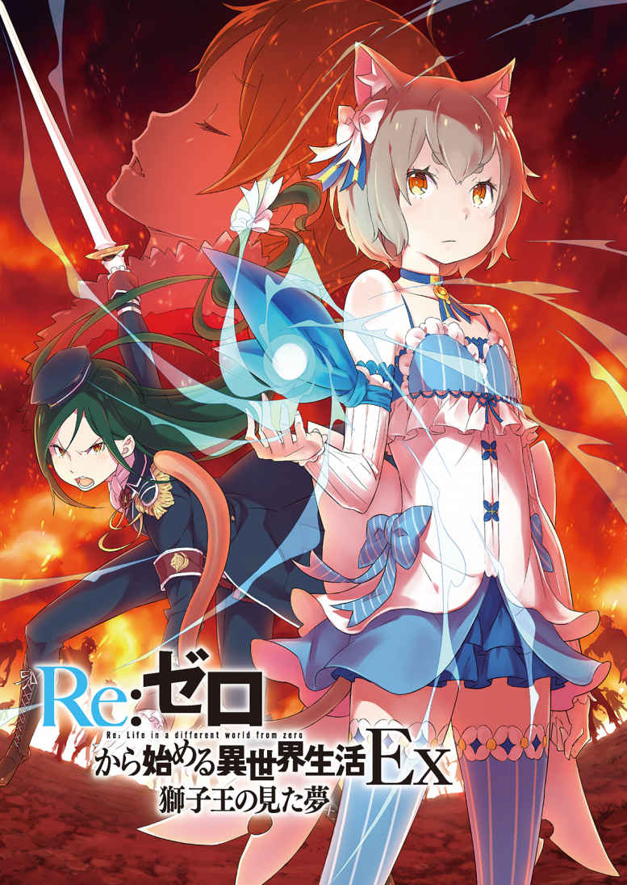
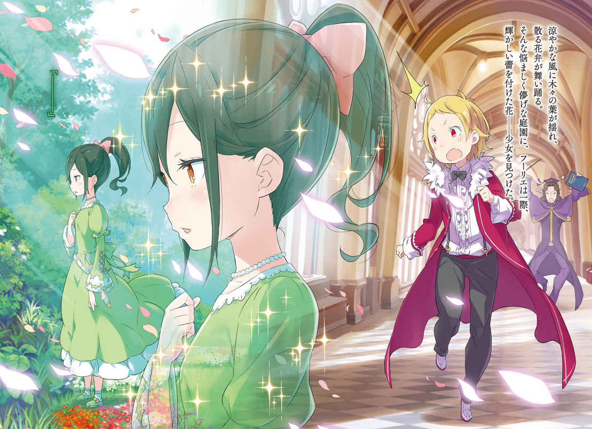
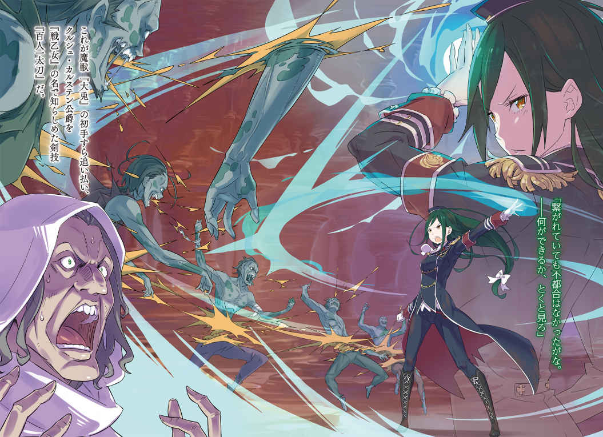
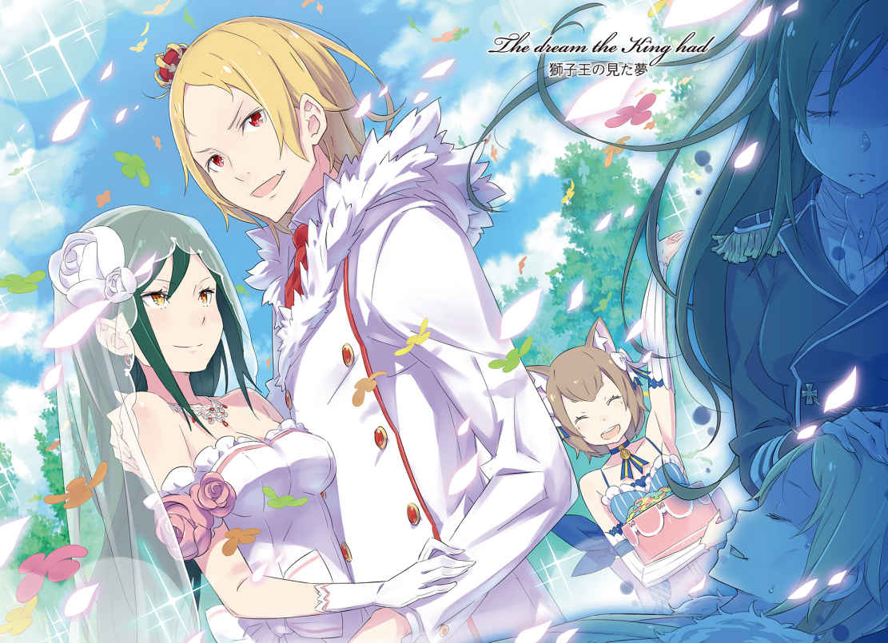
Ｒｅ：ゼロから始める異世界生活Ｅｘ
獅子王の見た夢
長月達平

本作品の全部または一部を無断で複製、転載、配信、送信したり、ホームページ上に転載することを禁止します。また、本作品の内容を無断で改変、改ざん等を行うことも禁止します。
本作品購入時にご承諾いただいた規約により、有償・無償にかかわらず本作品を第三者に譲渡することはできません。
本作品を示すサムネイルなどのイメージ画像は、再ダウンロード時に予告なく変更される場合があります。
本作品は縦書きでレイアウトされています。
また、ご覧になるリーディングシステムにより、表示の差が認められることがあります。
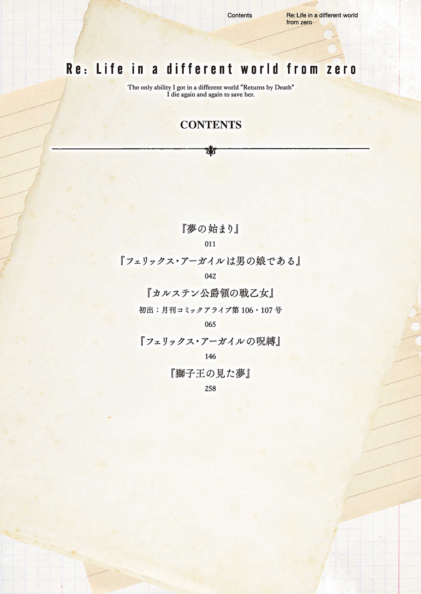
『夢の始まり』
１
城内の庭園にその姿を見つけたとき、フーリエ・ルグニカは思わず足を止めていた。
鮮やかな金髪を風に揺らし、大きな紅の瞳が好奇心に丸くなる。息を弾ませる口元から八重歯を覗かせ、まだ十に満たない少年は背伸びして渡り廊下から身を乗り出した。
お役目から逃亡中のフーリエに、立ち止まっている暇などない。現に渡り廊下の後ろからは、フーリエを追いかける教師の声が聞こえてきていた。
捕まれば、面倒で厄介な授業に連れ戻される──それがわかっていながら、フーリエは眼下に見える光景から目を離すことができない。
「────」
ルグニカ王城の中にある庭園は、宮廷庭師たちが知識と技術の粋を凝らした力作で、豊かな緑と季節ごとの花々が咲き乱れる一種の幻想郷だ。
涼やかな風に木々の葉が揺れ、散る花弁が舞い踊る。そんな悩ましく儚げな庭園に、フーリエは一際、輝かしい蕾を付けた花──否、少女を見つけた。
結い上げられた艶めく緑の髪に、洗練された美しい立ち姿。まだ幼い肢体を包むのは一目で一級品とわかる若草色のドレスだが、凛とした少女はそれを完璧に着こなしている。
フーリエの位置からは横顔しか窺えないが、首から頬にかけての白くなめらかな肌と、琥珀色の切れ長な瞳がその美貌の片鱗を十分に訴えかけてきていた。
それでも、ただそれだけならば少女の印象はフーリエに強く残らなかっただろう。城内で美しい少女を見た、それだけの一瞬の感慨に終わっていたはずだ。
だが、そうはならなかった。
「────」
庭園に佇み、様々な花弁が彩る花園を眺めやる少女。その瞳が花々の艶やかさに奪われているなら、彼女の感性は一般的な子女のそれだ。しかし、少女の瞳は花園の中央を華やがせる花々ではなく、その隅にある一輪の花の蕾へと向けられていた。
ジッと、いまだ花開かぬ蕾に、期待を寄せるような眼差しを──。
「フーリエ殿下！ や、やっと聞き分けてくださいましたか！」
渡り廊下で立ち止まるフーリエに、ようやく追いついた教師が息を切らせる。教師は安心した顔でフーリエを見やり、一心不乱に庭園を覗き込む少年に首をひねった。
「殿下？ 何やら外に珍しいものでもおありで......」
「いや！ なんでもない！ なんでもないぞ！ 気にすることはない！」
確かめようとする教師に、フーリエはとっさにそう言って飛びつく。隠そうと伸ばした手が目に当たり、教師が「目がぁ！」とのけ反ったが気にする余裕がない。それよりも今しがたの騒ぎが、庭園の少女に聞かれていないかが気になった。
おそるおそる、フーリエは庭園に目を向ける。すると、ちょうど何かに気付いた少女がこちらに目を向けるところで、慌てて頭を伏せて視線をやり過ごした。
「い、いかんいかん......なんだ、この変な感覚は。余は病気にでもなってしまったのか。頬が熱い、息が荒いぞ......」
胸の疼きと息苦しさが張り詰め、フーリエはここにいてはマズイと結論付ける。すぐ横で悶える教師の足を掴み、廊下を引きずりながら大慌てでその場を離れ始めた。
「で、殿下！ 痛い！ 痛いです！」
「ええい、我慢せよ。余の力ではそなたを持ち上げるなど無理なのだ。だが、あのような危険な場所にそなたを残してはおけぬ。余は王族、民の誇りであるからな」
「その心遣いは嬉しいですが、痛っ！ そもそも逃げないでいただき......痛い！」
廊下の壁やら柱やらに頭をぶつけられて、声を上げる教師にフーリエは取り合わない。
瞼の裏に、今も少女が焼きついている。それが動悸の原因なのは明白なのに、なぜかいつまで経っても頭から消えようとしてくれなくて。
──この場を離れることに、名残惜しさを感じる自分がいるのが不可解だった。
２
フーリエ・ルグニカは、建国より千年以上の歴史を持つ親竜王国ルグニカ、その正統な王家の血族であり、現国王であるランドハル・ルグニカの実の息子だ。
つまり王位継承権を持つ立派な王子であり、最大級の敬意を向けられるべき存在だ。
「といっても、余は第四王子であるからな。兄上たちがおられる以上、余に政の機会が巡ってくることなどなかろうよ。日々の奮励、実に不毛とは思わぬか？」
「ほっほっほ。なるほど、殿下も小癪なことをおっしゃるようになりましたな」
教養の授業を終えて、私室で憩うフーリエは訪問者とそう言葉を交わしていた。
小癪、と言われて拗ねた顔のフーリエに、笑いかけるのは長い白髪と白いヒゲが特徴的な老人──マイクロトフ・マクマホンだ。王国の頭脳とされる賢人会の代表格で、王国の政を実質的に取り仕切る、まさに賢人。仮に国王が不在となったとしても、彼がいれば王国の機能は損なわれない、などと噂されているのはフーリエも知っている。
父である国王が蔑ろにされるような噂は不愉快だが、マイクロトフは野心なく王国に仕える忠臣だ。その上、為政者としてのセンスに欠ける王族のフォローに奔走してくれているのは事実であるため、フーリエも声高にそれを否定できない。
「父上や兄上でも足りぬのなら、いっそそなたが国王になればよいのだ。その方がずっと物事は簡単に済む。そうは思わぬか？」
「ふむぅ、これは驚きました。そのようなこと、殿下の御身分で軽々と口に出されてよいことではありません。何よりそのような行い、龍の盟約が許しませぬからな」
「龍との盟約......か」
マイクロトフの厳かな頷きに、フーリエは机に頬杖をついて思いを巡らせる。
龍の盟約とは、ルグニカ王国が『親竜王国』と呼ばれる所以──数百年の長きにわたり、王国の繁栄を見守り続けてきた庇護者たる、神龍ボルカニカとの約定だ。
「王国の豊穣も危難も、龍にかかれば思いのまま。そしてその恩恵は、最初に龍と友誼を結んだルグニカ国王の血統にのみ授けられる......出来すぎた話であるな」
「ですが、龍がその盟約に従い、我々に恵みをもたらしているのは事実。それ故に国王様や殿下は、王国にとって決して代わりのいない貴き御身分なのですよ」
「耳にタコができるほど聞いたぞ」
「ふむぅ。私も舌先にタコができるかと思うほどお話ししておりますな」
フーリエが唇を尖らせるが、マイクロトフは己のヒゲに触れてしれっとした態度だ。
「ですので、殿下にはぜひとも御自分の立場についてご納得いただきたい」
「むぅ、ならば仕方な......待て！ 余や父上の血が大事というなら、やはり余がこうして勉学に励む必要はない気がせぬか？ それはどうであるか」
「ほほう、さらに小癪。ですが、たとえ尊ばれる御身分が盤石であれど、暗君や暴君よりも賢君に仕えたく思うのは臣下の常と思われませんか？ そして相応しき才覚は相応の試練なくして花開かぬもの......獅子王の血は、そうでなくては芽吹きませぬ」
「獅子王とは......また錆びついた名前を持ち出したものよな」
珍しく熱の入ったマイクロトフに、フーリエは呆れた態度を取りながら苦笑する。
獅子王とは、龍と盟約を交わした最初の国王──まさに今のルグニカ王国の骨子を作り上げた、『最後の獅子王』と呼ばれる人物だ。
「そなたが獅子王の血に期待するのはわかるが、代を重ねた余らには荷が重い。世界を見渡しても類のなく、歴代でも有数の賢者などそうそう生まれはしまいよ」
「殿下はそうおっしゃいますが、血が薄れたなどということはございません。事実、王家の血筋には数代に一度、傑物が現れます。二代前にも......」
淀みなく語るマイクロトフが、そこでふいに口ごもる。老人は皺深い顔を曇らせ、「いえ」と首をゆるゆると横に振った。
「今のは失言でした。どうも歳を取ると、記憶の引き出しがガタつくものです」
「そなたの引き出しがガタつくのは、王国にとって考え得る最悪の事態に近いな！ 出来の悪い余にばかり構っておらず、大人しく休養するがよいぞ」
「殿下の出来が悪いなどと......」
フーリエが早口に追い出しにかかると、マイクロトフは顔をしかめて抵抗しようとする。しかし、痩せた老人と溌剌たる少年では、力比べの勝敗など決まったようなものだ。
「さて......」
口うるさい老人を部屋から追い出し、一人になったフーリエは上着を脱いだ。そのまま適当な服に着替えると、さらには頭巾で頭をすっぽりと包み込む。目立つ金髪を隠して服装を変えて、万全の態勢を整えてから忍び足で部屋を出た。
廊下に誰もいないのを確かめて、フーリエはそそくさと静かな城内を走り始める。誰にも見つかってはならない、隠密行動の開始だ。
向かう先はこの数日、毎日のように足を運んでいる渡り廊下。
──そこからあの少女を探して、庭園を見下ろすのがフーリエの日課になっていた。
３
身軽に渡り廊下に到着したフーリエは、周囲に人がいないのを確かめてから欄干によじ登り、目的の少女を探して庭園に目を光らせた。
「むぅ......今日もおらぬのか。これほど余が足しげく通っておるというのに、無駄足を踏ませるとは実に怖いもの知らずな娘よ。まったく」
庭園に待ち人が見つからず、フーリエは悔し紛れにそうこぼす。
最初に庭園で少女を見かけた日から、すでに十日ばかりが過ぎようとしていた。
あのときは胸の高鳴りに危機感を覚えて退散したが、気付けばフーリエは再びあの衝動を求めて少女の姿を探している。
胸の疼きが消えたわけではない。むしろ少女の横顔を思い出せばそれは鮮明に蘇る。だからこそこの疼きの解消は、少女に会わなくては果たされない確信があった。
昔からフーリエは、自分の行いに先立つ直感を疑ったことがない。
理由なく、ふいに無数の選択肢の中から答えが浮かぶような感覚があるのだ。そういう感覚から生まれた解答は、いつでもフーリエを正解へと導いてきた。
算術や歴史学の授業、駒を使って遊ぶシャトランジ盤の指し手。極端な話をすれば、数年前に父王の乗る竜車、その脱輪を予期したこともある。
ただ、それらは全て偶然の一言と、再現性のない山勘として片付けられた。教師に告げても世迷い言と切り捨てられる。少しばかり人と違う感性の理解を誰かに求めるほど、フーリエは道理のわからない子どもではなかった。
「いずれにせよ、今はあの娘よ。せめて名前だけでもわかれば話は早いのだが......」
今のところ手掛かりは、登城が許される程度には家柄の確かな娘ということだけ。見かけた日と風体を話せば、城の侍女や衛兵は知っているかもしれないが。
「なぜか、人に頼るのは気に入らぬ。不可解だ。あの娘を余が探していると、誰ぞに知られるのは都合が悪い。うーむ......」
胸の疼きといい、この奇妙なバツの悪さといい、フーリエには不可解続きでならない。そもそも、娘を見つけてどうしたいのかも自分でわかっていないのだ。
「まぁ、会って何をすればよいかなど、それこそ会ってから考えればよいだけのことよ。慎重も過ぎればただの臆病と、昔の偉い誰かが言ったような......む！」
ぶつくさと独り言を口にしていると、ふいに視界の端を何かがかすめた。
フーリエは渡り廊下の欄干から身を乗り出し、ちょうど廊下の真下あたりを通過する人影を目で追おうとする。ひらりと、揺れる裾は若草色に見えた。
──若草色のドレスは、あの記憶に鮮やかな少女と一致する。
「あ」
脳裏に少女の姿が過った瞬間、欄干に掛けていたフーリエの足が浮いた。
前のめりになりすぎてバランスを崩したのだ。そのまま、少年の体は渡り廊下の外へと投げ出される。庭園には石畳が敷かれており、頭から落ちればただでは済まない。
軽率な行いの報いはその命で支払われる──、
「ふごっ!?」
ことにはならずに済んだ。柔らかな感触に体が埋まり、受け止められる。
「ぶふっ！ ばふぁ！ ぺっぺっ！ な、なんだ、土？ 土か!?」
柔らかい土に埋まった体を抜いて、フーリエは口から葉っぱと泥を吐き出す。どうやら石畳ではなく花壇に落ちたらしく、奇跡的にケガはない。
真上を見上げれば、フーリエの転落してきた渡り廊下の裏側が見える。二階ほどの高さとはいえ、無傷で済んだのはまさに偶然の産物だ。
「おお、さすがは余......窮地すらも持ち前の天運で撥ね除けるということか......」
泥で汚れた掌を眺めて、フーリエはそんな風に恐れおののく。
本当に幸運であれば、そもそも転落しなかっただろうことは完全に無視。さっさと花壇を出て、侍女に湯浴みの準備をさせなければ、とフーリエは振り返った。
「────」
そこに、目を丸くしてこちらを見つめている少女が立っていた。
結い上げた美しい緑の髪に、琥珀色の澄んだ瞳。いつか見た若草色のドレスに身を包み、少女はフーリエの瞼に焼きついたままの姿で確かにそこにいる。
「お、おお、おおお......！」
それを認識した直後、フーリエの頬がカーッと熱くなり、まともに言葉が出なくなる。何を言いたいかは会えばわかると思っていたが、会った結果がこの状況だ。
完全に思考の止まるフーリエの前で、少女は目を丸くしたまま頭上を確かめる。彼女の視線は頭上と、フーリエの間を行ったり来たり──その様子でフーリエは気付いた。
少女はきっと、転落してきたフーリエの体を心配しているに違いない。
「なに、心配はいらぬぞ！ 余はほれ、こうしてどこもケガしておらぬ！ 不安にさせたようだが気にするでない。余は全身凶器な男である故な！」
混乱したまま、フーリエはとにかく無事を報せようと両腕を伸ばしたポーズを取る。少女からの反応はないが、少なくとも健在ぶりは伝わったはずだ。
本当はこのまま会話を弾ませたいところだが、格好悪いところを見せた自覚がフーリエの足をこの場から遠ざけたがる。今日のところは、再会だけで満足としておこう。
「では、余は色々と忙しいので失礼する！ そなたも息災であれ......って、あれ？」
サッと手を挙げ、花壇から足を抜いたフーリエは立ち去ろうとした。だが、その一歩は前に立ちはだかる少女の、鋭い視線と固い声に遮られた。
「──そんな言い分が通ると思うのか、不審者め」
見た目に相応しい、凛とした声音だなとフーリエは思った。
しかし、その感情もすぐに別の驚き──少女の手に握られる、短剣の輝きに奪われる。
「おお!? ふ、婦女子がそのようなもの持ち歩くものではないぞ!?」
「父上にも嘆かれるが、こうして役立つこともある。不審な動きはしないことだ。私を女子と侮ることも。──王城での不埒な企み、安く済むとは思わないことだ」
「む？ む？ むー？」
少女の声は辛辣で、落ち着かせようとするフーリエに聞く耳を持たない。本気でフーリエを不審者と睨んでいるらしく、彼女の瞳には躊躇いがなかった。
フーリエと同年代、その歳にして恐るべき胆力──否、違う。
「────」
短剣を掴む少女の指先は、白くなるほど握りしめられている。人に刃を向けることに慣れているはずがない。ただ責任感だけで、彼女は震えを押さえつけているのだ。
喋り方も、再会の仕方も、少女の態度も、何もかもが予想外の展開を辿った。
だが、間違っていなかったこともある。それは、
「そなた、実に良い女子であるな」
想像した以上に、目の前の少女がフーリエにとって好ましい人柄だったことだ。
少女はそのフーリエの呟きに、困惑するように瞳を揺らめかせる。
「......私に誤魔化しは通用しないぞ。嘘や企みは、私の目には透けて見える」
「本心だというのに、そのような受け取られ方は心外であるぞ。いったい、余の何がそんなに気に食わぬというのか。申してみるがよい！」
「......顔を隠している人間が、言葉だけで信用に値するとでも？」
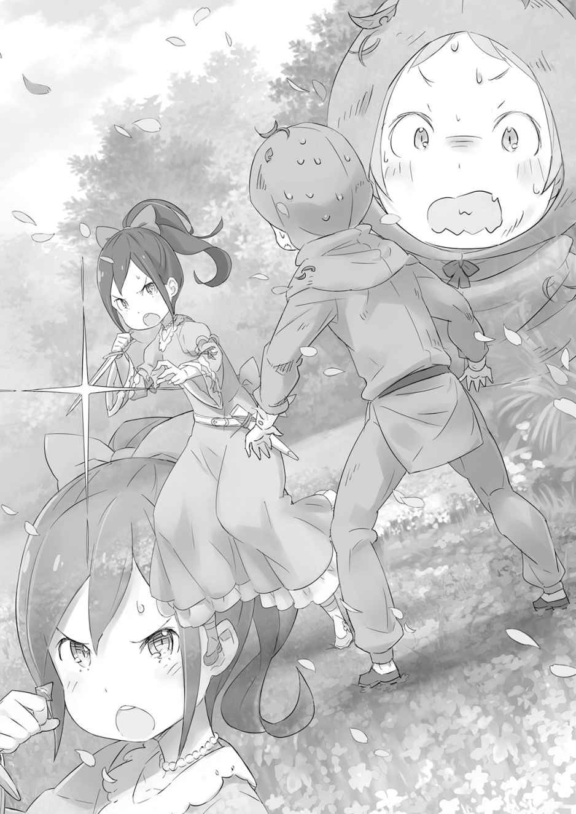
「──？ あ！ ああ、そうかそうか！ これは余の失態であった！」
指摘されてようやく、フーリエは少女の不審の原因が自分にあったことに気付く。
頭に手をやれば、変装用の頭巾で顔は隠されたままだ。大慌てでそれを脱ぐと、フーリエの金色の髪と顔が露わになった。それを見た少女の目が見開かれる。
「困惑させたな。この通り、余は不審者ではない。この国の第四王子、フーリエ・ルグニカである！ さあ、この顔とくと拝すがよいぞ！」
驚く少女に気を良くして、かすかに汗ばむ額を拭いながらフーリエは名乗った。その言葉に少女は警戒心を解き、花開くような笑顔を見せ──、
「大変なご無礼、申し訳ありません、殿下！ かくなる上は自刃もいといません！」
そう簡単に、話はまとまらなかった。
４
フーリエの素性が明らかになり、短剣を収めた少女はその場に跪いていた。
彼女からすればまさに驚天動地。王城に不審者が現れたと思って捕えれば、それが王国の王子であったのだ。剣まで突きつけた事実を思えば、その心境は察して余りある。
「だからといって、その責を問うような真似を余ができるか！ 頭巾被って不審者と誤解させ、その罪で臣民を裁くなどと暴君にも劣る裁断であるぞ!?」
「ですが、殿下にあのような態度......許されてはなりません。どうぞ、処断を」
「変に頑なであるな、そなた！ 潔いが面倒くさい！ ええい、ならば余の言うことに従うがいい！ 余への謝罪であるなら、余の気の済むようにするのだ。そうだな？」
今にも自分に短剣を向けそうな少女を、フーリエはどうにか必死で引き止める。その言葉に少女は「わかりました」と頷き、フーリエに短剣を渡した。
「どうか、殿下のお望みの通りにお裁きください。どのような罰でもお受けします」
「む、どのような望みでも罰でも受けると言ったな？ なんだこの胸の高鳴り......」
真剣な顔の少女を前に、フーリエの胸に変な高鳴りがある。が、フーリエは頭を振って懊悩を振り払い、深い息を吐いて心を落ち着かせた。
「では、罰を言い渡す。そなたには、そうだな......しばらく、余の暇潰しに付き合うように命じる。余の気が済むまで、慰みに会話に付き合うがよい」
「は......？ 殿下、そのどこが罰......」
「待て！ 反論は聞かぬぞ！ そなた、余に望む沙汰をせよと申したではないか。よって余は望む通りにした。そなたはそれに逆らえぬ！ それで話は終わりだ。よいな？」
腕を組み、フーリエはふんぞり返って乱暴に話をまとめた。そんなフーリエに少女はしばし唖然としていたが、少しして口元に手を当てる。そして、
「ふふっ」
堪え切れないといった様子で、少女が笑い出していた。
それはフーリエが少女に見た、初めての年相応の笑顔だ。張り詰めていた表情が破れ出して、そこから見えた少女らしい、愛らしい笑顔。
「拗れたときはどうなるかと思ったが、やれやれであったな。......む」
笑う少女に相好を崩しながら、フーリエはふと手の中の短剣を見て気付いた。少女から手渡された短剣、立派な拵えの一品だが、その柄と鞘に特徴的な彫刻が刻まれている。
それは口を開けた獅子をモチーフにした彫刻で、フーリエにとっても馴染み深い。
「この短剣の彫刻......牙を剥く獅子の家紋であるな。そうなると、そなたはカルステン家の関係者......いや、メッカートの娘であるか！ そうであろう！」
少女の素性にピンときて、フーリエは短剣の彫刻を指差しながらそう言った。すると、少女は観念したように吐息をこぼし、「はい」と厳かに頷く。
「殿下のご慧眼の通りです。私はカルステン家当主、メッカート・カルステンの娘。クルシュ・カルステンと申します。殿下を先に名乗らせるなど、不徳の至りです」
「名乗ったのは余の勝手。顔を隠しておったのも余の身勝手。先の話はこれより掘り返す必要はない。それにしても、そうか。そなたがあのメッカートの娘であったか」
少女──クルシュの名前を聞いて、フーリエはその響きを耳と記憶に焼き付けた。
彼女の父であるメッカートは、上級貴族である公爵家の人間だ。やや弱気な印象があるものの、王家の信頼に厚い忠臣である。あまり目の前の少女と印象は重ならないが。
「クルシュ......良い名だ。そなたの凛々しく、気高い印象によく似合っておるな」
「もったいないお言葉です。ですが、ありがとうございます」
「な、なに、世辞ではない。ああ、そうだ。これも返さねばならんな」
はにかむクルシュに思わず見惚れて、フーリエは頬を赤くしながら咳払い。その感情を誤魔化すように、手の中の短剣を彼女へと差し出した。
クルシュは短剣を恭しく受け取ると、それをそっと胸に抱きしめる。
「見たところ、ずいぶんと大事にしておるようだな」
「......父上からの贈り物なのです。誕生祝いに、気をつけて扱うようにと」
躊躇いがちなクルシュの声は、向ける相手を間違えたことへの反省だろう。その点を掘り返さないように、フーリエはあえて話題の方向性を変える。
「娘の誕生祝いに短剣とは、メッカートにしては気の利かぬ贈り物よな」
「私が欲しがったのです。何が欲しいかと聞かれ、当家に伝わるこの家紋入りの短剣を」
「気が利かぬことはないな！ うむ、短剣よいな！ あると便利、それが短剣！」
「お気遣いいただかなくとも大丈夫です、殿下。私も自分の嗜好が少し、普通の娘とずれているのは理解していますから」
フーリエの必死のフォローに、クルシュがどこか儚げな微笑みを見せる。
クルシュと同じ年頃であれば、着飾るための宝飾品などを欲しがる娘が多いだろう。選択肢を与えられて、家紋入りの短剣を選ぶのは確かに変わり種といえた。
ただ、本当に大切そうに彫刻を撫でるクルシュを見て、そう断ずるのは浅はかだろう。
「よいのではないか？ 刀剣類に心を奪われ、その収集に傾倒するとなればさすがに変わり者であろうが......そなたはそうではあるまい？ そなたの執着は獅子の家紋。であれば余にとっても悪い気はせぬ。これでも一応、獅子王の子孫であるからな！」
「────」
「どうかしたか？」
うんうん頷いて話していたフーリエを、クルシュが唖然とした目で見つめていた。あまり動じない少女かと思えば、こうして様々な表情を見せてくれる。そのことは歓迎すべきことだが、どうせなら笑顔の方が見たいものだ。
そう考えるフーリエに、クルシュは「い、いえ」と口ごもり、
「私が家紋に執着していると......そう受け取られたのが初めてのことで、驚きました」
「なんだ、そんなことか。──だが、事実であろう？」
「はい。そう、なのですが」
確信を持ったフーリエの問いかけに、クルシュはその根拠を求めている。なので、フーリエは堂々と胸を張った。
「言っておくが、余がそう思った理由は特にない。根拠などない、ただの確信である」
「......殿下は、本気でそうおっしゃるのですね。ますます驚きました」
「余は基本的にいつでも本気であるからな。とはいえ、余の規格外さはなかなか余人に計れるものではない。ふふ、余が怖いか？」
「いいえ。ただ、感服いたしました」
クルシュは厳かに顎を引くと、フーリエにも見えるように短剣を持ち上げる。細い指先で彫刻を撫ぜながら、彼女は琥珀色の瞳を輝かせた。
「殿下は、当家の......カルステン家の家紋が獅子である理由をご存知ですか？」
「ぬ......無論だ！ 当然知っておる。......知っておるが、念のためにそなたの口から話すがいい。余が自ら、合っているかどうか確かめようではないか！」
「はい。殿下もご存知の通り、もともと獅子の紋章はルグニカ王家を示すものでした」
それは四百年前──龍との盟約が交わされ、ルグニカが親竜王国を名乗る以前の話だ。かつてルグニカ王国は獅子の紋章を掲げ、国王が『獅子王』と呼ばれた時代があった。
賢く、強く、万民を正しく導く獅子王──その呼び名が失われたのは、最後の獅子王が龍と盟約を交わし、ルグニカ王国においては獅子よりも龍が尊ばれるようになったから。
「龍に守られる恩恵で王国は豊かになり、さらなる繁栄を得た。そして獅子王は必要とされなくなり、獅子の紋章は現在の龍の紋章に取って代わられるように」
「そうだ、思い出したぞ。その失われるはずの獅子の紋章を、当時の王家が重用していた家臣に与えたのだ。そのうちの『牙を剥く獅子』の紋章が」
「我が、カルステン家の家紋となっております」
口うるさいマイクロトフの小言と、逃げっ放しの教養の授業が役立った。それにしても今日はやけに、風化した『獅子王』の響きを聞かされる一日である。
「まったく、獅子王とは......」
「ええ、獅子王です」
多くの人に忘れ去られた獅子王の響きを、軽く流そうとしたフーリエは危うく口を閉じた。同意するように頷くクルシュの、その口元を飾る微笑を目にしたからだ。
それは風化する過去の偉人を、遺物と忘れて笑うような笑みではない。
──むしろ彼女の笑みは、忘れられる獅子王への親しみと憧れに満ちていて。
「あだーっ！」
「殿下!? ど、どうして急に自分を!?」
うっかり笑おうとしたのを止めるために、自分の頬を殴りつけて強制的に笑顔をキャンセル。自分で自分を殴るフーリエに、クルシュが度肝を抜かれて心配してくる。
「大丈夫ですか、殿下？ 何かあったのですか？」
「な、なんでもない。都合の悪いことなどこれっぽっちもなかった！ ちょっと余の頬に虫が止まっただけだ。あのような小さきものにまで愛されるとは、罪な余であるな！」
頬を赤くして涙目のフーリエに、クルシュは誤魔化された顔で「そうですか......」と納得している。痛みを負った価値はあったと、フーリエは自分の判断を称賛する。
それから、改めて獅子王に話を戻し、
「察するにクルシュ、そなたは獅子王に並々ならぬ関心があるようだな。何故だ？」
「大した理由では。それにこのようなこと、王城でお話しするようなことでも......」
「なんだ、誰ぞに聞かれては困る話か？ ならば余とそなただけの秘密とすればよい。余は決して誰にも口外せぬ。余は約束を違えはせぬぞ！」
自信満々に言い放つフーリエに、クルシュは少し黙ってからまた笑った。
王城最大の関係者に話して、秘密にしたいもなにもない。自分が王族であることを忘れたようなフーリエの言葉に、クルシュは毒気が抜かれた顔をしていた。
「時々、思うのです。自分の家の家紋の意味を知り、王国を守る龍の盟約を知って、この小さい体には過ぎたことだとわかっていながら」
「思うとは、何をだ？」
「獅子王の時代には、今ほどの安寧はなかったことでしょう。ですが、きっと今ほどの停滞もなかった。龍の揺り籠は安らかですが、あまりにも優しすぎる」
「────」
クルシュのその言葉に、フーリエは思わず息を呑んだ。
押し黙るフーリエを見て、クルシュがふっと唇をゆるめる。それは先ほどまでの好意的な笑みではなく、どこか大人びたものを感じさせる達観した笑みで。
「王国への不敬であると、殿下は咎められますか？」
「正直なところ、余とそなたの秘密でよかったと思っておる。確かにこれは大っぴらに話していいことではない。ことではないが......」
クルシュが何を見ているのか、フーリエにはイマイチ見えてこない。
それは知識の違いであり、生き方の違いでもある。クルシュの人となりを、今ここで知ったばかりのフーリエに、彼女が抱いてきた疑問の答えを差し出すことはできない。
懊悩するフーリエを見て、クルシュは目を細めた。そして、肩の力を抜く。
「忘れてください、殿下。身の程知らずな娘の、単なる世迷い言です。兄弟がいないとはいえ私は女。カルステン家の家紋に......獅子に見合った生き方は選べない」
選べない、そうクルシュは諦念まじりに口にした。
やりたいことがあるけれど、できないことがあると。それはきっと、クルシュという少女が普通の子女と決定的に違う理由で。フーリエの目に留まった理由そのもので。
縮こまっていた心が急速に熱を帯び、フーリエは八重歯の見える口を開く。
「世迷い言などと......誰に言われたとしても、自分で認めるほどの屈辱はないぞ」
「......殿下？」
世迷い言と、自分のことを理解されない苦しみはフーリエも知っている。
それこそ、フーリエ自身も諦めたことがある──それを棚上げしてでも、許し難い。
フーリエの目を奪った少女が、その理由そのものを手放そうとする姿が。
「そなたが何を望み、何を為そうとしているのか余にはわからぬ。きっとそなたが願いに邁進した結果が、今ここにあるそなたなのであろう。そなたはその時間を、今を、どうやら無為なものだったと思っておるようだが......」
立ち姿に見惚れ、横顔に見惚れ、言葉に聞き惚れ、過ごす時間に惚けさせられた。
フーリエにそう思わせた全てが、クルシュが諦めて手放しかけた願いへ歩み寄った結果だ。ならばその否定は、フーリエの中の熱情の否定でもある。
──それは間違いだ。他でもない、フーリエにはそれがはっきりとわかる。
「きっとそなたは余よりも賢い。だが、余にとって賢さは関係ない。そなたは間違っておる！ 余にはそれがわかるのだ！」
「......殿下も、やはり私の見るものは間違っているとおっしゃるのですね」
「知らん！ 何が間違っているのかはわからん！ でも、何かが間違っておるのだ！」
身も蓋もないフーリエの言い掛かりに、クルシュは呆気に取られた顔をした。
クルシュにとって、自身の考えを否定される機会は幾度もあった。誤っていると指摘され、周囲と違うと言われ続け、自分が正しくないのではと思わされていたはずだ。
ただ、フーリエの否定はそれまで彼女が浴びせられてきた否定とは、芯が違う。
「諦めた顔で勝手に笑うな！ 世迷い言でもそなたの言葉よ。余は笑わぬし、笑うような者とて結果は見えておらぬ。どんな結果に......そう、どんな花が咲くかわからぬ。そなたはまだ蕾であるのだ！ 蕾にどんな大輪の花が咲くか、花開く前にわかるものか！」
蕾とはいい表現を思いついた、とフーリエは自画自賛する。それからフーリエは花壇を振り返り、咲き乱れる花々の隅で蕾のままの一輪を指差した。
それは十日前、フーリエがクルシュを初めて見かけたとき、彼女がジッと見つめていた一輪だ。その花はいまだ蕾のまま、開花の時を待っている。
「そなたが何を見ておるのか、余にはよくわからぬ。わからぬが、あの蕾を見たときのそなたの心はわかる。それはきっと、余と同じであるからだ！」
「────」
「つまり、その、なんだ！ あまり人と違う違うと自分を責めるのはやめるがいい。そんなことには意味などないし、大したことでもない。たとえ違うところがあろうと、同じものを見て、同じものを美しく思えるのであれば余らはうまくやっていけよう！」
拳を振り上げて熱弁すると、フーリエは「どうだ！」とクルシュに意気込んでみせる。クルシュはそのフーリエの勢いに圧倒されて、すっかり目を丸くしていた。
ただ、彼女は黙ったまま、フーリエにつられるように花園にある蕾の一輪を見やる。
「......今日は、その蕾が花を付けたかどうかが見たくてここへきたんです」
「であろうな。そなたはずいぶん、興味深げにあの蕾を見ておった故な」
「──？ 殿下はここで私を見るのは、初めてではなかったのですか？」
「あ！ いや、初めてであるぞ！ 今のはなんだ、そう、勘である！ 嘘ではない！」
余計なことを言って話の腰を折るフーリエに、クルシュは追及せずに笑った。
「同じものを見て、同じものを美しく思えるなら......」
小さな声で、クルシュはそう口にする。それから彼女は少し吹っ切れたような顔で、
「殿下。この蕾が花を咲かせたら、ご一緒させていただいても構いませんか？ 違っている私でも、殿下と同じものを同じように感じられるか確かめに」
「お、おう？ 構わぬ！ うむ、構わぬぞ。苦しゅうない！」
薄く微笑むクルシュに誘われて、フーリエは首から上を赤くして有頂天で答える。
そんな二人のどこかずれた、しかし微笑ましくもあるやり取りを、風に揺らされる花々と蕾だけが黙って眺めていた。
５
「つまり、フーリエ殿下のお心煩いの原因はクルシュ・カルステン嬢であったご様子です」
ルグニカ王城の一室──書棚に囲まれた部屋で、マイクロトフは報告を受けていた。
彼の賢老の前に立つのは、フーリエの教養の授業などを担当する教師だ。もともと移り気なフーリエであるが、近頃は特に授業に集中できていない。その原因がなんであったのか、教師から聞かされたマイクロトフは長く蓄えたヒゲを撫でて頷く。
「ふぅむ。なるほど、メッカート殿のご令嬢ですか。聞けばご令嬢も変わり者とのことですが......フーリエ殿下と、それで気が合ったのですかな」
「私にはわかりかねます。ですが、ご令嬢と殿下が親しくされているのは事実のようで。先日も、庭園に咲いた花を二人で見にいくと......」
「それは微笑ましい。......ですが、それで授業が疎かになるのは」
「あ、いえ、それなのですが」
教師がマイクロトフを遮り、賢老の眉を上げさせる。
「殿下の授業態度ですが、以前よりも集中されるようになりました。ひょっとすると、ご令嬢との付き合いで、その......」
「良いところを見せようと励んでおられる、と。それはますます微笑ましいことですな」
教師が言葉に躊躇ったことを、マイクロトフははっきり口にしてしまう。教師もそのことに頬を掻いたが、直後にマイクロトフの視線の鋭さが変わり、背筋が正される。
賢老の眼差しに射抜かれて、教師は喉が渇くのを感じた。マイクロトフは問う。
「それで殿下ですが......血の兆しはありましたかな？」
「それがその......いえ、そのようなご様子は、少なくとも私の見た限りでは......」
教師のその返答に、マイクロトフの瞳に失望が浮かんだ。賢老は長いため息をこぼす。
「ふぅむ、そうですか。......獅子王の再臨は所詮、夢でしかない、か」
求める結果が得られず、マイクロトフは落胆を隠せない。その賢老の願いと思想にイマイチ共感できず、教師としては黙ってかしこまっている他にない。
王国最大の賢人は、獅子王時代の賢君の再来を望んでいる。
だが、そんなことに何の意味があるというのか、というのが教師の考えだ。王国は龍の盟約に守られ、その庇護下にある。王族には血を継ぐ、それ以上のことは求められない。
故に教師はマイクロトフに、フーリエの持った特異性を報告することをしなかった。
時々、フーリエは説明のつかない直感力を発揮することがある。だが、駒遊戯や算術の授業での閃きを、教師は単なる山勘の一種であると切り捨てていた。
それが賢君としての資質に繋がるなどと、現実主義の教師には考えられなかった。
マイクロトフの理想に共感せず、フーリエの才覚にも理解が及ばない。
この教師は教師としては優秀な人物だったが、あくまでそれは凡庸な王国民としてだ。演者としてこの舞台に上がるには、役者不足という他になかった。
「であれば、殿下にはせめて健やかな日々を。それまではこの老骨が、もう少し骨を折るのを続ける他にないようですな......」
しかし、賢老であっても他者の心まで見透かせるわけではない。
教師が胸に抱え込んだ、自らの求める報告にマイクロトフは気付けない。そしてフーリエもまた、自分が何を望まれているのか知らないまま日々を過ごす。
それはある種の悲劇であったが、同時に運命に対する大きな皮肉でもあった。
──その事実が正しく意味を為すのは、これよりずっと未来の話になる。
６
その後、フーリエ・ルグニカは自分にかけられた期待の目も、その期待が知らず知らずの間に失望に変わったことにも気付かず、以前より充実した日々を過ごすことになる。
蕾が大輪を咲かせるのを見る──その約束は、クルシュと約束した数日後に叶った。
そのときのクルシュの微笑みは、フーリエの脳裏に鮮やかに焼き付いている。
「──殿下、美しいですね」
「うむ、そうであるな！ 余はこれを決して忘れまい！」
花を見つめるクルシュの言葉に、フーリエが何を覗き見ていたかは伏せておこう。
その後も、フーリエとクルシュの庭園での逢瀬はたびたび続けられた。王城を訪れたクルシュは庭園へ足を運び、そのたびにフーリエが必ず顔を出すようになったからだ。
ただ、大輪の開花を見届けたクルシュには以前と変わったところがある。
「最近はそなた、髪は結わなくなったのだな？」
庭園での逢瀬の回数が増してくると、次第にクルシュの雰囲気が変わり始める。最初の頃の彼女は髪を結い上げ、少女らしいドレスを身にまとっていた。
しかし、このところ王城で見かける彼女は長い髪を下ろし、ドレスのデザインも洗練されたものに変わっている。
「殿下のお言葉のおかげですよ」
そのことを指摘されたクルシュは、フーリエの言葉にふっと唇をゆるめた。しかし、フーリエにはその心当たりがない。クルシュの変化に、自分が何を言ったものかと。
「わからなくてもよろしいんです。ただ、私はそのことに感謝していると」
「むー！ だが、それでは余がすっきりせぬではないか。なんだ、もやもやするぞ！」
不満げなフーリエに、クルシュは何も言わずに腰のあたりを探る。そこにあの短剣があり、指先が獅子の紋章に触れる癖があるのをフーリエは気付いていた。
その癖を見ていると、目の前に自分がいるのに獅子王に彼女を取られた気分になる。
「そなたはよくよく、獅子王が好きであるからなぁ」
「殿下、それは誤解です。私はただ、王国を支えた獅子王ほどの王に、最高の忠臣と認められた先祖を誇らしく思っているだけです。......頻度が多い自覚はありますが」
拗ねるフーリエへの言い訳に、顔を赤くするものだから説得力がない。ますますつまらない気分になり、フーリエは恨めしげに彼女の短剣を睨んで、
「だが、獅子王はもうおらぬ。そなたがどれほど憧れても、同じ評価を得ることは......」
「────」
「あ！ 違う！ 違うぞ？ 今のはその、言葉の綾というか、違うのだ！」
不用意な言葉がクルシュの急所を抉ったのか、押し黙るクルシュは悲しげだ。その様子にあたふたと声を上げ、フーリエは「よし！」と手を叩いた。
「ならば、余がそなたの憧れの見届け人になろうではないか！」
「殿下？」
「そなたの王国への想い、獅子王が認めた忠臣に比類するか余が見極めようではないか！ なに、余は獅子王の血族！ そなたの決意、見届ける資格は十分にあろう！」
堂々と言い張り、フーリエは自分の胸を叩いた。
その無茶苦茶な言い分に、クルシュは呆気に取られた顔をして、また笑う。
「む！ なぜ笑うのだ。余の完璧な理論、我ながら惚れ惚れするほどであるのに！」
「い、いえ......申し訳ありません。ですが、殿下が本当に、すごいお方なので」
「ははーん。さてはそなた、余が獅子王ほど忠を誓うに値するか迷っておるな？ よかろう！ ならばそなたはそなたで、余を見ているがいい。余はそなたの忠を、そなたは余の器を見る。これは余とそなたの、獅子王と忠臣が交わした絆の再現である！」
「あは、あはは！」
「笑うな──!!」
フーリエの宣言に、クルシュが花が咲くように笑い、フーリエも笑った。笑い合った。
二人の交わしたこの誓いが、本気にされたかはわからない。ただ、その後も二人の親しい付き合いは長く続くことになり、やがてそこにもう一人の少年が加わる。
そうなったとき、フーリエはこの誓いを発端とした絆に夢を見ることになる。
だからまだ、これは夢の始まり──フーリエ・ルグニカの見た、夢の始まりなのだ。
《了》
『フェリックス・アーガイルは男の娘である』
１
「大変であるぞ！ 余は見合いをせねばならなくなってしまった！」
麗らかな午後の昼下がり、カルステン邸にそんな突拍子もない声が響いた。
応接間のドアを開け放って、赤い顔のまま息を弾ませるのは金髪の少年だ。
紅の瞳に、特徴的な八重歯。仕立てのいい衣装と、毛皮をあしらった豪奢なマントがやけに似合う美少年だ。厳かに黙り、微笑めば多くの女子の心を虜にするだろう。
もっとも、その少年がそんな風に大人しくしている場面など見たことがないが。
落ち着きのない少年、彼の名前はフーリエ・ルグニカ。親竜王国ルグニカの第四王子、その肩書きを持った若き王族である。
「落ち着いてください、殿下。そう慌てられては、こちらも戸惑ってしまいます」
そう応じたのは、欠片も戸惑いを感じさせない声で応答する少女だった。
長く美しい緑髪を白いリボンで束ね、未成熟な肢体を男物の衣装に包んでいる。琥珀色の切れ長の瞳と凛々しい顔立ちが、将来の美貌を約束したような少女であった。
少女の名はクルシュ・カルステン。この屋敷の主であるメッカート・カルステンの一人娘にして、いずれ公爵家を背負って立つことになる未来の傑物だ。とはいえ、今の彼女はまだ十四歳──いまだ、その才気が周囲に知られる機会には恵まれていない。
「これが落ち着いていられるものか！ 余の、見合いであるぞ！ これはそなたにとっても一大事ではないか！ そうは思わぬか、フェリス！」
「ふえ!? フェリちゃんに振るんですか？」
フーリエの発言の矛先が、ぐるりと曲がって自分に突き刺さる。水を向けられて驚いたのは、亜麻色の猫耳を震わせる少女──風の少年、フェリックス・アーガイルだ。
故あって女装するフェリックスはフェリスを名乗り、クルシュの傍付きとしての役目を負ってもう五年になる。フーリエとの付き合いも同じだけ長く、この騒がしい王子様が運び込んでくる厄介事を、楽しむだけの度量も持ち合わせていた。
「んー、そうですネ。でもでも、フーリエ様も十四......もう子どもじゃないって認められると思えば、お見合いさせられるのもやむにゃしかも」
驚きから立ち直ると、フェリスは唇に指を立ててそんな風にこぼす。すると、それを聞いたフーリエの顔が蒼白になり、わなわなと握った拳が震え出した。
「な、ならぬ！ ならぬぞ！ 余は見合いなど、絶対にせぬ！ お断りだ！」
「しかし、殿下。伴侶を持ち、子を成して血を継ぐのは王族の務めです。殿下が嫌がったとしても、避けられない問題には違いありません」
「む、むう？ いや、そうなのだが。というか、別に余は誰とも婚姻したくないと騒いでいるわけではなく、その、なんだ......余にも選ぶ権利があるというか、そもそも余には見合いなどせずとも......ええい、何を言わせるつもりだ！」
「殿下のヘタレ......」
見合いに大反対するフーリエを、クルシュが反論の余地がない正論でぶった切る。これにフーリエは抗弁しかけたが、あと一歩及ばず、真っ赤な顔で癇癪を起こしてしまった。
その結果に、フェリスは長々と深々とため息をこぼすしかない。
もう五年、この二人のやり取りを眺めてきたフェリスには、まったくもどかしくてしょうがない。フーリエの恋心がクルシュに向いているのは自明の理だ。長く想い続けてきた相手がいる身で、見合いに乗り気になれないのも当然のことだろう。
それならそれで、フーリエが自分の心に素直になってしまえばいいのだ。第四王子のフーリエと、公爵令嬢のクルシュ。身分は釣り合い、障害などないに等しい。
ただし、
「フェリス、殿下がすっかりへそを曲げてしまわれた。私は何かおかしなことを言ってしまっただろうか？ お前はどう思う？」
声をひそめて、フーリエに聞こえないように耳打ちしてくるクルシュに他意はない。
フェリスの終の主人であり、世界で最愛の少女は好意以上の感情に究極的に鈍感だ。フーリエの恋路に障害はないが、最大の難敵である本丸が落ちないという問題はあった。
ますます、フーリエには早々に告白する男気を持つことが待たれるが──。
「ううん、クルシュ様はなーぁんにも悪くにゃいです。悪いのは全部殿下、殿下が悪いんです。殿下のヘタレが治るよう、クルシュ様もお声かけしてあげてください」
「ふむ、わかった。お前が言うなら間違いないだろう。殿下、私にはわかりませんが、殿下のヘタレとやらが治るよう、心よりお祈り申し上げます」
「ぐはぁ！」
意中の相手に悪気なくヘタレを指摘されて、フーリエは胸を押さえて膝を着いてしまう。その様子にクルシュは目を丸くして、フェリスを咎めるように見た。
「フェリス、あとでお仕置きだ」
「やーん、フェリちゃんはただ、クルシュ様に笑っていただきたかっただけですのにぃ」
「まったく、聞こえのいいことを。私の『風見の加護』から、これだけすり抜けるのはお前ぐらいのものだ。万能でないと思い知らされるのは悪い気分ではないがな」
「そう、フェリちゃんはクルシュ様にそうご進言したかったんです。ホントですよ？」
「信じよう。それはそれとしてお仕置きはさせてもらうがな」
真面目腐った顔で頷くクルシュは、有言実行しなかった例がない。お仕置きの響きは素敵だが、実際、本当にお仕置きなので悪ふざけもわりと覚悟が必要だ。
「それでも、フェリちゃんは悪ふざけし続ける。愛しいクルシュ様の、滅多に見れない驚き顔を焼きつけるために......！」
「ええい！ そなたらいい加減にせよ！ 余がへっこんでしゃがんでおったら慰めるのが当然であろう！ 余を差し置いて楽しげにするな！ 寂しい！」
放っておかれたフーリエが拗ねて、そんな風に騒ぎ出す。
子どものように喚くフーリエをなだめるのは大変だ。クルシュとフェリスは二人がかりで、その対応に追われてしまう。
その役回りが嫌だなんて、まるで思わないのがこの三人の関係なのだが。
２
フーリエの癇癪も落ち着き、三人は改めて応接間で件のお見合いの詳細を話していた。
「見合い相手はグステコの、大司教の家系に連なる娘だそうだ。年齢は十九で、余よりも五つも上であるな。うむ、これはうまくゆかぬ。見合いは破談だ」
「殿下、殿下、根拠が弱いですってば」
結論ありきのフーリエを、フェリスが怒らせないようにしながらたしなめる。
グステコ聖王国は四大国の一つで、激しい寒気と豪雪が一年中続くことで知られている。厳しい環境ならではの宗教観が息づき、独特な精霊信仰があることも有名だ。フーリエの口から出た大司教という身分も、グステコでは非常に貴い役職であった。
「大司教って言ったら、ルグニカだと賢人会ぐらいの上級貴族ですよネ？ そこと姻戚関係になるってことは、国にとってもおっきな意味がありますし......」
「二国間でも非常に有意義な婚姻といえる。殿下、これは大事なお役目ですよ」
「待て待て待て待て！ さっきの繰り返しになるぞ！ いつからそなたらは聖王国の回し者になった！ 余は見合いしたくないのだ！ 助けて！」
半泣きのフーリエが、フェリスの足に縋りついてくる。人に見られたらとんでもない状況だと思いながら、フェリスは泣き虫王子の頭を撫でてあやした。
「フーリエ様がそこまで嫌がるにゃら、話はお流れににゃるだけだと思いますけど......さすがに嫌だから、で突っぱねるのは無理ですよ？」
「うむ、それはさすがに余もわかっておる。というか、素直にそのまま言ったらマイクロトフに珍しく怒られたのだ。あんな風に怒るとは、余も知らなかった......」
聡明で温厚と知られる、賢人会のマイクロトフ。とんでもない相手をすでに怒らせていることに頭を抱えつつ、フェリスはどうしたものかとクルシュの方を見た。
「クルシュ様～、どうしたらいいと思いますか？」
「そうだな。王国のことを思えば殿下には諦めていただきたいが、私も殿下には御恩がある。その殿下に助けを求められた以上、できるだけお応えせねばならない。ときに殿下、この婚姻が成立した場合、お相手の令嬢が王国へいらっしゃる形でしょうか」
「いや、マイクロトフは少し寒いところで勉強してこいと余に......無理であるぞ！ 余は暑いのも寒いのもダメであるが、寒い方がずっと辛いのだ！ 故にぽかぽかしてきた今日のような日でも、毛皮が手放せぬのであるからな！」
見合いに気乗りでない上に、結婚後の生活にも不安がある。ここまで全力で拒否されていると、もはや相手のご令嬢の方が気の毒になってしまう。無論、相手のご令嬢もフーリエの人柄と付き合えば、同じぐらい振り回されて苦しむ可能性もあるが。
「そう考えると、ひょっとしてこのお見合いって当事者どっちも幸せじゃないかも......」
貴族の婚姻なんてそんなものだ、と割り切ってしまえばそれまでの話。だが、フェリスはクルシュを敬愛すると同時に、フーリエにも強い親愛の念を抱いている。
できるなら二人には、この世で最高に幸せになってもらいたい。最悪、そこに自分の居場所がなかったとしても──フェリスは、そう考えているのだ。
「仕方にゃい......殿下もこれだけおっしゃっていますし、お見合いをぶっ壊す方向で考えましょう。なぁに、今さら殿下の評判なんてもう下がりようがありませんから！」
「おお！ やる気になってくれたか！ 実に心強いぞ、フェリス！ して、どうする？ 先に別の婚姻を結んでしまうか。その、なんだ、誰かと！」
「それは殿下が人生最大の勇気を出さなきゃ無理ですにゃー」
意気込もうとしても一歩足りない。フーリエの意気地なしに舌を出しながら、フェリスは難しい顔をしているクルシュの手を取った。そしてその手を、まだフェリスの膝に縋りついていたフーリエの手に重ねる。
「こうです。お相手のお嬢様には悪いですけど、フーリエ様にはすでに心を通わせた恋人がいる......そういう風に、お見合いでは押し切りましょう！」
「そそそ、そんな手が!? いやしかし！ 余とクルシュは、その、恋人では！」
「ええ、違います！ 違いますけど、相手を信じさせて引き下がらせればいいんです！ そのあとで二人がケンカ別れしても、もう全然、なんにも関係にゃいんですっ！」
「フェリス、なぜか余の心が痛い！ 胸と背中が痛い！ 治癒魔法をかけてくれ！」
「それは魔法じゃ癒せない痛みにゃので、無理です！」
三人で手を重ねたまま、フェリスの勢いにフーリエが呑み込まれる。そして次第に、自然とクルシュと恋人のふりができることに気付き、フーリエの頬が赤みを増した。
そうなれば調子に乗るのは早い。フーリエはやけに自信ありげに立ち上がり、
「ふっふっふ、よかろう。さすがはフェリス......余の役者としての実力に気付くとは、褒めてつかわす！」
「いえいえ、全ては殿下のちょろいお人柄あってのことです。フェリちゃんは何も！」
「ははは、そう褒めるでない！ うむ、いい気分になってきたぞ。さっきまでの胸の曇りようが嘘のようだ。よし、そうとなればクルシュ！」
馬鹿笑いして普段の調子を取り戻し、フーリエがクルシュへと手を差し伸べる。白い歯を見せて、フーリエは悪戯小僧のような顔で愛しい少女を呼んだ。
「余と協力し、此度の見合いを台無しにせよ。その協力を、そなたに求め......」
「恐れながら殿下、お伝えしなければならないことがあります」
「む......なんであるか」
せっかくの口上が遮られて、フーリエは不満げに唇を尖らせる。そのフーリエにクルシュはかしこまった顔で、しかし形のいい眉をひそめながら言った。
「実は件の見合いの日取り、私はすでに父より用事を申付けられております。それも、王宮でマイクロトフ様からのお呼び立てだと......」
「にゃにゃ!?」
呆気に取られるフーリエと、驚きを隠せないフェリス。しかし、思考停止したフーリエと違い、フェリスはその仕組まれたような間の悪さが、実際に仕組まれたものだと見抜く。
「先にクルシュ様の予定を埋めて、お見合いを壊されないように先手を打たれた？」
「父とマイクロトフ卿なら、そうした謀もされよう。無論、本当に偶然の可能性もあるが......ですので殿下、私は力になれそうもありません」
「そ、そうであるか......べ、別に構わんぞ。はは、別に......うん、いいよ」
落胆と失望と動揺が隠し切れず、フーリエは尻餅をついて塞ぎ込んでしまった。その姿があんまり哀れで、フェリスは大慌てで慰めにかかる。
すると、その様子を眺めていたクルシュが首をひねり、頷いた。
「殿下、相手は別に私でなくとも構わないのではありませんか？」
「──え？」
フェリスとフーリエが同時に顔を上げ、同時に声を上げる。
その息の合った二人の反応を見て、クルシュは珍しく、本当に珍しく頬を歪めた。
高潔な彼女が滅多に見せることのない、悪いことを考えた人の笑顔だった。
３
──当日、見合いはルグニカ王国とグステコ聖王国、その国境に程近い屋敷にて行われた。会場となったのはルグニカ北部を取りまとめるミゼール子爵邸で、こっそりと今回の企みを囁かれた子爵は存外に乗り気だった。
「聖王国の連中は薄気味が悪い。ルグニカ王族の血に、あの夢見がちな連中の血が混じるなど考えたくもありませんな。特に今日のご令嬢はひどい。破談、大いに結構！」
あまり大きな声では言えないが、国境沿いの領主には苦労が絶えないのだろう。これで少しは溜飲が下がると、全面的なお目こぼしを約束してくれた。
「メッカート様もそうだけど、偉くなるのって変な人じゃなきゃダメにゃのかな」
ミゼール子爵の人柄に、フェリスは厄介になっている屋敷の主を思い出す。メッカートも貴族らしからぬ人物だが、思い返すと王城で見知った顔ぶれはそういった人間が多かったかもしれない。数年前、治癒魔法の習熟のために研修した日々が思い出された。
あの日々で出会った人々も、貴族らしい貴族はいなかった印象が強い。
「まぁ、一番身近にゃところの人たちが全然それっぽくにゃいもんネ」
クルシュにフーリエ、メッカートと人柄に文句のつけようがない。面子を気にして、強権を振るう見本のような貴族は、ひょっとすると自分の両親ぐらいではないだろうか。
「あー、やだやだ。大舞台の前にゃのに、変な風に気持ちが沈んじゃうじゃにゃい」
頬を張って気合いを入れようとして、赤くなっては大変だと平手を引っ込める。
せっかく、いつも以上に念入りに準備したのだ。クルシュの手配で同行してくれた侍女たちは、最高のパフォーマンスを発揮してくれた。それだけ、この場にこられなかったクルシュにも期待されているということだ。
そう考えただけで、フェリスの心は翼をもらったように軽やかに浮かび上がる。
「よし......フェリちゃん、いきますっ」
脳裏に描いたクルシュに背中を押されて、フェリスは控室の外に出た。そのまま戦場へ向かう覚悟でスカートの裾を揺らすと、廊下で待っていた子爵が笑みで見送ってくれる。よくわからない勢いに乗ったまま、フェリスは目的の部屋へ辿り着いた。
閉じた扉の前で、子爵の部下が緊張した面持ちでフェリスに頷きかける。そして、フェリスは開かれる扉から姿を覗かせ、堂々と見合い会場に乗り込んだ。
「──フーリエ殿下は私の恋人、こんなお見合いは許せませんわ！」
クルシュに代わって、このお見合いをぶち壊す立場として。
４
乱入したフェリスを加えて、見合いの席は非常に混迷とした空気に呑まれていた。
どうやら見合いは当事者を二人きりにする流れだったようだが、そこにフェリスが割り込んだ形だ。二対一、数の上ではフーリエ側が有利に立った状況だ。
しかし、数ではなく質で比較した場合、大きな誤算があった。それは、
「お、お相手の方......とってもお強そうな方なんですネ？」
言葉を濁しながら、フェリスは正面に座っているフーリエの見合い相手を評する。
現在、三人は見合い会場の一室で、小さなテーブルを挟んで向かい合っている。フーリエの隣にフェリスが座り、フーリエの正面に見合い相手の形である。
だが、見合い相手は数の不利を覆すような、圧倒的な存在感を放つ人物だった。
「お気遣いいただかなくて大丈夫ですわ。人一倍、体が大きいのは自覚がありますもの」
ゆるゆると上品に首を振り、相手のご令嬢は恥ずかしげに俯いた。仕草だけ見れば、なるほど育ちの良さがうかがえると納得したいのだが。
──残念なことに、人一倍の表現が謙遜では済まないぐらい体が大きい。
令嬢はフーリエの正面に座っているが、フェリスの正面に座っていると感じてもおかしくないぐらい幅を取っている。人ではなく、岩と対峙しているようなものだ。
「そ、それでだな、ティリエナ嬢......」
しかも名前が可愛い。雪の妖精でも現れそうな名前だが、その実態は白い岩壁だ。積雪の多いグステコでは、女性は雪が染み込んだように白い肌をしていると聞くが、ティリエナ嬢の肌も例外ではない。肌だけ見れば絶世、離れて見れば絶壁といった様相だ。
普段は強気なフーリエも、令嬢の圧迫感に気圧されているのか歯切れが悪い。それでもどうにか横のフェリスの肩を抱いて、そっと細い体を引き寄せてくる。
「わ、わざわざ遠方より足を運んでもらって悪いのだが、余にはこうしてすでに想い人がおる。残念ながら此度の縁談、受けるわけにはゆかぬのだ」
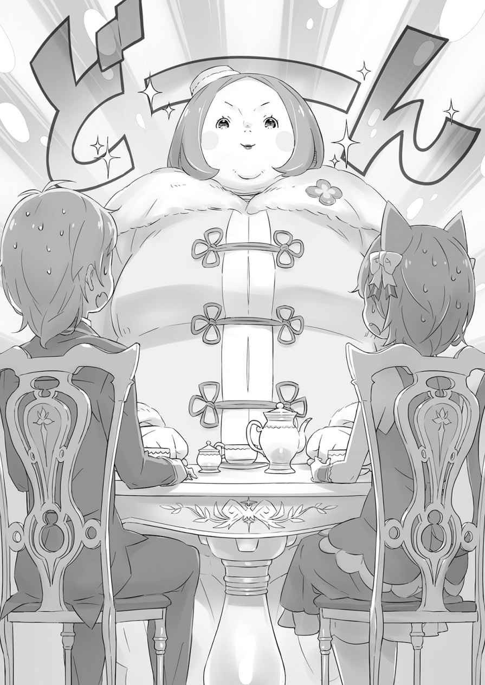
「そうなんです。私、殿下以外の人と結ばれるなんて考えられなくて。ですからお願いします。どうか、私たちの仲を引き裂かないで......っ」
やや口ごもるフーリエに対して、演技過剰なフェリスの言葉。涙ながらの訴えに心を打たれたのか、ティリエナ嬢は彫りの深い顔立ちに憂いを浮かべ、俯いた。
「どうかお二人とも、謝らずにお顔をお上げくださいな。お二人の想い合う気持ち、わたくしも痛感いたしました。わたくしの方こそ、お恥ずかしいですわ」
ティリエナ嬢は北国特有の、露出が少ない毛皮のドレス姿だ。その胸元をそっと押さえて、彼女は理性的な瞳でフェリスたちを見つめた。
「数十年前の内戦、聖王国でも聞き及んでおります。内戦が終わってなお、わだかまりが残っていると聞いていましたが......フーリエ様と恋人様の間に、そのような障害は関係ありませんのね。美しい、愛情だと思いますわ」
ティリエナ嬢の視線が、自分の猫耳に向いていることにフェリスは気付いた。
彼女が言っている内戦とは、ルグニカ王国で長く続いた亜人との戦争だ。フェリスの耳は先祖返りだが、幼少期に辛い時間を過ごしたことと無関係ではない。自然と、ティリエナの言葉に表情が硬くなってしまう自覚があった。
カットドレスから剥き出しの白い肩が震え、フェリスは反射的に縮こまってしまいそうになる。しかし、肩を抱いた腕がふいに力強さを増した。
「その通りであるぞ、ティリエナ嬢」
しっかりと顔を上げたフーリエが、フェリスを抱き留めながらティリエナ嬢へ告げる。表情からは先ほどまでの気後れが消えて、強い意志と使命感が宿っていた。
「余は親愛や友誼に、出自も種族も決して問わぬ。愛おしいものは愛おしい。誰がなんと言ってこようと、そう感じる余の心は余にもどうにもできぬのだ。余にとって、このものは耳まで含めて愛おしい。猫のような気紛れさも、愛で甲斐があるというものよ」
そう言って誇らしげに笑ったフーリエ。その顔を間近に、フェリスは頬が熱くなる。
これまでの付き合いの中で、フーリエがフェリスの耳に言及したことは一度か二度。いずれもフェリスを否定せず、度量の大きさを示したものには変わりがない。
ただ、愛おしいとまで言い切られたのは初めてで、カーッと顔に朱が上った。
「本当に、羨ましいぐらいに愛されていますわね」
フーリエの断言を聞いて、ティリエナ嬢は大熊が満足げにするように笑った。
その微笑みを見て、ティリエナ嬢もこの見合いの破談に同意したのだとフェリスは理解する。人を思いやれて、理解もある。フーリエをやることはできないが、ティリエナ嬢も幸せになるべき人だとフェリスは思った。
「すまぬな、ティリエナ嬢。そなたは聡明で、何より優しい。余も想う相手がいなければ、そなたと結ばれるのも悪くないかもしれぬと思った」
「袖にした女に優しくするのはおやめくださいな。恋人がおられる方を想うほど、辛い夜はないのですから。それに、わたくしの方こそ浅慮だったのです。フーリエ・ルグニカ様は男勝りな武張った女性がお好きとの噂、もしかしたらと浅ましく考えてしまいました」
立ち上がるティリエナ嬢の言葉に、フェリスは思わず声を上げそうになった。
フーリエの、クルシュへの想いが曲解されて伝わった結果、今回の見合いが実現したというわけだ。つまるところ、見合いの切っ掛けも破談も原因はフーリエのヘタレである。
「殿下、ちょっとは反省してくださいネ......」
「なぜだ!? 今日の余は我ながら男らしかったと、自賛していたところであるぞ!?」
５
「どうやら、見合いの結果は聞くまでもないようですな」
ティリエナ嬢の同行者とともに、部屋へやってきたミゼール子爵は容赦がない。そういう人柄だとは思うが、ティリエナ嬢の機嫌を損ねては事だ。
しかし、その子爵の乱暴な言葉に、ティリエナ嬢はひどく穏やかな笑みを浮かべる。
「相変わらず、子爵はお優しくありませんのね。傷心の乙女を慰めてはくれませんの？」
「慰める相手を探すのが目的の見合いでしょう？ うまくいかなかったのはご自分の問題だ。こちらに言われても筋違いというものですよ」
傍で聞いているとハラハラする会話だが、当事者二人は気にした風もない。やけに自然な様子に、フェリスはティリエナ嬢の付き人の肩を突いた。
「あの、ちょっと聞きたいんですけど、お二人は知り合いにゃんですか？」
「え？ ああ、そうですよ。ミゼール子爵は幼少時、聖王国に何度も足を運ばれておりまして、その折にティリエナ様とも。それから十年来のお付き合いで......」
壮年の付き人の話を聞いて、その背景を踏まえてここまでの二人のやり取りを見ていくと、どうやら違った事情が透けてくるのがフェリスにはわかった。
やけに攻撃的に、見合いの破談を願っていたミゼール子爵の言動。そして、実際に見合いが破断して、妙に嬉しそうな様子と活き活きした言い合い。
「ひょっとして子爵、ティリエナ様のこと好きなんじゃにゃいですか？」
「な!?」
疑問がそのまま口から出て、それを聞いた子爵の表情が見る間に真っ赤になる。そのまま子爵は大慌てで、ティリエナ嬢を振り返ると、
「ちが、違うぞ！ 今のは単なる奴の妄想で、俺はお前のことなどなんとも！」
「そんなに慌てずともわかっていますわ。そんなことより、婦女子を指して『奴』などと無礼ではありませんの。そちらの方をお詫びなさいな」
「奴で十分だ！ そもそも、こんな格好だがこいつは男だ！」
誤魔化す勢いで口が滑り、ミゼール子爵が言ってはならないことを暴露した。
「は？」
驚くティリエナ嬢がフェリスを見つめ、今の言葉の真偽を問われる。無論、このまま誤魔化しきることも可能だが、調べられればすぐに足がつく。
「──はい。おっしゃられた通り、私は男です」
否定しても無駄と、フェリスはドレスの胸元を下ろし、平らな胸板を見せる。それでも信じきれない顔のティリエナ嬢に、仕方なしとスカートの内側を見せた。仰天される。
「でも！ 確かに性別は男ですけど、殿下との愛は本物です！ 私たちは愛し合っているんです！ ですよね、殿下！」
男である証拠を見せつけて、それでも愛は偽りではないとフェリスは主張する。隣のフーリエの腕を抱いて、ギュッと体を押し付けた。
「殿下、愛しています」
潤んだ瞳をフーリエへ向けて、無言の頬に口付けする。
唇のやわらかな感触に、フーリエはようやく硬直していた首を動かした。そして真っ向からフェリスを見つめて、端整な顔立ちの唇を大いに震わせて、
「お......男でも構わぬ！ そなたがそなたであるのなら!!」
と、かつてない男らしさでヘタレを返上し、そう叫んだのであった。
６
「事の次第はしっかりと聞いた。なんでも、殿下のお相手であった令嬢はミゼール子爵の下へ嫁ぐことになるらしい。ずいぶんと予定と違った収まり方をしたものだ」
お見合い騒ぎの顛末を聞いて、クルシュは笑みを堪え切れない顔でそう言った。
常に理性的な彼女にしては、こうした衝動は珍しい。それだけ、今回のことが彼女にとっても痛快な出来事だったということだろう。
一方で、フェリスの方は浮かない顔をしていた。それというのも、
「お見合いが破談になったのはいいんですけど、フーリエ殿下とちょっとギクシャクしてしまいました。フェリちゃん、寂しいです」
「まさか、今さらフェリスの性別が殿下にばれるとはな......あるいは生涯、殿下にだけは気付かれない可能性もあると考えていたのだが」
「いやー、さすがにそこまではフーリエ殿下でもありえないんじゃにゃいですかネ？」
それでも断言できないあたりが、フーリエの底知れない恐ろしさというべきか。
ともあれ、ミゼール子爵の長年の恋慕もようやく実り、ティリエナ嬢も幸せを掴めそうなご様子。あとはフーリエとの関係が修復されれば、大団円といったところだが。
「ちなみに今回のことがどう伝わったのか、殿下は男色家であるとの話を聞いた。これで今回のような縁談が舞い込むことはなくなるかもしれないな。ただ、噂が広まった途端、王城で私に同情する風を多数感じたのだが、あれはなんだったのだろうか」
「あー、えーと、ほら、色んな人がいて、色んな考えがありますから......」
「ふむ、容易に答えが出る問題ではないということか。わかった。精進しよう」
こう言っておけば、真面目なクルシュは勝手に落とし所を見つけて納得するだろう。恋愛に疎い限り、永遠に答えには辿り着けないが。
主人に珍しい不忠を働きながら、フェリスの心は暗雲に包まれている。自分でも驚くぐらい、フーリエに遠ざけられたことに傷付いていた。
見合い会場に子爵と令嬢を残し、竜車に乗り込んだところでフーリエとは別れた。フェリスの性別を知り、震えるフーリエとの最後の会話は「一人にしてたもれ」だ。今まで聞いたことのない言葉遣いに、フーリエの動揺が表れていた。
正直なところ、こうした事態は今までにも何度も想定してきた。最初の時点でフーリエに性別を明かせず、ずるずると打ち明けるのを先延ばしにしたのはフェリスの弱さだ。
そしてこれまで何度もした想定でも、どうするのが正解なのかは答えが出ていない。
「──フェリス」
思い悩むフェリスのことを、そっと寄り添うクルシュが呼んだ。
そして、彼女は静かな声で続ける。
「殿下を信じろ。あの方は、お前の思う通りの方だ」
何の根拠もない言葉なのに、フェリスにはそれが万言を尽くされるより力になる。
それだけの信頼と絆が、クルシュとフェリスの間には結ばれている。そしてそれと近しいものが、フーリエとの間にも結ばれていると信じたかった。
だから、
「大変であるぞ！ 余の窮地だ！ 二人ともおるか！」
そう言って、いつものように騒がしくフーリエが部屋に飛び込んできて、当たり前のようにクルシュとフェリスの方を見て、当然のようにバタバタと慌てふためくのに驚く。
目を丸くするフェリスの前で、フーリエは困った顔で腕を組みながら、
「兄上や父上に詰め寄られたのだ。余が男しか愛せぬというのは本当のことかと。何事かと思えば、市井にそのような噂が流れておるらしい！ 由々しき事態ぞ！」
飛び出した話題がまさに先ほどの内容で、フェリスは可笑しくなってしまう。が、
「ぷっ、ははははは！」
フェリスが噴き出すよりも先に、クルシュの方が大きな声で笑い出していた。
その光景にフーリエが驚く。クルシュの大爆笑など、そうそう見られるものではない。
「あは、あはは！ も、もう、殿下ってば......ホントに、もう！ あははは！」
堪え切れなくなって、フェリスも笑い出してしまった。衝動のままにフーリエの肩を何度も叩いて、その貴い身分の体にダメージを与える。
「痛っ！ 痛いではないか！ というか、二人してなんで笑っておるのか。余にとっては天地がひっくり返るような誤解であるぞ！ どうにかせねば！」
「えー、そのままにしましょうよ。フェリちゃん、殿下の愛人扱いされても全然困ったりしませんよ。殿下も、そう言ってくれたじゃにゃいですかぁ」
「それとこれとは話が別であろう！ 余がそなたを愛おしむのに性差はないが、そなたが特別なのであって誰でもよいわけではない！ ......待て、これもおかしい！」
自分でも何を言っているのやら、混乱に陥るフーリエが頭を抱える。その広い背中を後ろから抱きしめて、フェリスは嬉しげにクルシュを見つめた。
微笑んだままのクルシュが、フェリスの気持ちがわかるとばかりに頷いてみせる。
それだけで、不安はどこへやら消えてしまって、心にはまた翼が生えた気分で。
今ならばどこまでも、風に乗って飛べそうな晴れやかな気持ちになったのだった。
《了》
『カルステン公爵領の戦乙女』
１
目覚めて最初にすることは、鏡に映った自分に暗示をかけること。
「可愛い、可愛い、私は可愛い。女の子らしい女の子。素敵で可愛い女の子」
魔法を詠唱するように、ずっと昔から使い続けている言葉を鏡の中の自分に使う。
否、魔法のようにではない。これはもはやれっきとした魔法だ。
力ある言葉で世界に干渉し、世界の法則を捻じ曲げて変質させる力こそ魔法。それならば、自分の中の誓いに従い、この身に影響を与えるこの言葉は魔法に他ならない。
魔法の言葉を唱え終われば、次は首丈に揃えた、癖のある亜麻色の髪に櫛を通す。ふわりと膨らむように髪を整えて、欠伸をそっと噛みしめながら寝衣を脱いだ。
白く細い裸身が冷たい空気にさらされ、身震いしながらクローゼットへ足を運ぶ。派手さの控えめな上着と、裾が際どいぐらい短いスカートを取り出すと、鏡の前で身支度を整える。キュロットと膝上までの白いソックスを履いて、一番最後に髪を白いリボンで飾り付ければ、念じた通りの理想の少女の完成だ。
鏡の前でポーズをとり、前に後ろにおかしなところがないかしっかり確認する。
見落としや粗相があってはならない。自分の女らしさは、決して自分だけのものではない。本来あるべきものを預かっているだけなのだから、大切にするのは当然の義務だ。
「よし、今日もいい感じ～」
満足して頷き、鏡の中の自分に向かってウィンク。我ながら完璧な佇まい。
すっかり習慣になっている自己暗示も、本当ならずいぶん前から必要ではないぐらい馴染んでいるのだ。なにせこうして過ごすのも、もう六年になるのだから。
「しょぼくれた顔にゃんてらしくないらしくない。さ、頑張っていこー」
俯きかける頬を自分の手で挟み、軽く伸びをしてから自室を出た。
早朝の屋敷の廊下には静謐が落ち、うっすらと冷気が満たされている気がした。
寒い季節の到来を目前に控えた時期だ。足を出す生活には慣れているが、そろそろ上にはもう一枚、上着を羽織ることを考えた方がいいかもしれない。
廊下の途中、すでに活動を始めている使用人たちと、朝の挨拶と簡単な談笑を交わす。話題は今朝の急な冷え込みのことで、この後の約束を知っている使用人からは「風邪をお召しになりませんよう」と注意を受ける。
「もー、誰に言ってるやら。『病は医者でも逃がさない』ってやつ？」
笑い合い、手を振って別れて屋敷の玄関ホールへ。老齢の家令が開けてくれた玄関のドアをくぐると、吹きつける冷たい外気に思わず肩を抱いてしまう。
しかし、そうして背中を丸めていると、
「──きたか」
先んじて玄関前に到着していた人物が、こちらに振り返って短い言葉をかける。
愛竜である白い地竜の手綱を引き、涼風に長い緑髪を押さえる麗人だ。琥珀色の切れ長の瞳が自分を見るのを感じて、縮こまっていた背筋が思わず伸びる。
見栄を張ったわけではなく、そうさせるだけの力がその人の瞳にはあるのだ。
「お待たせしてしまいましたか、クルシュ様？」
「いいや、定刻通りだろう。私の方が少し早く目が覚めてしまっただけだ。父上に禁止されていた遠乗りがやっと解禁だ。待ち遠しくもなる」
顔を寄せる地竜の首を撫ぜて、ふっと唇をゆるめるのは凛々しさの中に微かな童心を覗かせる美しい少女──名を、クルシュ・カルステンという。
そして、クルシュは自分を見ている視線にさらに微笑みを深めて、
「お前も厩舎から地竜を連れてこい。向かう先はいつもの場所でいいな。──フェリス」
「はい、クルシュ様」
フェリスと呼びかけられ、その声に完璧な仕草のカーテシーで応じる。
どこからどう見ても、淑女として文句のない振る舞い。
これがフェリス──フェリックス・アーガイルという少年の、当たり前の日常だ。
２
十六歳になったフェリスは、人間の意志や信念といったものの強さは馬鹿にならないと考えている。念じ続ければ、それは思わぬ結果に届いたりもする。
たとえばとっくに二次性徴を終えた自分の体が、まるで日々の祈りや願望を聞き届けたかのように、男性的な変化を全くしないままだったりしたときだ。
声が低くなることもなければ、骨格がごつごつとした形に成長することもない。ヒゲなどが生えてこないことには、ひそかに血統に感謝したりもしたものだ。
もっとも、血筋への感謝の話をすれば、それは体のことだけに留まらないのだが。
「退屈させたか、フェリス」
ふと、思案に沈んでいた思考が安らかな声に呼び戻される。
現実のフェリスは草原に腰を下ろし、大樹に背を預けて休息していたところだ。そのフェリスの顔を覗き込むように、クルシュが目の前で腰を折っている。
「......ごめんにゃさい。ちょっと、うとうとしてました」
「そうか、フェリスにしては珍しいな。......疲れているのに、無理をさせたか？」
「いいえ、ちょっち気が抜けてたっていうかぁ......お仕置きしますか？ クルシュ様、フェリちゃんにお仕置きしちゃいますか？ どきどき」
「仕置きなどするものか。そこまで狭量な器ではありたくない」
頬を染めるフェリスの眼差しに、その意図に気付かないクルシュが首を横に振る。ため息をこぼすフェリス。そんな彼をクルシュは見下ろしたまま、
「それに、私とこうしているときまで気を張っている必要はない。存分に気を抜いているがいい。何があっても、私がいる」
「やだ、クルシュ様ってば無自覚に殺し文句......フェリちゃんメロメロ......」
「──？ 顔が赤くなったな。今朝は冷えたが、まさか風邪でも」
「いいえいいえ！ 別に全然そんにゃじゃないです！ ああ、もう、クルシュ様は本当に罪作りなお方！ もうもう！」
親愛以上の他者からの好意に、どこまでも鈍感なのがフェリスの主だ。
フェリスの言葉を字面通りに受け取り、クルシュは「そうか、すまない」と反省したような顔なのだからもどかしい。そのもどかしさも愛おしいからズルいのだ。
「────」
顔を赤くしたフェリスが無事を主張すると、後ろ髪を引かれる様子ながらクルシュが元の位置へ戻る。草原、二人が遠乗りするときのお約束の場所だ。
屋敷から小一時間ほど離れた場所で、清廉なマナと風の満ちるちょっとした聖域。
誰の邪魔も入らないこの空間で、二人きりの時間を過ごすのがフェリスの幸せだった。
「──し！」
樹に寄り掛かるフェリスに見られながら、クルシュが細身の剣を操り剣舞を舞う。
研ぎ澄まされた剣閃と、練り上げられた剣気──剣の扱いにおいては素人も同然のフェリスでも、その実力が一角の剣士に達していることがわかる剣舞だ。
クルシュが鋼の美しさに見惚れ、剣を振るようになったのはフェリスとの出会いよりさらに前──それでも、彼女の剣技が今の域に達したのは自分の存在あってのことだ。
そのことがフェリスには誇らしく、何より喜ばしかった。
だから、剣を振るクルシュの姿に退屈を感じることなどない。宝石の輝きが人の心を魅了するように、自らの手で磨いた才覚に心奪われるのは人として当然のことなのだ。
「それにしても、クルシュ様も今朝は張り切ってますね」
「否定はできんな。剣と遠乗りの謹慎はさすがに応えた。お前が無聊を慰めてくれていなければ、窮屈さに耐えかねてみっともない訴えを父上に上げていたかもしれない」
傍目にはわかりづらいが、剣を振るクルシュの上機嫌は微笑ましいほどだ。
遠乗りの間も子どものように目を輝かせていたが、生き甲斐のうちの二つを禁じられていた一ヶ月余り、さぞ息苦しかったことだろう。
「それでも、隠れてこっそり......とかしにゃいところがクルシュ様にゃんですよネ～」
「当然だろう？ 父の叱責は正当なものだ。迷惑をかけたのが私なのも事実。これで禁則を破ろうものなら、恥知らずの誹りを受けることは免れまいよ」
誠実、正道、およそそういった単語を体現してみせるのがクルシュの美徳だ。
禁を破らないという当たり前のことも、自分に非がない点が明らかであれば翻したくもなる。今回の場合など、まさにそうだ。
「そもそも、フェリちゃんはメッカート様のお裁きに不満にゃんです。今回のことだって現場にクルシュ様が駆け付けたからこそ、被害も最小限で済んだはずにゃのに」
「公爵令嬢らしい振る舞いを、という父上の願いは当然のものだ。そろそろ受け入れてほしくはあるが......さて、頑固なのは私なのか父なのか」
頬を膨らませるフェリスに、剣を振りながらクルシュが苦笑する。
フェリスが不満に思う此度の一件は、一ヶ月ほど前の出来事にさかのぼる。
その日も、クルシュはフェリスを伴って領内を遠乗りしていた。その道中、近隣を騒がせていた野盗が竜車を襲うのに出くわし、これをクルシュが勇ましく撃退したのだ。
十名ほどの山賊崩れの連中を、クルシュは危なげなく切り伏せた。だが、この話に愁傷したのがクルシュの父、カルステン公爵家当主のメッカート・カルステンである。
そうなることを想定し、助けた竜車の持ち主に名乗らず立ち去ったクルシュたちであったが、それで事を収めるにはクルシュの名前は一人歩きしすぎていた。
カルステン領内では、クルシュの剣術への傾倒は有名だ。所持していた剣に、『牙を剥く獅子』の家紋が入っているのも見られており、言い訳のしようもなかった。
──ドレスを脱いで男装し、花を愛でるより剣を振る、剣術狂いの公爵令嬢。
そんな噂を裏付けるような結果になり、その罰が一ヶ月の剣と遠乗りの禁止だった。
その沙汰にクルシュは納得しているようだが、フェリスは何度もメッカートに不服を直談判した。それでも結果は覆らず、その謹慎が解けたのがまさに今日というわけだ。
「メッカート様には感謝も御恩も数え切れにゃいくらいありますけど、やっぱり納得いかないものは納得いかにゃいんですぅ」
「あまり父上を責めてくれるな。最近、ますますお痩せになったご様子だ。公爵家当主の重責は察して余りある。せめて家族と過ごす時間ぐらい、心安らかであってもらいたい」
「それって、フェリちゃんも入ってるんです？」
「──？ 当然だ」
当たり前のように自分を家族に含められて、フェリスの頬を朱が上る。それに気付かれないよう、フェリスはばたばたとスカートを手ではためかせ、
「だ、大丈夫ですって。メッカート様、あれで実はフェリちゃんに困らされるの楽しんでらっしゃいますもん。人に無茶言われるの好きって、前に言ってましたから」
「なんと......父がそんなことを。知らなかったと同時に、少し見る目が変わりそうだ」
照れ隠しに与太話をすると、すっかり信じたクルシュが驚きの顔をしてしまう。
そんな主の珍しい表情を瞼に焼きつけ、内心でメッカートに舌を出して詫びる。
それでも誤解を訂正しないあたり、フェリスの不服はちょっぴり残っているのだった。
３
「フェリックス、ちょっといいかい？」
「はぁい？」
背後から呼び止められて、フェリスはあざとさを意識しながら乙女の瞳で振り返る。そっと科を作り、目を潤ませてみせると相手が狼狽する気配。それが楽しい。
「もう、メッカート様ってば動揺しすぎですよ。ホントに、からかい甲斐のあるお方にゃんですから。フェリちゃんのイタズラ心を刺激しにゃいでくださいよぅ」
「ええ？ それって私が悪いのかな......？ いや、うん、すまないね」
ちょっとだけ悩む素振りを見せて、それでも結局謝ってしまう押しの弱い人柄。
フェリスの前に立っているのは、五十代に差し掛かるかといった壮年の男性だ。ヒゲを蓄えているのは威厳のためとのことだが、下がり眉と温和な顔つきがその試みを根本の部分で頓挫させている。血縁のクルシュとは、瞳の色以外は共通点がないぐらいだ。
これでルグニカ王国でも有数の大貴族、カルステン公爵家を取りまとめる当主なのだから驚きだ。この驚きの人物こそクルシュの父、メッカート・カルステンその人である。
メッカートは人の好い顔に苦笑を浮かべ、その似合わないヒゲを弄りながら、
「今日はその、クルシュと朝から遠乗りに出ていたんだろう？ あの子はどうだった？」
「ご心配なら直接お聞きになったらよろしいじゃないですか。あのクルシュ様が、メッカート様相手とはいえ嘘なんてつくと思いますか？」
「私相手とはいえ、というのがちょっと腑に落ちないけど......いや、嘘をつく心配なんてしていないよ？ ただほら、謹慎を言い渡したのは私だからね。あの子も本音は言いづらいんじゃないかと......ううん、私が素直に聞きづらいんだ」
自意識を誤魔化そうとする台詞が、良心の呵責に負けて中断する。あからさまな嘘をつき切れない部分も、この親子の共通点と言っていいかもしれない。
「はぁ。ご安心ください。クルシュ様はメッカート様に怒ってなんていらっしゃいませんよ。今回の仕打ちにも納得しておいでです」
「し、仕打ちって......嫌な言い方だなぁ。いや、うん、でもありがとう」
「ちなみに、フェリちゃんはいまだに怒ってます。メッカート様の人でなし」
「ええ？ いや、うん、すまないね......私も、ちょっと言いすぎたよ」
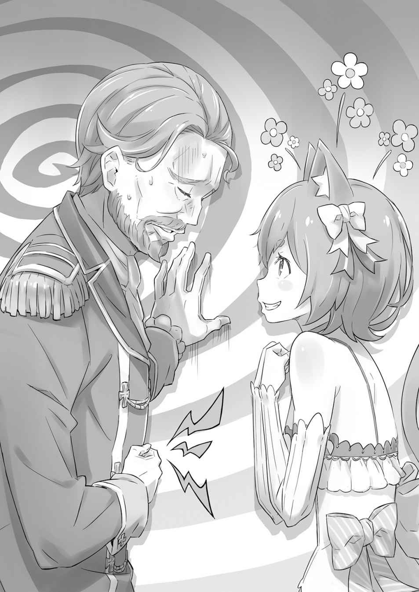
弱々しい顔つきで、胃の上あたりを撫でてみせるメッカート。立場の重責と気に病みやすい性格のおかげで、胃痛はメッカートとは親友のような付き合いだ。
「治癒魔法、かけましょうか？ ちょっとは楽になると思いますよ？」
「そうだね。話のついでにお願いしようか。ちょっと私の部屋にいいかい？」
「やだ、フェリちゃんを部屋に連れ込んで何する気にゃの......？」
「何もしないよ!?」
そんないつものやり取りをしながら、フェリスはメッカートの私室へ招かれる。執務用の机に、応接用のローテーブルと革張りのソファがあるだけの簡素な一室だ。
フェリスとメッカートがソファに対面で座ると、見計らったように家令がお茶を運び込んだ。湯気の立つカップを配膳し、厳かに一礼する家令が立ち去ると、
「......もうすぐ、クルシュの十七歳の誕生日だね」
扉が閉まり、カップに口をつけて舌を湿らせたメッカートがそう切り出した。
クルシュの誕生日、もちろんフェリスも忘れてなどいない。二週間後に迫ったその記念すべき一日は、フェリスが最も世界に感謝する一日といっても過言ではないのだ。
「星に空に大地に......やっぱりクルシュ様に感謝します。生まれてくれてありがとうと」
「おーい、フェリックス、話を進めても構わないかな？ その誕生日なんだが、君からあの子に話してほしいことがあってね。その、言いづらいんだが」
トリップ状態のフェリスを呼び戻し、メッカートが気まずそうに口ごもる。その煮え切らない態度で、フェリスはメッカートの頼み事の内容を大体察した。
なにせ、半ば毎年のように言い聞かせられている内容なのだから。
「......クルシュ様に、ドレスを着ていただきたいんですか？」
「そう、そうだよ、フェリックス。あの子の誕生日だ。今年はいつもより盛大なものにしたいと思っている。だから、あの子に相応しい格好を......」
「お話でしたら、ご本人にされたらいいじゃありませんか。私を通さなくても」
「──あの子は、君が首を縦に振らないなら絶対に頷いたりしないだろう？」
メッカートの低い問いかけに、フェリスは空気が変わったことを獣の耳で感じる。亜人の先祖返り、亜麻色の猫耳は環境や空気の変化に敏感だ。
「君とクルシュの約束は知っている。その上でこうして話すのも、もう何度目だろうね」
「どっちも引くことを知らないって意味じゃ、とっても親子らしいと思います」
「そうだね、あの子の頑固は私譲りなのかもしれない。......ただ、いつまでも平行線ではいられないことでもあるんだ。だから、妥協点を探したい」
「妥協点、ですか？」
妥協、とは実に聞き捨てならない単語だ。およそ、クルシュに似合わない単語の中でも最上位に位置する単語だろう。
「公的な場面、行事だけで構わない。本音を言えば、常日頃から公爵令嬢らしい装いで過ごしてくれることが望ましいけれど、その要求は頑として撥ね除けられてきたからね。だから今回の提案で、妥協点としてもらいたいんだよ」
「────」
「クルシュがああして剣を振り、男装を続けるのは君との約束が理由だ。だから、それを妥協させようとするなら、君を通すのが筋だろう。聞き入れてもらえないかい？」
「メッカート様のおっしゃりたいことはわかります。でも、私は......」
「──いいや、わかっていないよ。フェリックス」
強い語調で、フェリスの言葉がメッカートに遮られる。思わずフェリスが息を詰めると、メッカートはこれまで見たことがないほど険しく、寂しい眼差しで、
「クルシュは、私のたった一人の子どもだ。私にはもったいないぐらい、よく出来た子だと思っている。お世辞にも、私は頼り甲斐のある父親ではないからね。父親が情けない分だけ、あの子は立派に育ってくれた。......私だって、あの子が望むように、あるがままに健やかに過ごしてくれることを祈っている」
我が子への想いを舌に乗せ、メッカートは目を伏せた。
「だけどね、私は父親であると同時に公爵家の当主だ。そしてあの子も、私の娘であると同時に公爵家の令嬢なんだ。この屋敷で暮らし、領民に生活を支えられているならば、果たさなくてはならない義務がある。そしてその義務が果たされる場では、立場に見合った振る舞いと装いが求められる。なあ、フェリックス。私は間違っているかい？」
「......いいえ」
「──そんなことはない。間違っているよ。娘に、望まぬことを強いようとしている。それでもね、間違っていて正しいことも正しく間違っていることもある。私やあの子が生きていかなくてはならないのは、そういう難しい場所なんだ」
諭すようなメッカートの言葉を聞いて、フェリスは自分が恥ずかしくなる。
これまで自分は浅はかにも、メッカートの訴えを単なる分からず屋だと考えてきた。その裏で真剣に、娘との関係に悩む父親の苦悩があったことなど気付こうともせず。
それでもなお、権威で上から押し付けるのではなく、言い聞かせるように話してくれるメッカートの温情に救われていることが、息苦しかった。
「誕生会にはフーリエ殿下もいらっしゃる。殿下も、クルシュのドレスをきっと楽しみにしてくださっているだろうからね」
「......あの方は、そうでしょうね」
「そうなんだよ。だから殿下のためにも、クルシュに話をしてみてくれないかな？」
話の風向きが、ある人物の名前が出たことで和らいだ。それもメッカートの気遣いだろう。冷めかけの紅茶に口をつけ、フェリスは自分の不甲斐なさに目をつむった。
思い出されるのはかつての、まだ幼さを言い訳にできた頃に交わした約束。
自然とフェリスの手は、そのときにクルシュから渡された白いリボンに触れていた。
「あの約束が、ずっとずっと正しいことだなんて私も思ってないんです」
「......うん、そうだろうね。君もあの子も、利口な子だから」
「でも、あの約束の通りにしてくださることは嬉しいことで......本当に、生きてきて一番嬉しいことだったかもしれないから、甘えすぎてしまいました」
髪を飾るリボンに触れたまま、そうこぼすフェリスにメッカートが静かに頷く。
その言葉が、先のメッカートの頼み事に対するフェリスなりの答えだった。
４
メッカートとの茶会兼密談を終えて、フェリスは悩ましく眉を寄せていた。
ぐうの音も出ないほど言い負かされたのだ。約束を反故にするつもりはない。だが、
「いったい今さら、どの面下げて切り出せば......」
どのタイミングで話題にすればいいのか、不自然でない機を見計らうのが難しい。
特に今日は最悪だ。クルシュにしてみれば、一ヶ月禁止されていた剣と乗竜が許されたばかり。こんな日に「ドレスを着てください！」なんてとても言い出せない。
「でもでも、誕生会はもう二週間後に迫ってるし、先延ばししたらもっとまずい......」
直前に言い出せばいい、などというものでもない。公爵家令嬢の誕生会だ。準備期間はあればあるほどいい。むしろ、二週間前の今でもちょっと足りないぐらいだ。
おそらく、メッカートもフェリスに話すのを躊躇っていたのだろう。
「ああ、もう！ ホントににゃんてお話をしたら......」
「どうした、フェリス。屋敷の廊下でそう苦悩していると、他のものが不安になるぞ」
「うひゃぁぁぁん!?」
頭を抱えて廊下で踊っていると、ちょうど件のクルシュがひょいと顔を出した。悲鳴を上げて飛び上がり、壁に張り付くフェリスにクルシュが腕を組む。
「今朝もそうだが、やはり疲れているのか？ 辛いようなら休みを取らせても......」
「い、いいえ！ それは全然、大丈夫です！ 元気、元気です！ クルシュ様万歳！」
「──？ ふふ、おかしな奴だ」
両手をバンザイと上げるフェリスに、クルシュが薄く微笑んでみせる。誤魔化し切れていない誤魔化しと、まだ整理できていない慌ただしい感情。そんなフェリスに、
「そういえば、父上と話していたらしいな？ 何か言われたのか？」
「あー、ええっと、それがー、にゃんていうかぁ」
図ったようなタイミングで顔を出した上に、狙ったような話題を持ち出されてフェリスの頬が引きつる。まだ心の準備も何もできていないというのに。
──ただ、同時にこうも思う。
これほど機が重なるのであれば、それはここで伝えろという天意なのではないかと。
「あ、あのぉ、ちょっとフェリちゃん、クルシュ様にお話ししたいことが......」
「ん、やはりそうか。フェリスの風は読み難いが、今はそうだろうと思っていた。私とお前の間で遠慮などいらないから、何でも話すといい」
「クルシュ様、愛してます」
「私もだ」
あんまり嬉しくてつい告白してしまったが、真顔で返事されてすぐに冷静になる。
今しがた、メッカートの優しさに甘えていたことを自覚したばかりではないか。ここでクルシュの優しさに甘えていては、それはあまりにも成長がない。
「クルシュ様、愛してます」
「──？ 私もだ」
つい繰り返してしまったが、おかげで落ち着いた上に気持ちは晴れやかだ。
今なら、ひどく気が重い話題もどうにか絞り出せそうな気がする。
「あのですね、これはあくまでメッカート様のご意見で、フェリちゃんが賛同してると思われたら嫌にゃんですけど、それをわかってもらった上で聞いていただきたくて......」
「迂遠だな。わかった。それで？」
「はい、その、クルシュ様の誕生会にゃんですけど──」
十分に前置きした上で本題に入ろうとする、その瞬間だ。
「──クルシュはおるか！ 余が参ったぞー！ クルシュー！ 顔を見せよ！」
「──!?」
唐突に屋敷に響き渡った大声に、フェリスは肩を跳ねさせて驚く。フェリスの正面で上を向き、今の声に耳を澄ませていたクルシュは首を傾げると、
「今の声は......まさかとは思うが、フーリエ殿下か？」
「ま、まさか、いくらあの方でもこんな狙ったようなタイミングでは......」
「クルシュー！ おらんのかー！ 余が参ったのであるぞ！ 早くこい！ 寂しい！」
「いえ、間違いなく殿下でいらっしゃいますね」
最初の驚きが落ち着いて、続いて聞こえてきた内容で声の主が誰だかわかった。
フェリスはクルシュと顔を見合わせると、早足に屋敷の玄関に向かう。と、玄関には家令含めて使用人が整列しており、中央に陣取る人物がこちらに気付いた。
「おお！ クルシュにフェリス！ 息災であったか？ 余は元気であったぞ」
そう言って快活に悪気なく笑うのは、歳の割に純朴すぎる瞳をした青年だった。
長く伸ばした金髪、穢れのない赤い瞳。かすかに口元から覗く八重歯が、その青年の憎めない人柄をほんのり印象付けてくれる。
豪奢な毛皮のコートを翻し、今日も今日とて元気いっぱいなフーリエ・ルグニカだ。
王国第四王子にしては気安すぎる訪問だが、クルシュとフェリスは慣れたことのように驚きがない。クルシュは仁王立ちするフーリエに恭しく腰を折ると、
「フーリエ殿下、お目にかかれて光栄です。ですが、本日は急にどうされましたか？ 父からは何も聞かされておりませんが......」
「何を言っている！ 余を招いたのは他ならぬそなたらであろうに。クルシュの誕生会なのだろう？ ちゃんと招待状も持参しておるぞ！ 見よ！」
丁寧に応対するクルシュに、鼻息荒く詰め寄るフーリエが手紙を突き出した。それを受け取り、内容に目を通すクルシュはゆっくりと頷いて、
「確かに当家からの招待状ですが......殿下、肝心の日付が違います。足を運んでくださったことは嬉しいのですが、私の誕生日は二週間後。勇み足です」
「なんだと!? ということは......そなたの誕生日を誰よりも先に祝ったのは余ということだな！ これはよい！ いつもはフェリスに先を越されてばかりであるからな！」
「────」
「よくぞ生まれた、クルシュ！ 余は嬉しいぞ！ めでたい日だ！」
カラッと笑って、フーリエは自分のミスなど知らん顔でクルシュを祝ってみせる。その堂々とした態度にクルシュは声を失い、すぐに柔らかく微笑んだ。
「はい、ありがとうございます、殿下。ご祝辞、心より嬉しく思います」
「そうであろう、そうであろう。しかし、すると誕生会も二週間後か？ ううむ、しまったな。余はそれまでどうしたものであろう」
後先を考えない行動力と、後先を考えない先走りと、後先を考えないで喋る脳天気と、後先を考えない態度を許させる愛嬌がフーリエにはある。
どうしたものか、と首をひねるフーリエにフェリスも思わず頬がゆるんだ。本当にこの王子様は、出会った当初から全然変わっていないのだから。
「む？ どうした、フェリス。にやにやしおって、何か面白いことでもあったか？」
「はい。もう、フーリエ殿下がおかしくておかしくて......」
「なんと余か！ さすがは余......意図せず臣民を笑顔にさせるなど、並大抵の器ではない......クルシュもそう思わぬか!?」
「殿下の器の大きさには感服するばかりです。フェリス、あとで仕置きだ」
「いやーん」
不敬罪に問われてもおかしくない発言だけに、さすがにクルシュに咎められる。だが、そんな発言が許されるだけの信頼が、この三人の間には確かに結ばれていた。
大事なものの少ない自分にとって、確かに大事だと思える絆の一つ。
大事なのはクルシュとメッカートと、フーリエと。それにカルステン公爵家に仕える使用人たち。あとは術師としての仕事で出会った患者や同僚、なんだ意外と多い。
何も与えられずに実家に閉じ込められていたときと比べて、ずいぶん幸せ者だ。
「......フェリス、余が美形なのはわかるがあまり見つめるな。そなたの性別がわかっているにも拘らず、道を踏み外しそうになるではないか」
「一度はフィアンセ役まで務めましたのに、殿下ってばつれにゃいんですからぁ」
「あれはそもそも......！ いや、言うまい！ 余も男児であるからな！ 言い訳はするまいよ！ なあ、クルシュ、余は男らしいな！」
「はい。とはいえ、いまだ剣で一度も私には勝てていらっしゃいませんが」
「クルシュ様、クルシュ様。殿下が膝ついちゃいましたから、そのへんで」
絨毯の上に崩れ落ちるフーリエに、クルシュが悪気のない顔で首を傾げる。
気安い関係だと特に、事実をありのまま話してしまうのはクルシュの癖の一つだ。辛辣な内容だけでなく、親愛の表現もなので悪い癖とは言い切れないのだが。
ともあれ、そうして凹んだところから立ち直るのが早いのもフーリエの取り柄だ。
「──んなぁらば！ 木剣を持つがいいぞ、クルシュ！ 久しく間は空いたが、今日こそそなたの剣術に土をつけ、余の男気とそなたが女であることを教えてやる！」
勇ましい宣告に、クルシュはわかっていたように「はい」と応じる。
クルシュとフーリエの木剣での立ち合い──これは実に六年前、フェリスが女装を始めたのと同じぐらいの時期から続いている、一種の慣例のようなものだ。
何かと理由を見つけてはクルシュに会いにやってくるフーリエ。その恋心はわかりやすいほどわかりやすいが、それに気付かないのがクルシュである。フーリエも恋愛となると途端に奥手になるため、二人の仲は親しい友人から何も進んでいない。
その関係をわかりやすく変化させる手段が、フーリエにとってこの立ち合いだった。
「余が勝てば、そなたには婦女子の装いをさせる。わかりやすく増長して男装などしおって......それも似合っているが、余はそなたのスカートが見たいぞ！」
「フェリスでご満足ください。フェリスの白い足が、私の足も同然です」
「どうぞ、自慢の足です。ちらちら」
「ええい！ 余を惑わすな！」
わずかにスカートを持ち上げてみせると、フーリエが頬を赤くして地団太を踏む。それから彼はクルシュに指を突きつけ、返却された招待状を掲げると、
「そなたの誕生会も近い！ 言っておくが、昨年のように主役が軍装など余は許さんぞ！ 今年こそはそなたにドレスを着せる！ それも、余が選んだドレスをな！」
「あ......」
めげないフーリエの発言は、まさに意図せずフェリスの願いを酌んだものだった。
そのことに驚き、息が詰まる。同時に湧き上がる、フーリエへの柔い感情の渦。
──本当に、この御方は。
「クルシュ様以外で唯一、フェリちゃんの一番弱いところを突くんですから......」
「────」
頬が熱くなり、親愛と羨望が入り混じって吐息に熱がこもった。
そんなフェリスのささやきを、隣り合っていたクルシュだけが聞きつけたように目を向けてくる。ただ、フェリスは視線に気付かず、クルシュも言葉を放つより前に、
「よし！ では中庭へ向かう！ 皆のもの、用意せよ！ 余は今日、男になる！」
頭の軽そうなフーリエの、どこから湧くのかわからない自信満々な声が上がり、慌ててその背に続くように駆け出すのを急がなくてはならなかった。
５
六年前──あの日のことは、今でも鮮明に思い出せる。
クルシュとフーリエの立ち合いの始まりで、フェリックスがフェリスになった日。
『私の生き方に、殿下が口出しされるのはさすがに筋違いというものですよ』
『ぐぬぬ......だが、貴族としても剣士としても半端にならぬよう、女を捨てるなどと......いや！ やはり許せぬ！ そのようなこと、余は許さぬぞ！』
『でしたら、どうされるとおっしゃるのですか？』
『剣だ！ そなたの志の高さ、剣にて証明するがいい。余がその考えを正そうぞ！』
『剣で、殿下と私が......ですか？』
『そうだ。仮にそなたが勝つようであれば、選んだ道を進むなりなんなりするがいい。だが余が勝ったならば考え直すのだ。余が、そなたを女にしてやろうぞ！』
威勢のいいフーリエと、決意を固めたクルシュの間に結ばれた約束事。
そして、二人の木剣の立ち合いが始まって──。
「クルシュは本当に余に容赦がないな！ 王子であるぞ！ 偉いのであるぞ!?」
「はいはい、殿下、泣かにゃい泣かにゃい。ほーら、痛いのとんでけー」
六年前のあのときも、こうしてフーリエを治療していたなとぼんやり思い出された。
土塗れの半泣きで、自分の腰に縋り付くフーリエにフェリスが治癒魔法をかける。癒しの波動が木剣に打たれた傷を治癒し、フーリエはゆっくりと立ち上がる。
「ふふふ、見たか！ 今のはあえて情けなく振る舞うことで相手の同情を買い、フェリスの治療する時間を稼ぐという聡明な余の恐るべき算段だったのだ......！」
「殿下、殿下、膝が笑ってます」
不敵な笑みを浮かべたフーリエだが、腰が引けて膝が震えている。そのフーリエと相対するクルシュの、洗練されたその立ち姿の素晴らしさよ。
上着を脱ぎ、木剣を構える細身の肢体。真っ直ぐに立つクルシュの在り方は、彼女そのものが一振りの剣ではないかと思わせるほど清らかに冴え渡っている。
「それに比べて殿下ときたら......」
「聞こえているぞ、フェリス！ 余への賛美なら戦いが終わってからにするがいい！」
「フェリちゃん、フーリエ殿下の前向きなところ大好きです」
フェリスの声援を背に受けて、フーリエがクルシュへの間合いを一気呵成に詰める。この瞬間ばかりはフーリエも、相手が恋しい少女であることを忘れた踏み込みだ。
だが、一撃はあっさりと捌かれ、勢い余った体を木剣が打って再び吹っ飛ぶ。ゴロゴロと草の上を転がり、体を起こすフーリエは遅れてきた苦しみに何度も咳き込んだ。
圧倒的な実力差──しかし、これはフーリエが悪いわけではない。彼の剣技はフェリスの贔屓目もあるが、同年代の坊ちゃん貴族とは比較にならないほど練達している。
クルシュに勝とうという気概、長年の真剣な立ち合い。それらがフーリエの実力を、周囲にちやほやされる馬鹿王子から、一人の剣を振る男に成長させた。
それでもなお届かないのは、クルシュの剣才と努力が並大抵でないからだ。
「まだ続けられますか？ これ以上は、父の魂が抜けかねないのですが」
「無論、続ける！ 余を舐めるな、クルシュ！ そしてメッカートも、このぐらいのことで魂が抜けるほど腑抜けではない！ 余の首が刎ねられようと毅然としていよう！」
さすがにそれは言いすぎだ。
ちなみに屋敷の中庭で繰り広げられている決闘だが、手の空いた使用人が周囲で観戦しており、その中には青い顔をしてふらふらするメッカートの姿もある。毎回毎回、頬がこけるほど心配するぐらいなら見にこなければいいものを。
「ああ、なんでこんないつもより真剣に......でも、殿下が勝ってくだされば......」
胃の痛みに顔をしかめながら、メッカートは親心と公爵の心情で板挟みになっている。そしてその苦悩は、今のフェリスには痛いほどわかるのだった。
──自分は今、クルシュに勝ってほしいのか負けてほしいのか、どちらなのか。
「うおおお！ クルシュ、ドレスを着ろぉぉぉ！」
雄叫び、というにはやや語弊のある気合いを叫び、突っ込むフーリエがまたやられる。べしゃりと潰されたフーリエが立ち上がるのに、クルシュはその瞳を細めた。
「今日の殿下は普段よりも諦めが悪い。いったい、何がそこまでさせるのですか？」
「そなたに決まっているであろう！ そなたが余を、こうまでさせる......いや、元を正せばそれは余なのだ！ 余が、そなたにそうさせているから、余がせねばならぬ！」
「......殿下？」
端正な顔を土で汚し、汗を流しながらフーリエは頭を振った。
「忘れもせぬ、五年前、愚かな余は身の程知らずであった。自分の力量も弁えず、身勝手な約束にそなたを縛り付けた。剣で余がそなたを負かせないうちは、そなたは婦女子の格好をせずに男装を貫くと──それが、どれだけ残酷な行いであったか」
苦しげなフーリエの告解だが、忘れもせぬ五年前が間違っている。六年前だ。
だがそれは、フェリスが鮮明に思い描ける、あの約束の日に繋がる告白で──。
「一昨年の、そなたの十五歳の誕生日を覚えておるか？ そなたは美しく成長した。着飾ったそなたはきっと、あの夜で最も美しい花となれたのだ。だが、そなたは余との約束を守った。乙女が軍装に身を包み、月下を歩いた光景を余は決して忘れぬ。男装のそなたは麗しい......しかし、それは剣を見て思う感慨だ。断じて！ 花と並び立つ婦女子に抱いていい感慨ではない！」
「────」
「余はあのとき、余の浅慮が招いた結果を自覚した。年頃の娘の着飾る喜びを奪い、華やいだ時間を封じたのは余に他ならぬ！ その責任は余がとらねばならん！」
長い付き合いの中、初めて見るようなフーリエの横顔。その激情に燃え盛る紅の瞳を見て、フェリスは自分の胸に込み上げるもので喉がつかえた。
見ていた他のものも、メッカートも皆が言葉を失っている。これまで決して打ち明けられなかった、フーリエが抱え込んでいたこの決闘への強い想いを知って。
勘違いだ。思い違いだ。フーリエのその決意は、見当違いも甚だしい。
クルシュとフーリエの約束は事実だ。六年前、生涯を男装で過ごすと断言したクルシュにフーリエは、『余がそなたを剣で負かすまで、それを許す』と発言した。メッカートがクルシュに強く出られなかったのも、王子との約束事を守るという名分があればこそ。
だがフーリエはそれをずっと悔やんでいたのだ。いつの間にか彼の中で、クルシュの男装はクルシュ自身が望んでいないのに、自分と約束したから嫌々している男装であるという認識にすり替わっている。そして馬鹿正直に、その責任を感じていた。
「私、馬鹿だ......」
剣を構えるフーリエの背中を見ていて、フェリスは思わず自分の口を押さえた。
フーリエの剣の上達を、繰り返す決闘と執念の結果だと侮っていた。それだけのはずがない。自分の発言を悔やんだフーリエはずっと、剣を振り続けていたのだ。
──自分が恋した少女を、約束に縛り付けた少女を、女性にするためにずっと。
「クルシュ！ 花を愛でよ！ 詩をたしなめ！ 化粧をし、ドレスをまとい、宝石で着飾って、可憐に微笑むがいい！ 我慢などすることはない！ 余が許す！ 余の愚かさをここで贖って、余がそなたを真の女にしてやるのだ!!」
「で、殿下......っ！」
見当違いを貫いたまま、フーリエが木剣を振りかざしてクルシュに迫る。固い音が庭園に響き、衝撃に下がるクルシュの表情は明らかに動揺していた。
「殿下！」「フーリエ様！」「クルシュ様を、どうか殿下！」
声が上がる。思わず飛び出した声援は、それを見ていた使用人たちのものだ。
目元を赤くし、声を震わせ、幼い頃からクルシュを知るものたちがフーリエの決意に賛同を投げかけている。フーリエの踏み込みが強くなり、クルシュの動揺が深まる。
弧を描き、上へ下へと打ち付けられる木剣にクルシュは防戦一方だ。これだけ一方的にクルシュが打ち込まれることなどない。それほど今のフーリエの剣閃は苛烈で、相対するクルシュの心に訴えかけるものがあるのだ。
たとえそれが勘違いから始まった決心でも、これだけ多くの胸を打つのだ。
「──殿下に委ねよう」
ふと、フェリスの隣へ歩み寄ったメッカートがそう呟いた。
顔を上げるフェリスに、メッカートは頷きかける。それが何を意味するものなのかすぐにわかった。フェリスは祈るように胸の前で手を組んで、決闘の結果を見守る。
「ドレス！ 化粧！ あと宝石！ 花と料理！」
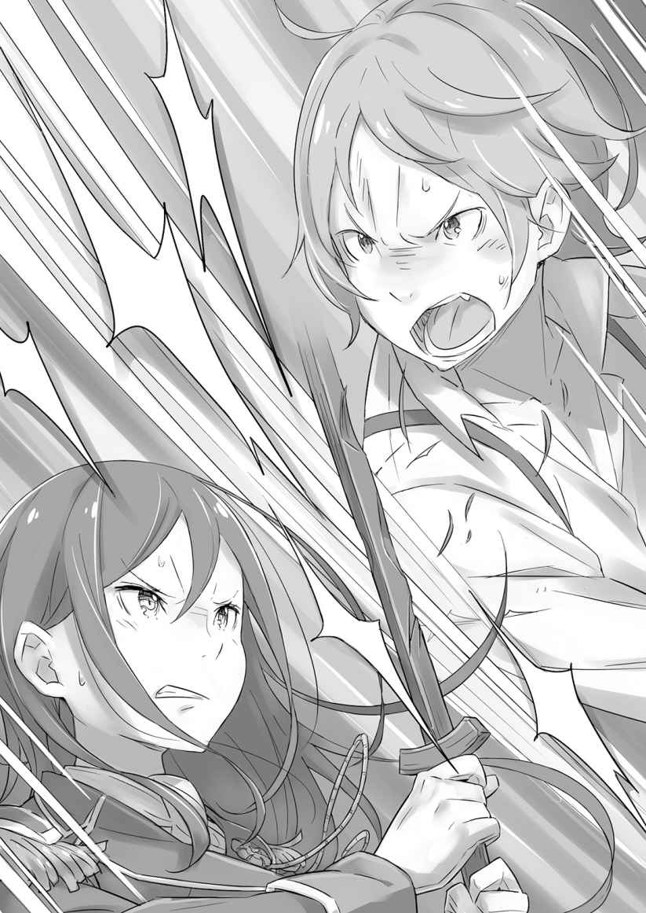
「──っ」
「クルシュ！ 余の足下に、降れぇぇぇ!!」
打撃の威力に木剣が軋み、ひび割れる刀身から木片が飛び散る。どちらが手にする木剣も限界が近い。だがきっと、限界は敗者の方に先に訪れる──。
一撃ごとに限界が近付き、後ずさるクルシュの前でフーリエは荒々しく叫ぶ。端正な面を赤くし、雄々しく挑む姿にクルシュは何を見たのだろうか。
紅の瞳に映る、後ずさる女の自分だったのかもしれない。
「──ぁ」
壁際まで下がり、追い詰められたクルシュの琥珀色の瞳が最後にフェリスを見た。
互いの視線が絡み合い、フェリスはクルシュの目が何かを求めているのを感じる。だが何を求めているのか、その決定的なものがわからないまま、
「クルシュ、さま......」
フェリスの丸い瞳から、大粒の涙が頬を伝った。
次の瞬間、高い音を立てて木剣がへし折れ、弾かれる刀身が土の上に落ちる。そして健在な方の木剣が、敗者の胸に突きつけられた。
「......これだけやっても、余は届かぬのか」
折れた木剣を握りしめ、苦しげな息を吐きながらフーリエが絞り出す。下を向き、肩の震える彼はひょっとしたら泣いているのかもしれない。
吐息。落胆であっても失望ではない。だが、叶わなかった事実に皆の肩が落ちる。
だが、それは──、
「いいえ、殿下──私の負けです」
ゆるゆると首を振るクルシュ。その手の中で、彼女の木剣もまた半ばで折れる。刀身をなくした木剣の柄、それをクルシュは地へと投げ出し、
「まだ剣を握る殿下と、剣を投げた私では勝敗は明らか......いえ、それ以前に、殿下の裂帛の気合いを受けて、私の心は屈していました。──完敗です」
「────」
押し黙るフーリエの前で、クルシュはその場に膝を着いた。土に汚れることも構わず、地に手を置いて、剣を差し出すような仕草は最敬礼──忠節の証。
「かつての約束、確かに果たされました。このクルシュ・カルステン、フーリエ・ルグニカ殿下と剣術を競い、これに敗れ......婦女子の装いをまとう所存です」
「ん......む、そうか。......そう、か」
厳かに告げられたクルシュの言葉に、フーリエは途切れ途切れに頷いて返答。それからゆっくりとその長身が後ろに傾き、音を立てて大の字に地面に倒れ込んだ。
「殿下!? これはいけない、フェリックス！ 殿下を！」
目を剥くメッカートに言われる前に、フェリスは大急ぎでフーリエの下に。寝転ぶ青年の頭の下に自分の膝を入れて、その体重を支えながら治癒魔法を発動させる。
「殿下、殿下、お気を確かに。殿下！」
「ふふ......見たか、フェリス......余の、大しょーり......」
治癒魔法で傷が癒えても、失った体力が戻ってくるわけではない。まさしく全力を尽くしたフーリエは、見慣れた能天気な笑みを浮かべるとそのまま眠りこけてしまう。安らかな寝息が聞こえてきて、フェリスは呆気に取られてしまった。
そして、
「フェリス」
「は、はひ、クルシュ様。あのその、えっと、フェリちゃんはなんて言ったら......」
「──身勝手で、すまない」
フーリエの治療を見守りながら、クルシュが薄く微笑んでフェリスにそう言った。
その言葉が胸に染み入った途端──ボロボロと、フェリスの頬を涙が伝い落ちる。泣きじゃくり、両目をこすりながら、しゃくり上げる声でフェリスは、
「わ、わたしの、方こそ......っ。ずるくて......！ いつも、いっつも......クルシュ様や、フーリエ殿下に、救われてばっかりで......っ」
「だとしたら、それはお互い様だ。私の方こそ、お前の存在にいつも救われている。殿下に救われていたことも、今しがた自覚したばかりの不出来な私だがな」
「不出来だなんて、そんなこと......っ！ く、クルシュ様は、最高です......っ！」
「ならばなおさら、お前や殿下の期待に背かぬ私であらねばならないな」
うまく言葉がまとまらないまま、フェリスはめそめそ泣き続ける。クルシュの手がそんなフェリスの頭を優しく撫でて、立ち上がる彼女がメッカートの下へ向かう。
狼狽する父親に、クルシュはなんと声をかけたのだろうか。
それは膝の上のフーリエのいびきと、自分の泣き声でフェリスにはわからなかった。
６
「それにしても、最大の功労者である余が誕生会の間近になるまで、そのクルシュのドレス姿を見れぬというのはおかしいとは思わぬか？」
「まあまあ、クルシュ様にも色々あるんですよ。心の準備だったりとか、お体の準備だったりとか......あと、クルシュ様に相応しいドレス選びがそもそも難航したりとか」
「フェリスはクルシュのためならば手を抜かぬからな！ 心強いぞ！」
黒い笑みを浮かべるフェリスの真向かいで、からからと快活にフーリエが笑う。
場所はカルステン公爵邸にあるフェリスの私室だ。そこでフェリスは当たり前のように訪問した王子を出迎え、手ずから入れたお茶を振る舞って歓談している。
普通に考えれば恐れ多い状況だが、フェリスにもフーリエにも遠慮は見られない。
付き合いの長い友人──さすがにそれは、思い上がった考えだと思っているが。
「あの決闘から二週間、実にもどかしい時間であった。そもそも、目覚めたら帰りの竜車の中というのはどうなのだ？ クルシュと言葉も交わさぬうちに帰路にあるなど、あれほどの仕打ちは今までにも一度もなかったぞ」
「疲れ果てた殿下がお目覚めにならにゃいからですよ。それにそれに、お誕生日までの十日以上をお屋敷では過ごせにゃいでしょう？ いくら閑職のフーリエ殿下でも、この時期は色々とお役目がおありにゃんでしょうから」
「余は引く手数多であったからな！ ああ、ただ心配なのだ。余がクルシュを一刀の下に切り伏せ、泣き崩れるあれを慰めたことは覚えているのだが......」
「......とりあえず、最後まで聞きますネ」
事実がだいぶフーリエ寄りに脚色されているが、ひとまず口を挟まない。おそらく、泣き崩れるクルシュのあたりはフェリスの大泣きが関係しているだろうから。
「困憊し、達成感とともに倒れた余はその後を知らぬ。クルシュはその後、どうしていただろうか。その、余のことは何か言っていたりしたか？」
「負けた悔しさに枕を濡らして、いつか殿下の寝首を掻いてやると......」
「ははは、戯れ言を。嘘を申すな、嘘を。あのクルシュが寝首を掻くなどと言うものか。真っ向から挑むに決まっておる。わかりやすい嘘を......嘘であろうな？ であるな？」
「信じるなら最後まで自信満々に信じてくださいよぅ。まあ、その通りですけど」
このあたり、クルシュを見つめ続けてきた相手だけに騙されるはずもない。
フェリスは吐息をこぼし、ちらちらと視線がうるさいフーリエにウィンクする。
「ご安心ください。クルシュ様は負けを引きずられる方ではありませんし、執念で壁を乗り越えた殿下を見直されたはずです。殿下の話は、あれから一度もされませんが」
「やっぱ怒っておるのかな!? どう思う!? なあ、どう思うのだ、フェリス！」
「やん、引っ張らないで、服が伸びちゃいますぅ。二人きりだからってー、強引っ」
身を乗り出して肩を揺すってくるフーリエを押しのけ、自分の肩を抱いて瞳を潤ませるフェリス。動揺したフーリエが下がり、変な沈黙が部屋に落ちる。と、
「呼ばれてきてみれば、フェリス、あまり殿下をからかうな」
「おおおおおお!?」
ドアを開け、顔を覗かせたクルシュにフーリエが面白い声を上げてひっくり返る。
その反応を小気味よく思いながら、フェリスはクルシュに手を振った。
「時間通りですね、クルシュ様。お待ちしてましたよー」
「声をかけずに部屋に入れと言われたが、これが目的だったか。殿下、フェリスが失礼をいたしました。ですが、私の顔を見て驚かれるのは心外です」
「違うぞ！ 断じて余はそなたの顔に驚いたわけではない！ そなたの顔は今日も整っておる！ 綺麗だ！ 自信を持つがよい！ 余が保証する！」
「ありがとうございます、殿下。ですが、さすがにこそばゆくありますね」
赤い顔のフーリエと、苦笑するクルシュ。二週間前の出来事と、その後の別れが別れだったが、再会はそれを気負わず自然な流れに持ち込めたはずだ。
「これもフェリちゃんの采配のおかげ......自分の軍師適性が怖い......っ」
「何をぶつぶつと言っておるのだ、フェリス。それにだ！ クルシュ、お前もだ！」
フーリエが立ち上がり、扉の前に立つクルシュに指を突きつける。
「なぜ、今日もこれまでのように男装しておる！ スカートはどうした！ ドレスはどこにある！ 髪を宝石で飾って、花束に囲まれる約束はどうなった！」
「殿下、殿下、約束が一人歩きしてますってば」
「申し訳ありません、殿下。先日の一件、確かに心に刻まれております。ですが、私も長く男装して過ごしてきた身。今しばらくはこうして、心の準備をする時間を与えていただきたく思います。それに──明日の誕生会では、必ず」
「む......それは、信じてよいのだな？」
「私が殿下との約束を違えるものかどうか、殿下が信じてくださる限り」
そうまでクルシュに断言されてしまえば、フーリエも引き下がる以外にない。
ソファに座り直すフーリエの対面、フェリスの隣に自然とクルシュが腰を下ろした。
「それにしても、殿下も気合いが入ってますよね。二週間前に駆け付けたのもそうでしたけど、今日も前日入りするなんて」
「王城からでは寝過ごすのが怖くてなかなか寝入れんからな！ 先に屋敷についておればどれだけ寝ても必ず間に合う。どうだ、この余の恐るべき奸智！」
「待ち合わせ場所に前日から泊まり込みみたいで、ちょっと重たいですネ」
フーリエの発言にフェリスが軽口を叩き、それをクルシュが苦笑してたしなめる。それが三人の関係で、転機を迎えても揺らがなかった絆だ。
「時に、明日の誕生会でフェリスはどうする？ ドレスであるのか？」
「やぁだ、殿下ったら。クルシュ様だけじゃなく、フェリちゃんにまで興味津々にゃんですかぁ？ ダメですよぅ。それも明日のお・た・の・し・みっ」
「ドレス、ドレスか......なあ、フェリス。父上のはしゃぎようもかなりのものだったが、お前が選んでくれたドレスもいささか私には不釣り合いな気が......」
「クルシュ様には最高級のドレスを着ていただいて、最上級の装飾品を付けていただいて、最大級のおもてなしを受けていただく必要があるんです！ それはもう！ 盛大に！」
「そうであるぞ！ クルシュ！ 余も明日、楽しみにしておるからな！」
鼻息の荒いフェリスと、囃し立てるフーリエの二人にクルシュが押し切られる。
どこか儚げなクルシュの横顔、彼女の琥珀色の瞳が窓の外へ向き、自然とつられるフェリスもまた夜空を仰いだ。
満天の星々の中に浮かぶ、白く冷たい輝きを放つ半月──クルシュの誕生日の前夜。
色々なものが動き出すことを予感させる月光は、妖しく揺らめいていた。
７
──その翌日、クルシュ・カルステンの十七回目の誕生日は晴天に恵まれた。
「んーっ！ よし、いい天気！」
カーテンを引き、窓を開け放ったフェリスは首丈の髪を風に揺らしながら笑う。
今朝はいつもより早起きで、早朝の空気は冷たく澄んでいる。昨夜はクルシュとフーリエと三人での会話が弾んで夜更かししてしまったが、今日という日の到来を心待ちにしていた期待感が疲労を持ち越させていない。朝からいつもの倍は溌剌としている。
「絶好のお誕生パーティー日和！ お天道様もいい仕事するじゃにゃーい♪」
上機嫌に言いながら、フェリスはさっさと寝衣を脱ぎ捨てて服を着替える。いつもの女性用の衣類に袖を通し、白いリボンで髪を飾って準備完了。
手早く鏡で身嗜みを確認すると、踊るような足取りで廊下に飛び出し、すでに仕事を始めている屋敷の使用人たちに合流した。
「おっはよーございまーすっ」
「おや、フェリス様、おはようございます。今朝は早いですね」
「大事な日だもんね。気合い入れなきゃ。それでもみんなの方が早いけどさ」
「私どもはこれが仕事ですので。それに心待ちにしていたのはフェリス様だけではありませんから、準備に過不足なく臨まなくては」
老年を迎えた家令が、挨拶を交わしながらそう言って微笑む。フェリスにとっても付き合いの長い人物だが、感情控えめの彼にしてはずいぶん嬉しげだ。
周囲の使用人たちも、普段以上の作業を求められているのに嫌な顔一つしていない。それだけ今日の行事の主役に、親愛と期待を抱いているということだ。
「でもでも、クルシュ様へのお気持ちだったら私だって負けられないもんね。さ、なんでも手伝うから、どんどん指示ちょーだい」
「張り切っておりますね。では、遠慮なく色々お願いしましょうか」
クルシュの傍付きであるフェリスを、雑務から遠ざけるような野暮は誰も言わない。
ジッとしていられない気持ちを酌んでもらえることに甘えながら、フェリスはその分の気遣いを仕事で返そうと心に決める。
クルシュの誕生パーティーは、今日の夕刻過ぎから始まる予定だ。
その数時間前には招待客が到着することが見込まれているため、会場の設営などの準備に懸けられる時間は実質的には午前中だけ。無論、数日前から大半の準備は進めてあるため、最終調整や備品の準備、料理の順番や持ち回りの確認などが主な内容だ。
「それにしても、クルシュ様の今夜のドレスが楽しみですね」
「ええ、ええ、まったくです。ひょっとしたら、私が生きている間にはお目にかかれないのではないかと思ったこともありましたからね」
古株の使用人と家令が笑い合うのを横目に、フェリスは申し訳ない気持ちになる。
子どもの頃に交わした、フェリスとクルシュの約束。その裏側でどれだけ多くの人たちが心を痛めていたのか、無神経な自分は考えもしてこなかった。
もちろん、彼らにフェリスを非難する意図はない。あるのは純粋に、幼い頃からお世話をしてきたクルシュの、女性らしい成長を確かめられることの喜びだ。
「本当に、みんなにもごめんね」
だから勝手に負い目を抱き、口の中だけで謝罪するのはフェリス自身の咎だった。
そんな風に咎を意識し、フェリスが発奮して猛然と働けば、他の使用人たちも遅れを取るわけにはいかない。自然と各々の仕事のパフォーマンスが向上し、予定の昼を待つまでもなく準備は滞りなく整えられた。あとは招待客の到着と、夜を待つばかり。
──何事もなければ、そうなるはずだった。
「カルステン公爵にお目通り願いたい！ 火急の報せだ！」
その声が聞こえてきたのは、ちょうどフェリスが玄関ホールに立ち寄ったときだ。
次の指示を受けようと向かった先で、使用人の一団が誰かを囲んでいるのが目に入った。何事かとフェリスが駆け寄ると、そこにいたのは息を切らす汗だくの若者だ。
どうやら必死で竜車を走らせてきた様子で、只ならぬ雰囲気が溢れ出している。傷ではなく疲労。それも、心身ともにかなりの重責を担った形での。
「用向きを、お伝え願いたい......っ」
「聞きましょう。どうされましたか？」
その場に膝を着き、若者はフェリスの顔を見上げた。思わず、その顔を見たフェリスが息を呑むほど鬼気迫る若者の形相。
そして若者は、その声に戦慄と焦燥感をにじませながら言った。
「フォートル平原に魔獣が......大兎が、出現しています！」
８
「魔獣『大兎』の出現、か......我ながら、なんとも運のない......」
一通りの報告を聞いたところで、深々とため息を吐きながらメッカートがこぼす。
場所は屋敷の執務室で、室内には十名近い人間が顔を突き合わせている。全員がメッカートの腹心の部下たちで、クルシュの誕生会のために早々に屋敷に到着していた顔ぶれである。それがそのまま、緊急対策会議の顔ぶれに早変わりしたのは皮肉な話だ。
「確かに不運......ですが、我々が集まってきたのは不幸中の幸いでしたな。魔獣被害には初動が非常に重要だ。その点、今回は最速で対応できる」
「相変わらず、良いところ探しをするのが得意な部下たちで救われるよ。......それで、被害状況などを改めて確認したいところだが、話してくれるかい？」
「は、はいっ」
公爵家の重鎮と、何よりカルステン公爵その人を前に若者の緊張は頂点に達している。それでも責任感から、順序立てて説明する彼の言葉にメッカートたちは頷いた。
魔獣『大兎』は、数百年前に魔女が生み出したとされる魔獣──その中でも特に強力な三大魔獣の一角を担い、災厄と表現される魔獣の名だ。
『白鯨』『黒蛇』『大兎』の三大魔獣は災害扱いされることもあり、その被害の規模は国家単位で討伐隊が組まれたほどのものだ。それだけ手を尽くして、いずれも滅ぼし切れていないことから、その厄介さを推し量ることが可能だろう。
今回、大兎が発見されたのはフォートル平原。カルステン公爵領の端に位置し、まだ未開拓の荒れ野ばかりが広がる土地だ。
「最初に大兎の存在に気付いたのは、平原にある森に入った密猟者の集団です。そこに群生するウブズスって動物の毛皮を狙ってた集団が、兎に奇襲されたそうで......」
「何ともまあ、因果応報なことだ。その集団は？」
「頭目を始めとして、大半の構成員が兎の餌食に。生き残ったのは竜車で留守居をしていた若造ぐらいで、そいつが這う這うの体で近くの村に飛び込んで事が発覚しました」
若者の報告に、メッカートの表情が曇る。
「近くの村に逃げ込んだ、か。......その村はどうしてる？」
「勝手な判断ですが、住民は村の竜車に押し込んで避難させました。一応、その生き残りの若造もです。村長の父の判断で、自分はそれを報告に公爵様のところへ」
「なるほど、いい判断だ。君と、お父上のことは覚えておこう。ひとまず、大兎に村が食い荒らされる程度で人的被害は防げそうだが......諸君、どう思う」
恐縮する若者に頷いて、それからメッカートは腹心たちにそう問いかけた。
それを受け、理知的な面差しの壮年が挙手する。
「この若者の村の判断が最善でしょう。避難の範囲を近隣の村まで含めて広げ、大兎に対しては静観が得策かと。噂に聞く魔獣の習性が確かなら、こちらから突いてわざわざ獲物の居場所を教えてやる必要もありませぬ」
まず、最初に非戦が提案された。が、厳つい顔の男がそれに反論する。
「いいや、それはあくまで大兎が現状に満足すれば、という楽観に過ぎん。奴らが森や村を食い散らして足らなければどうなる。群れが散ってしまえばとても対処できんぞ」
「では、どうされるおつもりで？」
「先手を打って、カルステン領からご退陣願おう。未開拓の土地も含めて、獣風情にくれてやる領地など欠片もない。それに民の不安もある。人心が魔獣に怯えている最中、我々が領地に引っ込んでいては貴族の威信に関わろうぞ」
「獣風情、倒したところで何も得られはしませんぞ」
「だが、何も得られずとも失うものはある。民の信頼と、我らの誇りだ」
武断派と非戦派で、意見が真っ向からぶつかり合う。それらの意見はどちらが間違っているという話ではない。どちらも正しい。だからこそ、決断が求められる。
「────」
黙り込むメッカートの胸中で、今は様々な考えがせめぎ合っていることだろう。それがわかっていながら、場違いだと思いながらも挙手が上がる。それは他でもない、若者を執務室へ連れて、そのまま対策会議の端で小さくなっていたフェリスだ。
「あの、メッカート様、すみません。こんなときになんですけど......」
「......ああ、フェリックス。うん、すまないね。なんだい、何が聞きたい？」
「クルシュ様の誕生パーティーの件です。もちろん、中止は致し方ないとわかっていますけど、招待客の皆様は遠からずご到着されます。どう説明しましょう？」
「そう、そうだね。......その問題もあった。まったく、本当に間が悪い」
唇を噛み、それからメッカートがハッと顔を上げる。
「そういえば、クルシュには？ まさかあの子には、この話はしていないだろうね？」
「ご安心ください。使者の方はまっすぐお部屋にお連れしましたし......今頃、クルシュ様はフーリエ殿下のお相手でお忙しいはずです。こればっかりは殿下に感謝ですね」
「それならよかった。本当に殿下には頭が上がらないよ。だからこそ、ね」
ホッと、安堵の気配が執務室に広がる。それはメッカートだけのものではなく、部屋の中にいたクルシュを知る全員が共有した安堵感だ。
貴族の誇りと義侠心でできているようなクルシュだけに、領地が魔獣の脅威にさらされているなどと知れば飛び出していきかねない。苛烈な彼女の性格を知る全員が、彼女にだけは知らせまいと立ち回るのは当然のことだった。
「──さて、時間は有限だ。いつまでも悩んでいるわけにはいかないね」
その安堵にゆるんだ口元を引き締めて、メッカートが椅子の上で姿勢を正す。公爵のその振る舞いに、全員が一斉に背筋を伸ばした。その言葉を静聴する。
「まず、フォートル平原近隣の町村に避難勧告を。当家や、他の町からも竜車を出す。住民全員の避難は当然として、できる限り私財も持ち出させるように。大兎が通り過ぎれば何も残らない。火事場泥棒など許さぬよう、徹底するんだ。指揮はバダック、君だ」
「はっ」
「それから、フォートルの森周囲に戦力を展開する。まだ手を入れていない庭を刈り尽くされては困る。ただし、目的は大兎殲滅ではなく、あくまで牽制を優先。あまり血気に逸った若者を前に出さないように頼むよ？」
「かしこまりました。指揮は、どうされますか？」
「領地に責任があって、臆病な老兵がいいだろう。まったく、この歳で嫌になるね」
そう言ってメッカートが肩をすくめると、部下たちが小さく笑みを重ねる。それから緊迫感の張り詰める室内で、最後にメッカートがフェリスを見た。
「それからフェリックス、君にも命じる。──クルシュに大兎の件が知られないよう、慎重に立ち回りながらパーティーを開催するんだ」
「誕生会、中止にされないんですか!?」
「同じ領内とはいえ、フォートル平原の被害が屋敷に届くことは考え難い。それに招待客の皆様に、ご足労を願った面子もある」
「でもでも、メッカート様不在の状況で隠し通せと言われても......」
「何も生涯の秘密にしろとは言わないよ。あくまで、今日の間だけ隠せればいい。明日にはクルシュにもばれているだろうから......仲良く怒られてくれると嬉しいね」
冗談めかしたメッカートの言葉に、フェリスはこれ以上の議論は無駄だと悟った。唇を尖らせて不満を露わにしながら、フェリスはメッカートをじと目で睨む。
「明日、一緒に怒られるって約束、守ってくださらなかったらひどいですからね」
「フェリックスにそう言われると怖いなぁ。しかし、守れない場合って......」
「たとえばほら、舐めてかかった魔獣に負けて死んじゃうかもじゃないですか」
「縁起でもないなぁ、フェリックス！」
いつもの調子で軽口を交わして、フェリスはすっかり観念した。言い出したら聞かない頑固なところは、まったく親子揃ってそっくりなのだから。
「了解しました。このフェリス、一命を賭してパーティーを成功させます。メッカート様も、ご武運をお祈りいたしております」
カーテシーで、メッカートの無事を祈って送り出す姿勢を見せる。
それに頷き、メッカートが腹心たちと今後の動きを固める中、フェリスは静かに執務室を退室して、不安げにしている使用人たちと大急ぎで合流した。
さあ、ここから大忙しで動かなくてはならない。
──なにせ、これから一世一代の大嘘つきを実行しなくてはならないのだから。
９
そして、メッカートが屋敷を発って数時間後。
ドレスで華やかに着飾ったフェリスは、全力の笑顔を会場に振りまいていた。
「ようこそおいでくださいました。ありがとうございます」
夕刻のカルステン邸に、次々と到着する高級竜車の数々。そこから降り立つのは当然、竜車の格に見合った装いと気品を漂わせる上流階級の人々だ。
公爵家令嬢の誕生会に招かれた賓客だけに、相対するだけで一般人なら魂が抜かれそうなほどの風格を持つ人物がそこかしこにいる。幸い、フェリスはそんな人種の中でも最上級の公爵家で暮らす身で、おまけに直系の王族とも交友のある立場だ。
もっとも、身近な彼女らこそが厳粛な雰囲気と無縁の人柄揃いなので、その経験が今日に役立っているかは微妙なところだった。
ともあれ、フェリスは賓客相手に必要以上に緊張も、へりくだることもしないで無難に案内役の役目を務めている。顔見知りもそうでないものも、受付に立つ青いドレス姿のフェリスを見ると足を止め、見惚れる素振りすら見られる猫の被りようだった。
「まさかあなたのような美しい方を見逃していたとは、痛恨の至りです」
「まあ、お上手。いけませんよ。お連れの女性に睨まれてしまいます」
今も、口説いてきた身なりのいい若者を軽く袖にしたところだ。フェリスにつれなくされた男性だが、去り際にウィンクの一つでも送れば波風も立たず、楽なものである。
だからせめて、このまま笑顔を浮かべている役目に徹させてくれればいいものを。
「失礼。カルステン公爵はいずこに？ 主役であるクルシュ様のお披露目の前に、ご挨拶だけさせていただきたいのですが」
「大変申し訳ありません。メッカート様はただいま、具合を悪くしていまして......じきに顔を出されると思うのですが、今しばらくは」
「なんと......それは大事な日に。わかりました。不躾なお願い、失礼しました」
同じく受付で、ドレスアップしたメイドが賓客の一人に頭を下げる。先ほどからひっきりなしに、メッカートを訪ねてくる客が後を絶たない。当然と言えば当然だ。純粋にクルシュの誕生日を祝う気持ちで、このパーティーに足を運んでいるものなど少数。むしろ家中の人間を除けば、ほとんどは公爵のご機嫌伺いや人脈造りの一環だろう。
メッカートの不在に落胆する人間が多いのは、当然のことといえる。
「まあ、それがムカつかないかって言ったらそんにゃことないけど」
「フェリス様、いけませんよ。眉間に皺が寄ってしまいます」
「あ、いけにゃいいけにゃい」
フェリスの独り言に隣のメイドの注意が飛ぶ。が、内容を咎めないのは彼女も同じ心境だからだ。慣れてはいても、純粋に家人を祝福する意を持つ側にとって快くはない。
だが、見ていろという気持ちがあるのも事実だ。今に見ているがいい。このパーティーの主役がドレスアップして登場したとき、全員が度肝を抜かれることになるのだ。
「ふふ、うふふふふ」
「フェリス様、いけませんよ。瞳が邪悪に光っています」
「あ、いけにゃいいけにゃい」
ベクトルは違えど、丸っきり同じ指摘をされてフェリスは舌を出す。
まだまだパーティーは開場したばかりで、賓客も続々とやってくる。主役であるクルシュのお披露目は、パーティーのメインイベントだ。それまで自室でこもっている指示は彼女には退屈だろうが、フェリスは内心でホッとしている。
加護の特性上、長時間クルシュを騙し続けることは難しい。クルシュの『風見の加護』は風を読む。風は自然の風に留まらず、人間の感情の風を読むことも可能だ。それを使いこなすクルシュに、重大な出来事を隠し通すのはかなり難しい。
これが日常の些細なことならば、素直なクルシュはコロッと騙されてくれるのだが。
「本当に、一筋縄じゃいかないお方......そこがクルシュ様の魅力だけど......！」
「フェリス様、いけませんよ。うっすら涎が垂れそうです」
「あ、いけにゃいいけにゃい」
もういい加減、三度も繰り返せばメイドの方も呆れ気味だ。こんな軽口で緊張を紛らすのは情けないとわかっていながら、フェリスは長丁場に備えて小細工を弄する。
さあ、気合いを入れ直して再び受付で微笑む作業に──。
「フェリス！ おおい、フェリスはおるか！」
と、そのまま一心不乱に微笑み続ける機械になろうとしていたフェリスを、遠くから誰かが探す声──誰かも何もない。こんな呼び方、一人しかしないのだから。
フェリスが声の正体に気付くのと、目の前の人波がわっと割れるのは同時だ。よく通る聞き慣れた声で、手を挙げてフェリスを呼ぶのはフーリエだった。
華美な衣装をまとい、きらめく金髪と紅の瞳を輝かせているフーリエ。誰もがそれがこの国の第四王子であると気付き、一斉に恭しく頭を垂れる。
「む？ やめよやめよ、堅苦しい。余は寛大で、親しみのある男児である。それに今宵の主役は余ではない。そなたらも、主役の登壇に備えてパーティーを楽しむがよいぞ」
その壮観を、謎の大物感でフーリエが引っ込めさせようとする。いや、フーリエは実際に大物であるので、謎でもなんでもないのだが、普段の態度がそう思わせないのだ。
「殿下も色々と、一筋縄じゃいかないお方ですよね......」
「そなたもそなたで何を小難しいことを......む、おお」
人波の割れた道を通って、受付前にやってきたフーリエが目を丸くする。彼はドレス姿のフェリスを上から下まで眺めると、実に満足げに深々と頷いた。
「そなたのドレス姿も相変わらずよいな！ 誕生会や見合いの席、いつ見ても飽きぬもので実によい！ 褒めてつかわす！」
「あはは、ありがとうございます。殿下こそ、今日はビシッと決まっておいでですね」
「であろう？ さしもの余も、今日は考えに考え抜いての装いであるからな。クルシュの誕生会に相応しい、並び立って恥じないものを誂えた。フェリス、どうだ！」
「はい、ご立派です。まるで殿下が男前なように見えます！」
「ふふん、であろうであろう」
腰に手を当てて、上機嫌に胸を張るフーリエ。フェリスの発言の悪ふざけに気付かないあたりが彼の人柄で、そういう部分が彼の愛嬌でもある。
自然と、それまで押し寄せていた賓客の勢いもフーリエに遠慮する形になり、息継ぎの時間を与えられたようにフェリスは胸を撫で下ろした。
「それにしても殿下、これまでどこで何をされてたんです？ 私もお相手できないし、クルシュ様のお部屋に入り浸っていたんですか？」
「そうできればよかったのだが、主役の婦女子の部屋にいつまでも立ち居っているわけにもいくまい。決して、着替えさせようとするメイドたちの視線の圧力に負けたわけではないぞ！ 誤解するな！ その後、屋敷で迷ったりもしておらぬ！」
「はいはい。殿下、無事に私に会えてよかったですネ」
「うむ、ホッとした！ 正直、寂しかったのでな！」
素直だ。ほっこりする。ようやっと、自然な笑みが生まれて自分でも驚いた。
なにせここまで、パーティー開始からずっと作り笑いしか浮かべていなかった。すっかり表情が、不自然な笑顔で固まってしまうかと思わされたほどだ。
笑っているのは嫌いではないが、それも落ち着いた心持ちであればこそ。出番を待つ主役は無理でも、苦労を分散できる相手が会場にいれば──。
「なんて、それができないから留守を任されてるんだけどさ」
言っても仕方ない弱音が漏れかけて、フェリスは苦笑でそれを誤魔化す。
パーティー会場で賓客の相手をする程度、この場にいられないメッカートの役回りを思えばどうってことはない。それにこれは今、自分に任されている仕事だ。
フェリックス・アーガイルが、公爵に命じられた大事なお役目なのだ。
「それにしても、クルシュのドレスのお披露目はまだなのだな」
「ええ、一番のお楽しみですから。殿下、子どもみたいな目をしてますよ？」
「楽しみであるから仕方ない！ そなたこそ、楽しみではないのか？」
「私はほら、衣装合わせのときに同席してましたから見てますもん。あー、クルシュ様のドレス姿、お綺麗だったにゃー。女神が降臨してたにゃー」
「むむっ！ ズルいぞ、フェリス！ それはあれだ、卑怯ではないか！ そなた、誰の功績でクルシュのドレス姿が見られると思っておるのか！ まったく！」
腕を組んで、鼻息を荒くするフーリエにフェリスは噴き出しそうになる。
「もちろん、殿下のおかげです。みんな......メッカート様も使用人たちも、それに私も！ 殿下にとっても感謝してますよ。ありがとうございます。へへー」
「ふむ、そうか。わかっておるならよい！ 男児たるもの心が広くなくてはいかん！ 許すぞ。余の心はまるで空のように広いな！ そう思わんか」
「思います。殿下の御心、まるで晴天の青空のようです」
これはお世辞でもなんでもなく、フェリスの心からの本音だ。
もっと言えば、その晴天の空に浮かぶ太陽こそがフーリエだと思う。ならばクルシュはさながら、その太陽と空の間を吹き抜ける透き通った風といったところか。
それならせめて、自分はその空と風の中を漂う雲でありたい。
「──殿下？」
ぼんやりとそんなことを考えるフェリスの前に、そっと手が差し出された。
立ち尽くすフェリスにそうしたのはフーリエだ。着飾った彼はかすかに陰ったフェリスの顔を覗き込むと、いつものように楽天的な顔で笑う。
「らしくない顔をするものではないぞ、フェリス。人形のように振り回されて、かちこちの笑顔など振りまいているからそうなるのだ。余の手を取れ。一曲、踊るぞ」
「......私、笑顔下手くそでしたか？」
「下手とは言わぬ。ただ、いつもと違うと余が思っただけだ。余とそなたの付き合いが何年になると思っておるか。もう五年であるぞ。友の笑顔を見分けるぐらい当然だ」
「私を殿下の友と、そう言ってくださるんですか？」
思わぬ言葉を聞かされて、フェリスが眉を上げてそう聞き返す。するとフーリエはその端正な顔に怪訝な色を刻み、不思議そうに首を傾げた。
「もう五年の付き合いで、気の置けない会話ができて、共にちょっとした秘密も共有している仲......これを友と呼べぬのであれば、余にとって友人など一人もおらぬな。これまでフェリスは、余のことをなんだと思っておったのだ」
「それは......でも、そんなの恐れ多いことで」
「余が許しておるのに恐れ多いも何もあるものか！ フェリス、そなたは余の友だ。堂々と余に並び立ち、同じものを見て笑うがよい。よいな。誓わせたぞ」
強引で、こちらの事情も自分の立場も弁えていないフーリエの発言だ。でも、フェリスはその言葉に救われてしまったし、ひどく心を揺さぶられた。
思わず涙ぐみそうになる顔を伏せて、フェリスは深呼吸を繰り返す。そうして感情の波を落ち着かせて顔を上げたとき、その表情には悪戯な微笑が宿っていた。
「では殿下。本命のクルシュ様の前に一曲、お付き合い願えますか？」
「余の方から誘ったのであるから当然だな。ちなみに聞くが、そなたはちゃんと女性パートのステップは踏めるのか？ 余に求められても困るぞ？」
「ご安心ください。むしろ、女性パートしか踊れません」
「ならよい。余も男側しか踊れぬ！」
胸を張るフーリエに、フェリスは今度こそ堪え切れずに噴き出す。それから隣のメイドを見ると、受付は任せろと力強いウィンク。その気遣いに従い、フェリスは頷く。
「では行くぞ！ ついてまいれ！」
「はい、ご一緒します」
勢いづきながら、でも差し出した手を取る仕草はやけにやわらかで。
フーリエはフェリスをエスコートしてダンスフロアへ。そのたくましい背中を見つめながら、フェリスは少しだけ楽になった胸に手を当てて、
「そういえば殿下。私と殿下の付き合いは五年じゃなく、六年ですよ。間違ってます」
「む？ そうだったか？ まあ、構わぬ。今後の長い付き合いを考えれば、些細な違いにしかすぎん。そうであろう？」
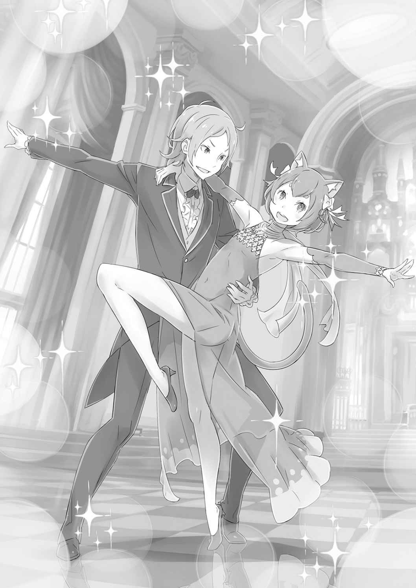
「まったく......はい、殿下がそうおっしゃるんでしたら」
ダンスフロアの中央で向かい合い、互いの手を取ってフェリスは含み笑いする。
その微笑にフーリエもまた笑ったとき、改めて楽団の演奏が奏でられ始めた。
沈みかけの夕焼けに見せつけるステップを踏んで、ダンスが始まる。
時は夜の始まり──主役の登壇が待たれる、誕生会はまだ始まったばかりだった。
10
「殿下ってば、意外とたくましいんですね。私、ドキドキしました」
「そうであろうそうであろう！ 余は男児であるからな。ただなんだ、頬を赤らめて擦り寄るな。なんだか変な気分になる！」
「そんな......殿下が友達って言ってくださったのは嘘だったんですか......？」
「違うぞ、嘘ではない！ が、なんかこのままだと友達じゃなくなりそうで怖いから言っておるのだ！ からかうのはやめろ！ 余を誰と心得る！」
踊りを終えて、万雷の拍手を浴びながらダンスフロアを後にした二人。フェリスはフーリエをからかいながら、クルシュの控室を目指して屋敷の廊下を歩いていた。
役目を忘れて踊りに熱中してしまったが、本来の仕事はパーティーの穏当な進行。意外とそれにも貢献できた気がしながら、次の目的はクルシュのドレスアップだ。
そろそろクルシュにも着替えてもらい、お披露目の準備を整えてもらわなくては。
「でも、殿下は殿方なんですからお部屋には入れませんよ。ドレス姿を見られるのは他の皆様と同じタイミングです。ほら、しっしっ」
「さっきまでの対応と真逆だな！ 急にどうした！ それに余とて、クルシュの部屋にまで押し入ろうとは思っておらぬ。ただ、さすがのクルシュも緊張しておるのではないかと思って、その緊張をほぐしてやろうと思っただけだ」
言い訳がましいが、フーリエの健気さに免じてフェリスはその同行を許した。
それに実際、ドレスで人前に出るとなればクルシュも緊張の一つぐらいあるかもしれない。フーリエの提案も、満更無駄にはならない可能性があった。
そんな目算で二人、並んでクルシュの部屋までやってきたのだが──。
「クルシュ様～？ フェリスです。入ってもよろしいですか？」
「──フェリスか。お前を待っていた。入れ」
扉をノックすると、いつも通りに男前な声が返ってきて入室が許可される。フェリスは何の気なしに、フーリエと一緒に部屋の中に入って、硬直した。
「そうか、殿下がご一緒されていたか。それは予想外だったな」
そう言ってこちらを見るクルシュは、とうに見慣れた軍装姿。それはいい。ただその服を脱いで、ドレスに着替えればいいだけのことだ。問題があるのはその足下。
そこで手足を拘束され、猿轡を噛まされた家令が座らされていることだった。
「く、クルシュ様!? これ、どうしちゃったんですか!?」
「驚くのは当然だが、安心しろ。マロニーに危害は加えていない。ただ、邪魔をされては困るので拘束しただけだ。このあと、メイドがくれば解放される」
「拘束しただけって、そもそもなんで拘束することに？」
「遠回しに話すのは苦手だ。単刀直入に言おう。──父上は、どちらに向かわれた？」
「──っ」
琥珀色の瞳を細めるクルシュの問いかけに、フェリスの喉が驚愕で凍った。
その反応に確信を深めて、クルシュは部屋の窓に手をかける。高さは一階。そこから外に出たところで何の問題もない。そしてクルシュはそうする、その確信があった。
「お、お待ちください！ 何の根拠があって、どこへ向かうつもりで......」
「場所はフォートル平原。目的は災害......魔獣だな。父上はバダック以下腹心を連れ、今夜中に決着をつけるつもりで屋敷を発った。違うか？」
驚愕に驚愕を重ねられて、フェリスは戦慄に射抜かれてしまうしかない。
誰かがクルシュに漏らすとは考えられない。だが、漏らしたとしか考えられないほど事情を把握している。いったい、どうやって。
「一人から聞き出すのは無理が生じる。ならば一人一人、知るものから断片的に情報を拾って繋ぎ合わせた。確信はフェリス、今のお前からだ」
「あ......」
「父上の下に参ずる。たとえ役立たずであろうと、不要であると罵られたとしても行かねばならない。忠臣が獅子の家紋に集うとき、ドレスに袖を通して戦勝の報告をただ待っているなど、断じて許されるものではない」
そう言い出すに決まっている。クルシュが報せを聞けば、そう言い出すのはわかりきっていた。だから屋敷の全員が、グルになってクルシュに隠し通そうとしたのだ。
それなのにそのための努力の全部が、クルシュ一人の才気にひっくり返されている。
「待つがよい、クルシュ！ 誰がそなたにそれを許した！」
押し黙り、何も言えずにいたフェリスの横、フーリエがクルシュを呼び止める。さすがのクルシュも彼を無視はできず、「殿下......」と声の調子を落とした。
「お許しください。私が、私であるために必要なことなのです。無論、賓客の方々への無礼の償いは必ずいたします。ですが、公爵家の人間として行かせてください」
「勝手に話を進めるな。行くとか行かぬとか以前に、何の話をしておるのかわからん！ メッカートは熱を出して部屋で寝ておるのではないのか？ 余はそう聞いておるぞ。実際のところは、フェリスを見るに違うようであるがな」
横目で見つめられて、肩を震わせるフェリスにフーリエは「まあよい」と頷いた。
「フェリスとメッカートの企みはイマイチわからぬが、余にとって許しがたいのはそなたの方であるぞ、クルシュ。そなた、何を勘違いしておるのか」
「私が、勘違い......？」
「自分に流れる獅子王の忠臣、その血を誇るのであれば、今日の催しを台無しにしないこともそなたの役目である。どちらに重きがあるなどと勝手な判断をするな。そなたの評価はそなたが決めるのではない。──誰が見届けると誓ったか、忘れたとは言わせぬぞ」
「──っ」
厳しいフーリエの言葉に、クルシュの表情がかすかに強張った。その心をもっとも強く打った言葉の真意が、見守るフェリスにはよくわからない。そこにはクルシュとフーリエの間にだけ通じる、大切な何かがあった。
「忘れてなど......殿下のおっしゃる通りです。ですが、私は。私はならば......！」
「クルシュ様......」
荒波に呑まれるクルシュの胸中、その苦しみはフェリスにも痛いほどわかった。
今、クルシュの心の中でせめぎ合うのは、公爵家の人間としての誇りと、これまで積み重ねてきたクルシュ自身の人間性だ。どちらも、彼女を形作る大事なもの。
そのどちらを欠いても、クルシュはクルシュではありえない。
「殿下は私に、このまま屋敷に残って、本意ではない笑みを浮かべ続けろと......」
「──？ いや、そんなことは言っておらぬ。そなた、何を勘違いしておる」
「え？」
首を傾げるフーリエに、クルシュとフェリスの驚きの声が重なる。珍しい主従の反応にフーリエは目を輝かせ、それから八重歯の覗く口元を笑みの形に歪めた。
「よいか？ 余が言いたいのは、公爵家の人間としての立場を守れということではない。公爵家令嬢クルシュ・カルステンの在り方を守れと言っておる」
「私の在り方、ですか？」
「父に加勢したいそなたも、誕生会を無事にやり遂げなくてはならぬそなたも、どちらも等しく公爵家令嬢クルシュ・カルステンに求められる役割ぞ。それを損なうでない。余の知るそなたらしく、どちらも完遂せよ」
「──!?」
まるで簡単なことを口にするように、フーリエは自信満々な顔で言い切った。本人はいいことを言った、みたいな顔だが、聞かされる側は突拍子のない意見に困惑する。
「いえ、それはもちろん、どちらも取れれば理想的ではあります。ですが、現実的に考えて両立することは......私の力ではとても」
「また勘違いしておるな。──余がおる。フェリスがおる。そなたは一人ではない」
「殿下......」
「なに、パーティーの予定が狂うことぐらい往々にしてあることよ。なにせ、祝いの席では皆が酒を嗜んでおる故な。少しぐらい主役の到着が遅れようと、他の盛り上げ役がどうとでも時間を持たせるものよ。なんならば、余が剣舞を披露してもよい」
言って、フーリエがそれらしいポーズを取ってみせる。すると、それまで唖然としていたクルシュが瞬きし、ふっと柔らかく微笑んだ。
その微笑みがあまりに自然で美しく、フェリスもフーリエも見惚れるほどで。
「殿下のそのお心、何よりの贈り物にございます。我が身、我が心、殿下に尽きぬ忠誠を誓うことでしょう。──ありがとうございます」
「やめよやめよ！ そなたにそのようにされてはこそばゆい！ 余とそなたは友である。つまらぬことは気にするな。それより、フェリス！」
「は、ひゃい！」
急に名前を呼ばれて肩を跳ねさせるフェリス、その肩をフーリエが叩いた。
「クルシュは無茶をする。そなたが守るのだ。そなたは、クルシュの騎士なのだから」
「私が......クルシュ様の騎士？」
「一の騎士は主の傍で、そのものを必ず守り通す意思と想いがなければならぬ。であれば余はそなた以外に、クルシュに相応しい騎士を知らぬ」
万感の思いが、そのフーリエの言葉に溢れ出してきた。
剣を握り、クルシュを守る──それは遠い昔、自分の体の虚弱さに諦めた夢だ。その夢はクルシュとの約束に代わり、そして約束は今日という日に失われるはずだった。
寄る辺がなくなるはずだったこの日に、フェリスは新たな誓いを得る。
「でも、私は剣も握れなくて......そんな弱い騎士が、いても......」
「殿下のご意思だ。それに、剣ならば私が振るう。お前にはお前しかできないことを、私の傍でしてほしい。──それが、私が私の騎士に求めるたった一つの条件だ」
クルシュの断言に、熱い雫が一筋だけフェリスの頬を伝った。
焼けるようなその熱に、フェリスは慌てて頬を擦る。それからフーリエに向かい合うと、その見慣れていたはずの王子に強い敬意を払い、
「フェリックス・アーガイル、拝命しました。必ず、クルシュ様を守ります」
「そうせよ。余に代わり、友を頼む。──それからクルシュ、受け取れ」
最敬礼するフェリスに頷きかけ、フーリエはふいにクルシュにそれを差し出す。それは控室を訪ねると聞いたフーリエが、わざわざ持ち出してきたものだった。
「殿下、これは？」
「そなたは贈り物は余の心で十分と言ったが、それでは余の気が済まぬ。故に余も贈り物を用意した。おそらく、そなたに最も似合うであろうと」
手渡された細長い包み、重量感のあるそれを紐解き、クルシュは目を見開いた。
彼女の手の中にあったのは一振りの剣──それも、一目で業物とわかる代物だ。
「城の宝物庫にくすぶっておった中でも一番の業物よ。ボルドーの奴に目利きさせたから確かであるぞ。それを、余からそなたに下賜する」
「殿下は......私が剣を握ることに、反対されていたはずでしたが」
「しょうがないであろう。余の見てきたそなたは、ずっと剣を握っていたそなただ。余が好きなそなたは剣を握るそなただ。無論、婦女子の装いをまとったそなたも魅力的ではあろうが......余にとって、そなたは剣を握る女子なのだ」
かすかに頬を赤らめながら、フーリエはまっすぐにクルシュにそう伝えた。
「どうせ剣が手放せぬのであれば、せめて握らせる剣は余が選んだものとしたい。そうでなければそなた、いつまでもあの短剣を手放すまい。獅子王にそなたを奪われたままでいるのは、余とて本意ではないのだ」
「私の獅子王は、もうずっと前から......いいえ」
言葉を中断し、クルシュは首を振った。それから彼女は、受け取った剣を頭上へ掲げ、
「ありがたき幸せ。必ずや、殿下のお心に見合った成果を持って戻ります」
「うむ！ ......まあ、少し心外な受け取られ方ではあるが、まあよい！」
それなりに気合いの入った告白だったが、クルシュの鈍感に綺麗に流された。そのことを不憫に思いつつも、フェリスはフーリエを改めて尊敬し直す。
そして、
「では、行くぞ、フェリス。父上に助勢し、そして即座にパーティーに戻る！」
「わあ、聞くだけで重労働！ フェリちゃん、今朝から大忙しだったのにぃ」
クルシュが颯爽と窓から飛び出し、フェリスもそれに続いてドレスを翻す。草を踏んで外気を浴びて、何をしているんだろうとフェリスは深く息を吐いた。
けれど、クルシュを騙しているときの閉塞感は、すっかり胸から掻き消えていた。
そうして飛び出していった二人を見送り、フーリエはまずは窓を閉めた。
「さて、送り出してしまったはよいが......結局、何がどうなっておるのかよくわからんままであったな。どうしたものか、ふむ」
言いながら、しゃがみ込むフーリエが放置されていた家令の顔を覗き込む。感銘を受けた顔の家令に頷きかけ、まずはその猿轡を外してやりながら、
「色々、ちゃんと説明してもらうぞ。その上で、この急場をそなたらや余だけでどうしのぐか考えなくてはならぬ。クルシュの代理、責任重大であるからな！」
そう言いながらフーリエは、いつものようにカラカラとあけすけに笑った。
11
──カルステン公爵邸のパーティーを、徐々に不穏な雰囲気が支配しつつあった。
当然の話だ。なにせ、パーティーが始まって数時間、すでに夜も深まり、宴の席も十分に温まった。あとは主役である、公爵令嬢クルシュの登壇と挨拶を待つばかりなのだ。
にも拘わらず、肝心の主役がいっこうに姿を現さない。それどころか、体調不良を理由にパーティーの主催者であるメッカート・カルステン公爵まで顔を見せないのだから、招待客たちの間に不審の色が広がり始めるのも必然といえよう。
「主役と主催者、どちらも顔を見せないパーティーなど招待客を馬鹿にしている」
大っぴらにではないが、小声でそんな内容があちらこちらで囁かれる。
まさに針の筵のような立場で、それでも主人たちのために懸命に役目を果たした家令や使用人たちの献身は、忠節という言葉で語るのが惜しまれるほどだった。
「むぅ......さすがに、余の頑張りでもこれ以上の引き延ばしは厳しいか......」
唯一、招待客側で事情を知るフーリエだけが、その立場と風聞を活かして暴れ回り、招待客の不信感と退屈を紛らわす役目を買って出ていたが、これもそろそろ厳しい。
下手な剣舞と、やけに上手いリュリーレの演奏で引き延ばすのも限度がある。
こうなれば、次はいよいよ王家に伝わる伝統の隠し芸を──と、フーリエが王族の誇りをかなぐり捨てて一芸に挑もうとしたとき、会場にどよめきが広まった。
ざわめく招待客、その発信源はホールの入口だ。大扉を開け放って、外から何者かが姿を現す。それは長い緑髪を躍らせ、軍装を身にまとう凛々しい人物だった。
「クルシュ・カルステン様だ」
誰かが、姿を現した麗人の名前を呼んだ。
クルシュはその呼び声に琥珀色の瞳を向ける。視線を浴びたものが硬直し、それを見届けたあとでクルシュは胸に手を当てる。そして、優雅に一礼した。
「来賓の皆様、このたびは遠方よりご足労いただき、誠にありがとうございます。その上で当家の数々の不手際、当主メッカートに代わってお詫び申し上げます」
かすかな驚きが広がるのは、その透き通る美声に宿る強い意志を感じたからか。
まだ十七になったばかりの少女の堂々とした態度に、それまで陰口を叩いていたものたちも口を閉ざし、その凛とした声音に耳を傾ける。
「なおも身勝手をお許し願えるならば、今しばらくのご猶予をいただきたい。皆様へのご挨拶と、会の主催に相応しい装いにて言葉を改めたく思います故」
背筋を正し、顔を上げたクルシュの眼差しが会場にいる招待客を見渡す。その刃の鋭さを宿した視線に、賓客は無言で彼女の意思を肯定するしかない。
「感謝いたします。──フェリス、こい」
「はい」
見れば、いつの間にかクルシュの背後には青いドレスの人物が立っている。こちらも美しい立ち姿。ドレスの裾や髪を乱しているが、当人も主人も気にしていない。
並んで歩き出す主従に、思わず誰もが道を譲った。
軍装に身を包み、見るものの背筋を伸ばさせる佇まいでクルシュが進む。腰に備え付けた宝剣が、彼女の在り方をそのまま表しているようですらあった。
途中でメイドを帯同し、騎士を連れたクルシュが会場から姿を消す。すると、途端に緊迫感が晴れて、一同が息を吐きながら顔を見合わせた。
「クルシュ様のことは、噂には聞いていましたが......」
「剣術狂いで、男勝りのご令嬢とか......はは、あれが」
言葉少なに、震え声がクルシュを小馬鹿にしようとする。だが、それが年若い少女に呑まれたことを誤魔化すポーズであることは、他でもない当人が一番わかっている。
声を聞き、間近に歩く彼女を見た多くのものの心は一つだ。
剣術狂いの放蕩貴族などと、とんだ法螺だ。あれは家紋通り、獅子そのものだと。
カルステン公爵家の在り方は、クルシュ・カルステンに継がれていたのだと。
「────」
そのことに慄然とし、パーティーの収穫は十分にあったと多くは考えた。だが、それ以上の驚きがあるとは、もはや誰も期待していなかったといえよう。
しかし最後の衝撃は、着替えたクルシュが戻ったときに再び彼らを襲った。
「......美しい」
ぽつりと、誰かがそうこぼした。それが誰のものだったのか誰にもわからない。呟いた当人すらも同じだ。それほど、全員の感慨が一致していたのだから。
月明かりのホールに姿を現したクルシュは、黒のドレスを身にまとっていた。長い緑の髪を結い上げ、白い肌にはいくつもの装飾品がきらめいている。しかし、軍装のときには剣のように鋭かった印象が、ドレスをまとえば宝石の輝きへと即座に変わる。
磨き抜かれた宝石の顕現に、もはや吐息すらも野暮な感想でしかない。
「フーリエ殿下、大変なご迷惑をおかけしました」
踵の高い靴音を立てて、ドレス姿のクルシュが最初に向かったのはフーリエの下だ。腕を組む第四王子は、正面に立つクルシュの姿に満足げに顎を引いた。
「やはり余の見立ては間違っていなかった。クルシュ、そなたは美しいな」
「もったいないお言葉です」
「世辞など言わん。本当ならば今のそなた、余が独り占めにしたいところだがそういうわけにもいかぬ。待っていたものたちに、しかと見せつけるがよい」
かすかに頬を赤くしながら、フーリエがクルシュに顎をしゃくってみせる。その仕草の意図に頷いて、クルシュはドレスの裾を揺らしながら振り返った。
ホールの中央で、視線を浴びながらクルシュは優雅にカーテシーをしてみせる。
「先ほどは大変な失礼をいたしました。加えてさらにお時間をいただき、ご恩情に甘えるばかりでお詫びの言葉もございません。その上で、改めて感謝を」
「────」
「本日は私、クルシュ・カルステンのために、お運びありがとうございます。私も十七、もう年齢を理由に父にも、皆様にも甘えることが許される歳ではありません。今日のことも、これまでのことも、多くに支えられてのこと。──故に、誓わせていただきます」
視線はまっすぐ、誰の耳にも届くように、言葉に恥じないように。
「クルシュ・カルステンは今日この日より、家名にも、皆様のご期待にも恥じない貴族としてありましょう。この場にいる皆様が証人です。私が誓いを破らぬよう、この言葉を嘘にしないかどうか、今後の行動で判断していただきたい」
「────」
「お耳汚しを失礼いたしました。改めて、ご歓談をお楽しみください。本日は誠に、お集まりいただきありがとうございました」
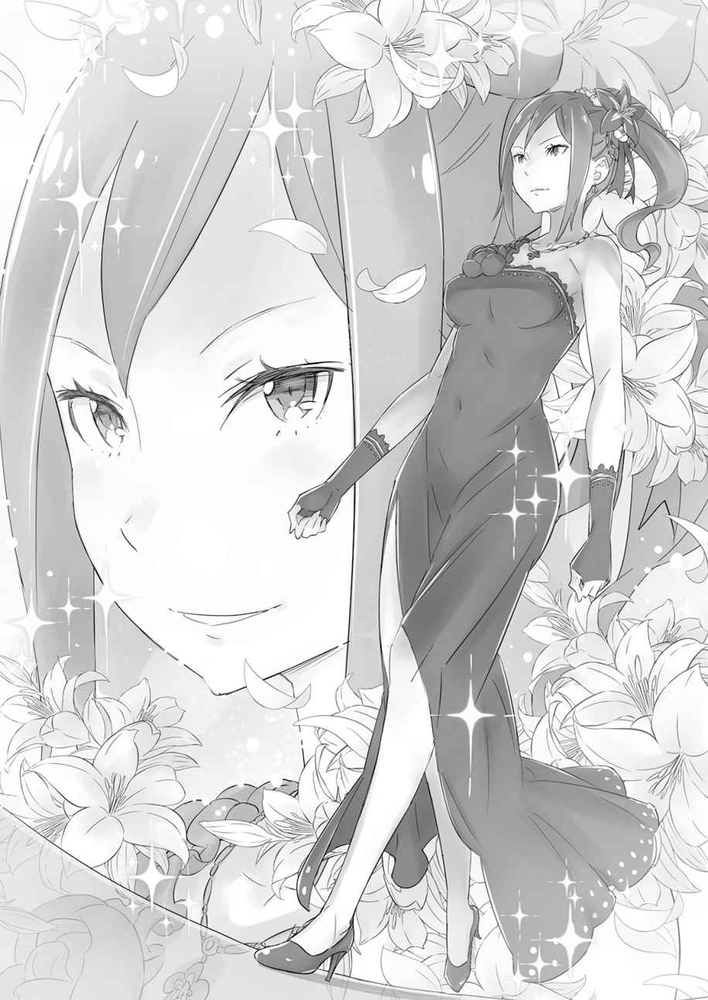
挨拶が終わる。だが拍手はない。圧倒されているのもあるが、それだけではない。
クルシュの言葉と態度が、それを求めていないのだ。
「殿下、よろしければ一曲、お付き合い願えませんか？」
「む......」
そんな空気の中、クルシュがフーリエに手を差し伸べてダンスに誘う。
周囲の人々と同様、クルシュに見惚れていたフーリエは反応が一瞬遅れるが、すぐに普段の顔つきに戻って目を輝かせた。
「うむ、よいぞ。当然であるな。そなたを女にしたのは余であるが故に、そなたの最初の相手は余であるべきだ」
「──!?」
軽はずみなフーリエの言葉が、聞こえた人々に誤解と動揺を生む。が、クルシュは薄く微笑むとそれを訂正せず、手を取るフーリエとダンスフロアへ向かった。
「ちなみにフェリスにも聞いたのだが......クルシュ、そなたは女性パートは踊れるのか？ 言っておくが、余に期待されても困るぞ」
「ご安心ください。男女どちらのステップも、ちゃんと習得しています。殿下が逆がよろしいのでしたら、お付き合いしますが」
「それはそれで面白いが、ドレスのそなたに余が支えられるのは絵にならんな」
苦笑するフーリエに、クルシュは「でしたら、女性パートを」と応じる。そしてクルシュの目配せに従い、静観していた楽団が音楽を奏で始めた。
月下に二人の男女が踊る、パーティーのあるべき光景。
──招待客たちの心にも残るステップが、この波乱の一日の幕を静かに引いていく。
12
「それにしても、一時はどうなることかと思いましたよねっ」
パーティーの終わった翌日、主立った顔ぶれの集まる席でフェリスはそう言った。隣に座るクルシュの腕に抱き付き、甘えるフェリスを主が優しく撫でる。
「フェリスには気を揉ませたな。すまなかった。お前がいなければ、父上も戦傷でどうなっていたかわからない。さっそく、騎士の役割を果たしてくれたな」
「もったいないお言葉ですぅ。もっと撫でてください」
「そなたら、一夜明けて途端にべたべた甘えるようになったな!?」
いちゃつく二人にフーリエが声を上げると、撫でられていたフェリスが唇を尖らせた。
「っていうか、殿下はいつまでお屋敷にいるんです？ もうパーティーは終わりましたし、居座る理由とかないじゃないですか。お仕事は？」
「露骨に追い払おうとしておるな！ ぐぬぬ、余の友はいつからこんな性格に......！」
「殿下とお友達になれて、きっとそのおかげかなぁって。いたっ」
「フェリス、いい加減にしろ。殿下に失礼だろう」
軽く猫耳を引っ張って、クルシュはフーリエに目礼する。その態度にフーリエは腕を組んだが、すぐにきりりと眉を上げた。
「そなたにも言いたいことがあるぞ！ まず、なぜまたその格好をしておる。婦女子らしい装いはどうした。約束が違うではないか」
「殿下、父上との約束は公務や必要な場でのことです。普段着はこちらでいいと、療養中の父上からは言質を取っておりますので、これで通させていただければ」
しれっと答えるクルシュの格好は、すっかり見慣れた軍装姿だ。彼女の美しさは微塵も損なわれないが、昨夜のドレス姿を知っていれば惜しいと思うものも多い。
「そう、メッカートもそうだ。そなたらを送り出したあと、家令のマロニーから事情を聞いて余は肝が冷えたぞ。まさか大兎の討伐に......奴らは追い払えたのか？」
「ええ、それはもう！ クルシュ様の獅子奮迅の活躍があって、大兎なんてばっさばっさと薙ぎ倒してやりましたよ！ フェリちゃんたちが到着したとき、メッカート様がドジして負傷しておられましたから、クルシュ様がいなかったらどうなってたことか......」
「それは言いすぎだ。私がいなくても、バダックたちがうまくやったろう。誇れることがあるとすれば、私の剣技が少しは役立ったことと、フェリスの治癒術の力ぐらいだ」
クルシュはそう言って謙遜するが、フェリスはその活躍を誇りに思っている。
実際、メッカートは自分の力不足を痛感した様子だ。フォートル平原では、大兎に住処を奪われた魔獣や獣たちがわんさと暴れていた。メッカートの負傷はその中で負わされたものだが、合流したクルシュの差配と判断が的確だったことが勝敗を分けている。
中でもクルシュの剣技──のちに『百人一太刀』と呼ばれることになる絶技は、あの戦いに参加したものの声で広められていくことだろう。
事実、昨夜の誕生会の終わり際、カルステン公爵領の戦乙女の呼び声はフェリスの敏感な耳には何度も届いていた。戦乙女とは、実にクルシュに相応しい呼び名だ。
「とはいえ、言いつけを破ったことは確かだ。父上には喉が嗄れるほどに叱責されてしまった。剣も地竜も、また禁止とのことだしな」
「約束を破りかけたのはメッカート様も同じなのに......まあ、親心ってやつですかねー」
「私からも、傷が治って戻られれば言いたいことがたくさんある。それまでに少しは父上の仕事の重責、味わっておくこととしよう」
負傷の療養に数日、メッカートは屋敷を空けることになっている。その間、公爵領の領主代行はクルシュに任されているのだ。ただ、クルシュの瞳はどこか楽しげで。
「そなた、よい顔をしておるな」
フーリエの言葉に、クルシュは意外そうに目を丸くし、それから微笑んだ。
「ええ、そうかもしれません。昨夜は私にとっても、色々な意味で得難い経験を得ることができた時間でした。こう言っては父上に叱られるかもしれませんが......私は昨日の出来事を経て、やっと私になれた気がするのです」
晴々とした顔で、クルシュは自分の心情をそんな風に口にする。
その微笑みがあまりに透き通っていて、フーリエは完全に見惚れた。そのまま口をパクパクさせるフーリエに代わり、フェリスが悪戯な眼でクルシュの腕を強く抱く。
「それにそれに、ドレスも悪くなかったって言ってましたもんね」
「着る前は色々と不安もあったのだが、着てみれば意外と悪くなかった。今後はそうだな......寝衣くらいは、ああしたものにしていいかもしれない」
「いいと思います！ フェリちゃんも、普段のクルシュ様と踊るのも最高ですけど、二人ともドレスで踊るのもなんだか新鮮だにゃーって」
「あれは余もどうかと思ったぞ！ ドレスの女子が男女パート......いや、正しくは逆転しておるのか。ドレスの男女が男女パート......ん？ なんだ、どうなった!?」
自分の発言に自分で混乱し、フーリエが首を傾げて目を回している。そんな様子にクルシュとフェリスは同時に吹き出し、その二人の反応にフーリエもまた笑った。
「何もかも丸く収まった、というにはまだまだ後片付けが多いが、大部分は一件落着と言えるであろうな。ならば、それでよい！」
「殿下はなんでもさっぱりしてて素敵ですねえ。フェリちゃん、惚れ直しちゃう」
「はっはっは！ それが余の良いところであるからな！ うむ、だからあまり擦り寄ってくるな。やめろ！ 余を惑わすな！ 可愛い顔をするな！」
上目づかいのフェリスにしなだれかかれて、フーリエが自制心を総動員している。
そんな二人を愛おしげに見つめて、クルシュは小さく吐息をこぼした。
「本当に、私は恵まれすぎている。──この幸い、いずれ返せるだろうか」
与えられすぎていることを恐れるように、クルシュは感慨深げにそう呟いていた。
──クルシュ・カルステンが、メッカート・カルステンから当主の地位を譲られ、カルステン公爵家の当主として立つのは、これからわずか半年後の出来事。
矢のように忙しい日々が始まり、三人で笑い合う時間は間隔が徐々に開き──。
やがてクルシュはこの一日のことを、何度も何度も繰り返し思い出すことになる。
だがそれはまだ、しばらく先のことだった。
《了》
『フェリックス・アーガイルの呪縛』
１
近衛騎士団とは、王国騎士ならば誰もが憧れるいわば騎士の花形だ。
二千からなる王国騎士団の中でも、選りすぐられた精鋭だけが所属を許され、その役目は国王や王族の身辺警護──すなわち、王国の心臓を守る剣であり盾だ。
近衛騎士団の現団長であるマーコス・ギルダークは、その肩書きに恥じない歴戦の兵であり、近衛騎士団に配属されるにはマーコスのお眼鏡に適わなくてはならない。
かつては家柄や後ろ盾が大きく物を言ったこともあったそうだが、今日の近衛騎士団においてはそうではない。故に近衛騎士団は、王国随一の精強さを守り続けているのだ。
「そんにゃ近衛騎士に配属にゃんて、フェリちゃんには荷が重いと思うんですけど～」
テーブルに上体を投げ出して、フェリスは唇を尖らせながらそうぼやいていた。
騎士団詰所の食堂には、ちょうど昼時ということもあって大勢の人間がごった返している。このほとんどの人間が騎士だというのだから、まったく壮観だ。
個人ではなく、王国に仕える王国騎士は所属をマントの色で分類されている。第一軍から第四軍まで、赤・青・緑・黒といった塩梅だ。視界に入る範囲でも、大体はマントの色で固まっており、同じ騎士団同士で懇親している様子が多く見られる。
食堂の座席にも暗黙の了解があるらしく、入口に近い席から順に第四軍が埋めていくのが習わしだ。基本的に入口から遠い方の座席は、位階の高い騎士たちに譲られる。
そして、その騎士たちの習わしに従い、最奥の座席に座れるのは白いマントの装備を許された近衛騎士──つまり、フェリスたちのことだ。
「あまりそうしてだらしなくしているものではないよ、君」
「むー？」
興味なさげに食堂を見回していると、ふいに正面から声をかけられた。相手はフェリスの前の席に腰を下ろすと、その切れ長の瞳を細めてこちらを見やる。
色素の薄い紫の髪に、気品と精悍さを併せ持った顔つき。フェリスがこの世で最も好きな顔には劣るが、十分に整った美丈夫だった。
「ユリウス・ユークリウス......だっけ？」
「覚えてもらえていて光栄だ。私も君のことは聞き及んでいるよ、フェリックス・アーガイル。近衛騎士団に異例の大抜擢だと噂になっているからね」
「ふーん」
薄く唇をゆるめる青年──ユリウスはそう言って、フェリスの頭部の猫耳に注目する。彼の黄色の瞳を過る感情までは知れないが、珍しいもの扱いは慣れたものだ。
とかく亜人への風当たりが強いルグニカ王国で、騎士団の要である近衛騎士団に自分のような、亜人と見紛う外見の存在が入り込むのはさぞ風聞が悪いだろう。
フェリスのその内心が視線に出たのか、見返されるユリウスが眉を寄せた。それから彼は咳払いし、軽く目礼してみせる。
「不躾な目を向けて申し訳ない。話には聞いていたのだが、どうにも自分の目で見ずには信じきれなくてね」
「その聞いた話がどんにゃだったのか話してくれたら許すかもネ。筋骨隆々で毛むくじゃらの化け猫とでも聞いてた？ こーんな可愛いフェリちゃんを捕まえて、そんな噂が流れてたんだったらひっどいんですけどー」
「私が団長から聞かされた話では、先祖に亜人の血が入った先祖返りの表れだと。確かに立派な耳だ。君がそうして、誰にでも噛みつきたくなる気持ちもわかる」
「......もしかして、フェリちゃんにケンカ売ってる？」
あからさまな侮蔑以外で、フェリスの猫耳の話題に触れてくるものは少ない。ましてや相手は騎士団長から、こちらの背景の触りまで聞き出している。早々に貴族の跡取り息子の地位を捨てたフェリスには経験がないが、これが特権階級の洗礼というものか。
フェリスと違い、ユリウスは見るからに剣術にも優れた騎士だ。もしもこのまま荒っぽい事態になれば、まともに剣も振れない自分に勝ち目などない。
「でも、だからってタダで負けてやるほど可愛げあるフェリちゃんじゃないもんネ」
「やけに敵愾心を高めているところすまないが、おそらく誤解が生まれているようだ。そのあたり、話し合いを求めても構わないかな？」
「にゃにゃ？」
しかし、挑発的に振る舞うフェリスを、ユリウスは逆にたしなめてきた。予想と違う反応にフェリスが首をひねると、同時にすぐ隣の座席の椅子が引かれる。
「だから言ったじゃないか、ユリウス。ここは僕が先の方が話が拗れずに済むって。君は誤解されやすいんだ。初対面の人には特にね」
「忠告は感謝するよ。だが、私は判断を誤ったつもりはない。君が先に話しかけていても無用な混乱を生むのは避けられないだろう。現に彼を見たまえ」
気安い口調でユリウスに話しかけていた青年が、彼の言葉にフェリスを見た。その青い瞳と燃えるような赤毛に、フェリスの背筋が思わず伸びる。
「ひょっとして......ラインハルト・ヴァン・アストレア？」
見間違えるはずもない特徴的な容姿から、その名前が導き出される。
フェリスに問いかけられて、赤毛の青年は人懐っこい笑みを浮かべると、
「ああ、名乗る必要はないみたいだね。確かにそれは僕の名前だ。付け加えると、君と同じく近衛騎士団に所属する騎士の一人でもある。そこのユリウスと同じくね」
「未熟な身としては、君と同列に語られることに戸惑いもあるのだが......団長からのお言葉もある。評価は評価として受け入れておくとしようか」
「あのー、話が見えてこにゃいんですけど？」
ラインハルトとユリウスの二人は友人らしく、会話の端々に親しみがある。それでもユリウスは一線を引いている感があるが、置き去りのフェリスにはどうでもいいことだ。
それよりもこの二人、特に『剣聖』ラインハルトに絡まれた原因の方が気にかかる。噂に聞く『剣聖』の人柄なら、まさか新人いびりではないと信じたいが。
「みんな遠巻きにしてるフェリちゃんに何のご用？ まさか、イジメじゃないよね？」
「本当にまさか、だね。騎士として近衛の装束に身を包んでいながら、そのような陰湿な行いは誓ってしまいよ。私たちがこうしているのは団長の指示だ」
「マーコス団長の？」
やや迂遠なユリウスの言い回しに、フェリスは巌のような顔立ちの騎士団長を思い浮かべる。彼の指示で、二人はフェリスに何をしにきたのか。
「まぁ早い話、さっき君が心配していたようなことが起きないようにかな。僕とユリウスは君と歳が近いし、近衛騎士としては長いから相談にも乗れると思う」
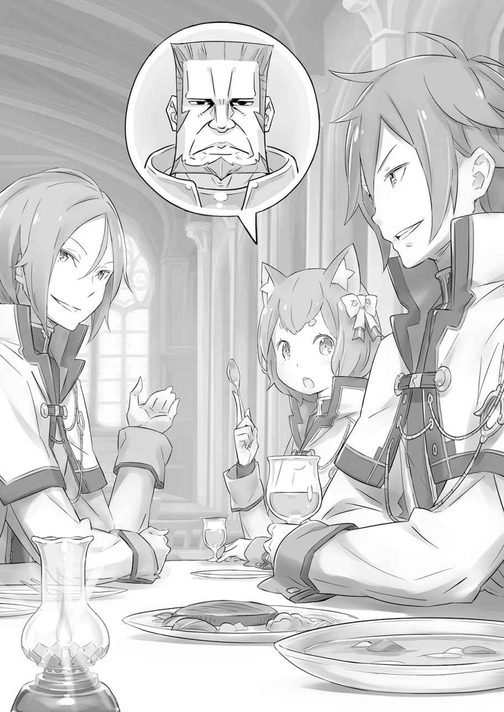
「あー、なるほど」
ラインハルトの説明に、フェリスは頬杖をつきながら納得する。
要するに二人は団長命令で、フェリスのお目付け役に指名されたのだ。フェリスの立場は猫耳・コネ入団・剣技の実力不足と、問題を起こすには十分な要素が集まっている。こんな騎士を預けられた団長も、ひどく気が重いことだろう。
期限は一年間で、試用期間付きとはいえ──厄介なことこの上ない立場だ。
「その様子だと、自分の置かれた状況は把握できているようだね」
「他人事なら笑い話だけど、当事者になると面倒臭いだろうなーってのはね。ちなみに団長のお言葉抜きだと、二人はフェリちゃんのことどう聞いてるの？」
その言葉に二人は目を丸くし、顔を見合わせてしばし考え込んでから、
「第四王子のお気に入りで、その気紛れとわがままで入団が決まったとか」
「それと王城お抱えの治癒術師や、王立治療院から強力な推薦があったと聞いているね。団長が異例の抜擢と認めている以上、実力が誇張でないと信じたいところだが」
ユリウスたちの答えに、なるほどおおよそ想像通りの前評判だなと自分で呆れる。
それと同時に、食堂の視線がさっきよりよっぽどフェリスたちに集まっていた。どうやら視線を集める理由は自分だけではないらしい。『剣聖』ラインハルトはともかく、この分だとユリウスにも何かしらあるのだろう。
「もしかして、問題児をまとめただけだったりしにゃいよね......？」
そんな嫌な予感をひしひしと覚えながら、フェリスはこれから始まる近衛騎士団としての試用期間に思いを馳せるのだった。
２
フェリスが近衛騎士団に入団、それも期限付きの上に試用期間有りなどと複雑な状況に陥ったのには、当然ながら深い訳がある。
十八歳になったフェリスは、自分が終の主人であるクルシュの下で生涯尽くすことに何の疑問も抱いていなかった。そのことに関してはクルシュ本人からの了解も得ており、主従間でしっかりと意思統一ができていた事柄でもある。
ただし、問題となったのはもっと別の慣習的な部分であった。
フェリス──本名フェリックス・アーガイルは、普段の格好こそ女性的であるが、その実体は男児である。故に彼がクルシュに仕えるのであれば、その立場は使用人や側近としてよりも、一人の騎士としての役回りが求められる。
実際、フェリスはとある事情からクルシュの騎士を自任しており、これにはクルシュからの同意もある。足りていないのは純粋に、フェリスの騎士としての実績だ。
無論、当の主人であるクルシュ本人がフェリスを騎士と認め、その叙任式を行うのであれば形式的には問題ない。ただ、そうした無名の騎士を登用するには、カルステン公爵家の当主であり、名実ともにカルステン公爵となったクルシュの立場が高すぎた。
ただでさえ女性であり、過去の振る舞いから侮られることの多いクルシュだ。この上、実績も実力もない従者を、ただ付き合いの長さだけで一の騎士として傍に置くとなれば、これまで以上に悪い噂が立つことは避けられない。
そうならないためにも、フェリスにはクルシュの騎士に恥じない実績が必要となった。そして、その問題に際して手を貸してくれたのが、第四王子フーリエ・ルグニカだ。
「そなたがクルシュの騎士になるのは、余にとっても他人事ではない故な。騎士団にねじ込むぐらい造作もないことよ。では適当に......うむ！ マーコスあたりにでも話しておくことにしよう。気楽に待つがよいぞ！」
フェリスの相談にあけすけに笑い、止める暇もなく駆け出していったフーリエの姿が思い出される。そのままあれよあれよという間に、フェリスの近衛騎士団入りが決まり、箔付けのための一年間のお勤めが始まったと相成ったわけだ。
とはいえ、全てがとんとん拍子というわけではない。
「フーリエ殿下からのお達しと、それ以外にもいくつか推薦があった。カルステン公爵からも、お前をよろしく頼むと言伝されている。そのあたりの状況も鑑みて、ひとまず近衛騎士団所属とするが......無条件に、というわけにもいかんからな」
フェリスの入団にあたり、そう言って難しい顔をしていたのがマーコス団長だ。
詰所の団長室で、フェリスを迎えた彼が提示したのが試用期間──つまり、フェリスが近衛騎士団の活動に音を上げ、逃げ帰るための猶予期間の設定だ。
「期間中に、お前が使い物にならんと判断したら入団の話はなしだ。ただ、その間なら経歴に傷が付かないようにしてやる。さすがに王子や推薦者の心証までは責任取れんが、公的に負け犬の汚名を背負って過ごすよりはマシだろう。そういうことで、いいな？」
厄介事を押し付けられた顔を隠さず、端的に話すマーコスにフェリスは好感を抱いた。顔色をうかがって、上っ面の言葉が求められていないのは実に気楽だ。
「一つだけ、聞いてもよろしいですか？」
「なんだ」
「試用期間が過ぎたら、その試用期間も期限の十二ヶ月に含めてくれるんですよね？ 正直、一ヶ月余計にクルシュ様とお別れなんて、絶対に御免なので」
「────」
そのフェリスの宣戦布告に、マーコスはわずかに押し黙る。
それからすぐに、疲れた表情が一変──獰猛な戦士の顔つきになり、
「いい度胸だ。なよっちい見た目のわりに、骨があるって期待しようじゃねえか」
そう、荒っぽい口調で言った。
「ってな感じで脅されてたけど......思ったより、騎士の生活って退屈だったり？」
「ほんの数日で、騎士団の全てを見透かしたような発言は早計すぎやしないだろうか。確かに近衛騎士団は職務上、出動の機会は限られているが、有事に際してはもっとも尽力しなければならない立場だ。普段から背筋を正しておく必要がある」
「はいはい、お堅いんだからぁ」
ひらひらと手を振って、フェリスは相変わらずなユリウスをなだめる。時間潰しのつもりで話題を振れば、勤務中は手厳しいのが彼の特徴だ。目付け役の彼と過ごして十日ほど経ったが、フェリスがこれまで見た中でもかなりの難物であることは間違いない。
もっとも、
「もうちょっと、肩の力を抜いて過ごしても誰も文句言わにゃいと思うよ？」
「剣を置いている間は自然とそうしているさ。だが、そうでないときは騎士でなくてはならない。これはフェリス、君にも同じことが言えるのだがね」
「ぶーぶー、厳しいにゃー」
フェリスが唇を尖らせると、ユリウスが嘆息する。が、すぐに唇をゆるめた。
短期間で軽口の一つも交わせる程度に、ユリウスとは親しくしている。職務中は融通の利かない部分もあるユリウスだが、そうでない合間には面白い部分もある。騎士としての立場に拘りすぎているのも、似合わない子どもっぽさの表れのように感じていた。
故に、フェリスはユリウスを気に入っている。むしろフェリスが苦手なのは、
「あ、いたね、二人とも。すれ違わなくてよかったよ」
「にゃっ」
そう言って、食堂の定位置で雑談する二人に混ざったのはラインハルトだ。自然な動きでフェリスの肩を叩き、ユリウスに笑いかける青年にフェリスは耳を逆立てる。
「うー、また不意打ち......ラインハルトって、ホントに神出鬼没だよね。フェリちゃんの感覚に引っかからないとか、人間辞めすぎてて怖いんだけど」
先祖である亜人の血の恩恵で、フェリスの感覚器官は飛び抜けて優秀だ。特に猫耳は空気の変化に敏感で、他者の意識がこちらを向けばすぐにでも気付ける代物なのだが、ラインハルトは例外中の例外だ。彼だけは一度も、フェリスの感覚に引っかからない。
「こればかりは生まれ持ったものだから、フェリスにも納得してもらうしかないな。それよりも招集だよ。フェリス、フーリエ殿下がお呼びだ。ちょうど暇をしていたところなんだし、近衛騎士の本分を堪能してくるといいよ」
「......さっきの話、聞こえてたの？」
「聞くつもりはなかったんだけどね」
頬を掻いて照れ笑いするラインハルトに、フェリスは呆れるしかない。
今日は人が少ない方だが、それでも食堂には雑談が飛び交っている。そんな中から、一番奥にいるフェリスたちの会話を拾うなど、フェリスの耳でも到底不可能だ。
「殿下の御指名とあれば急ぐとしよう。フェリス、付き添いは私で構わないかな？」
「......あ、うん。えーと、ラインハルトは？」
「誘ってもらえるのは嬉しいんだけど、今回は僕も先約があってね。これから少し、帝国領の国境付近まで出向かなくちゃならないんだ。睨みを利かせてこいと言われてね」
「へえ......ラインハルトが呼び出されるにゃんて珍しい......」
申し訳なさそうなラインハルトの返事に、フェリスはそう言って首をひねった。その隣で席を立つユリウスが、かしこまった顔でラインハルトに頷きかける。
「なに、フェリスのお目付け役は私で十分だよ。君は課せられた使命を果たすといい」
「使命だなんて、そんにゃ大げさな......」
「そのぐらいの覚悟で臨め、ということだね。わかったよ。任せてほしい」
ユリウスの言葉にラインハルトが頷き、手を振る彼に見送られて食堂を出る。
フーリエに呼び出される場合、向かう先は王城にある王子の居室だ。勝手知ったる近衛の特権とばかりに、通い慣れた王城への道を悠々と歩く。
「こうも頻繁に呼び出されるとは、ずいぶんと殿下と親しくされているのだね」
「ま、お付き合いも長いから。もうかれこれ......八年くらいになるかにゃ？ フェリちゃんにとっては、権力的な意味でも大事なお付き合いですよ」
詰所と王城を繋ぐ通路を歩きながら、隣のユリウスに悪い笑みを向ける。しかし、ユリウスはフェリスの言葉に苦笑した。
「悪ぶらずともいい。君と殿下の付き合いに打算的なものは感じない。そのぐらい、短い付き合いの私にもわかる。殿下も君も、互いを大事に思っているようだからね」
「......人に言われると照れ臭いよネ。っていうか、打算はないにゃんて言うけど、私が近衛騎士になれたのは殿下のおかげでしょ？ それって立場を利用したと思わないの？」
「最初の会遇で、君に不躾なことを言ったのは謝罪するよ。入団から一週間余り......君の実力が近衛に相応しくないなどと、そう考えている近衛騎士はもはやいないだろう」
律義に頭を下げるユリウス、その下がった後頭部にフェリスは手刀を入れる。無論、悪ふざけ程度の威力だ。頭を上げるユリウスにフェリスは笑いかけ、
「ん、そう思ってもらえてるならよかったよかった。なんせ、フェリちゃんの恥はフェリちゃんだけのものじゃありませんからにゃー。推薦してくれたみんなに迷惑かけちゃう」
「推薦者に恥じない働きぶり、という意味ではもう十分だろうね。偶然、君が腕を振るう機会が散発したのも幸いした。──団長には、やはり頭が上がらないな」
「そだねー」
ユリウスの発言に、フェリスは軽い調子で同意するが、内心では深々と頷いている。
剣の腕に未熟なフェリスが近衛騎士として認められるには、剣力以外の実力を見せつける以外にない。その剣力に勝る個人の強みが、フェリスにとっての治癒魔法だ。
幸いこの一週間、フェリスが治癒術師としての力を発揮する機会には事欠かなかった。
練兵場でマーコス団長が直々に、部下を鍛錬する機会が頻発したからだ。優しく計算された騎士たちの負傷を治療しながら、フェリスはその不器用な気遣いに感謝していた。
結果、フェリスの実力は認められ、表立って彼の入団に異議を唱えるものは見当たらなくなっていた。もっとも、陰口まで全て封じることはできないが。
「めちゃんこ過ごしやすくなったし、団長には感謝かにゃ」
「団長にそう言っても、はぐらかされてしまうだろうけれどね」
「素直じゃないんだもんね。苦労性なのにへそ曲がりって、ホント、団長って面倒」
無骨なマーコスが憮然と、こちらの感謝にしらばっくれるのが目に浮かぶ。
その想像にはユリウスも同感らしく、美丈夫は隣で頷いている。それから彼は「それにしても......」と言葉を継ぎ、
「話は戻ってしまうが、殿下との交友はもう八年という話だったね。幼い時分の君や殿下にも興味があるな。聞いても構わないかい？」
「別にいいけど、面白い話はにゃいと思うよ？ フェリちゃんは八年前から可愛いフェリちゃんのまんまだし、殿下も殿下のまま......うん、本当にそのまま」
口元に手を当て、フェリスはくすくすと笑う。
脳裏に浮かぶのは、フーリエとの初めての出会いから今日までの軌跡。見た目だけは真っ当な美青年に成長したのに、その本質はこの八年間、まるで変わっていない。
「ホントに、殿下のそういうところ尊敬しちゃう」
「フーリエ殿下の良い部分が変わっていないなら何よりだ。八年......幼年期が終われば、人は自然と変わらずにはいられない」
含み笑いのフェリスと対照的に、ユリウスの横顔はどこか憂いを帯びている。
その様子が気にかかって、フェリスは首を傾げながら、
「そういえば、ユリウスのこととかなんにも聞いたことなかったかも？」
「残念ながら、さほど人に聞かせられるほど濃密な日々は送ってこなかったからね。どこにでもある、少しばかり寝物語には退屈な記憶があるばかりだ」
「ぶー、話したくないならわざわざ聞かないけど......そういえば、ラインハルトとは付き合い長いの？ 他の人より、仲良くしてるよね？」
「ラインハルトか。彼とはそれこそ、君と殿下のような長い付き合いだよ」
ラインハルトの名前に、ユリウスはそれまでの憂い顔をパッと切り替える。彼は自分の前髪を撫でつけると、記憶を回想するように遠い目をした。
「彼と最初に会遇して、そろそろ十年だろうか。ただ、親しく友人付き合いが始まったのは互いに騎士になってからでね。君と殿下ほど思い出に恵まれているわけではないんだ」
「貴族同士、お互いに顔だけは知ってたってこと？」
「どうだろうか。私は彼を知っていたが、彼が私を知っていたかはわからないな。私にとって彼は特別だったから、こうして友人になれたことは嬉しく思っているが」
「特別、ね」
ユリウスのラインハルトへの友情、そこに他意は含まれていまい。が、純粋な友情だけかというと、そう断ずるには少し不可解な部分もあった。
しかし、それを突くには、フェリスはまだユリウスのことを知らなすぎる。
下手な口出しをして、関係を遠ざけるのは避けたい──そう考える程度には、フェリスはこのユリウス・ユークリウスという人物を好ましく思っていた。
そうこう話す間に、二人は王城に堂々と足を踏み入れている。
見回りの衛兵や勤務中の文官と挨拶し、王城の上層──フーリエを含む、王族たちの居室のある階層へ辿り着いた。階層の入口で出入りのチェックをする衛兵に身分と訪問の理由を報せ、確認が取れればそれで立ち入り許可が出る。
「殿下～、お呼ばれして参上しましたぁ。あなたの可愛いフェリちゃんですよ～」
王室専用の階層、絨毯の敷かれた廊下を通り抜け、フェリスは目的の部屋のドアノッカーを叩いて来訪を報せる。その気安い挨拶に、隣でユリウスが頭を抱えた。
「フェリス、いくら親しいとはいえそれは......いや、今さらか」
「それで済まされては余が困るのだがな！ そなた、何のためのお目付け役なのだ！」
ユリウスが諦めて肩をすくめるのと、扉が開かれるのは同時だった。
飛び出してきたのは、金色の長髪と紅の瞳が鮮やかなフーリエ・ルグニカ王子だ。彼はフェリスとユリウスを交互に見ると、八重歯の見える口を大きく開けて笑った。
「まあ、よい！ とにかく、よくぞきた。二人とも息災であったか！」
「ご機嫌麗しゅう存じます、殿下。お気遣い、誠に痛み入ります」
「ってユリウスは言いますけど、一昨日に会ったばっかりじゃにゃいですか。息災もなにも、体調崩すにも準備が欲しいぐらい頻繁に会ってます」
「そうかそうか。なに、元気であればよいのだ。とにかく、積もる話は中でするとしようではないか。二人とも、入るがいい」
丁寧に応じるユリウスと、気安さ全開のフェリス。
その両者に対して鷹揚に振る舞って、フーリエは二人を部屋へ招き入れる。
フーリエの居室は、王族の私室とは思えないほど質素なものだ。他の王族と比較したことがあるわけではないが、クルシュのそれと大差ないシンプルさを感じる。
クルシュが私生活での贅沢を好まないので、それに感化されているのかもしれない。
「それで殿下、なんだか慌ててるみたいですけど......何かありました？」
応接用のソファに腰掛けて、フェリスはフーリエにそう切り出した。
「いきなりであるな！ 余が慌てているなどと、何を根拠に言っておるのか......」
「フェリちゃんの耳は誤魔化せませんよぅ。殿下のお声が震えてますし、いつもより心臓の鼓動が速いし、何回も唾飲み込んで落ち着こうとしてますし」
「なんと！ そなたの耳は余の鼓動まで聞き分けるのか!?」
「いえ、ハッタリですけど」
白々しく答えると、フーリエが脱力して椅子にへたり込む。が、その反応が隠し事ありと言っているようなものだ。度重なるフーリエへの無礼にユリウスが厳しい目をするが、フェリスはそれをさらっと無視した。
「で、往生際悪く誤魔化そうとしましたけど、何があったんですか？ 王室侍女も部屋から出して、フェリちゃんたちだけで密談にゃんていい予感しませんけど」
「うむ、よく見ておるな。さすがであるぞ、フェリス。......その前に一つ、確かめておかねばならないことがある。ユリウス、そなただ」
本題に入る前に、フーリエの視線がユリウスへ向けられる。ユリウスは一瞬、驚いたように眉を上げたが、すぐに敬意を瞳に宿して頷いた。
「は、殿下。何なりとお聞きください」
「よい返事だ。──そなた、フェリスの友であると余にはっきり答えられるか？ そうであれば話に加わってもよいが......そうでないなら、部屋より出ていてもらいたい」
「殿下、ちょっと直球すぎ......」
隠し事、腹芸のできないフーリエだ。それが少しもどかしくもあるが、それが彼の良いところでもあるので否定できない。
そしてそんなフーリエの質問に、ユリウスはかしこまった顔で胸に手を当てた。
「私はフェリスとの付き合いも日が浅く、友人であると恥ずかしげもなく言えるほど友誼を深めてもおりません。ですが、今後も友人として親しく付き合っていきたいと思っています。この答えで、殿下の御心に沿いますでしょうか」
「うわ、こっちも直球だった......」
気障ったらしい言い回しだが、ユリウスの声には真剣味が根差している。
自ら厄介事の雰囲気に足を踏み入れようとは、この新しい友人もだいぶお節介だ。お節介焼きで要領が悪く、損をするタイプ──嫌いなタイプでは、ない。
フーリエも同感なのか、何度も頷く彼は嬉しそうにフェリスを見た。
「良い友人を持ったな、フェリス！ 余も、近衛騎士団にそなたを推薦した甲斐があったというものよ！ ユリウスの友誼、無下にするでないぞ！」
「殿下～、それだとなんかフェリちゃんが友達作るために近衛騎士になったみたいに聞こえちゃうので、すっごくくすぐったいんですけどー」
「よいよい、愛い奴め。──さて、とだ」
照れ隠しに早口になるフェリスに笑いかけ、それからフーリエが表情を引きしめた。
ふと、部屋の中の空気が変わったのをフェリスの猫耳が感じ取る。その原因は他でもない、目の前に座るフーリエだ。
「殿下......？」
囁きが漏れたのは、そう言葉にすることで確かめたかったからだ。真剣な顔つきで、只ならぬ雰囲気を漂わせるこの青年が、自分の知るフーリエであると。
そのフェリスの呼びかけには応じず、フーリエは声をひそめながら話し始めた。
「まず、こうしてそなたらに事の次第を打ち明けるのは余の独断である。クルシュに口止めされていたこと故、本来は話してはならぬことなのだが......」
「クルシュ様に口止めされていた......？」
クルシュの名前が出てきて、フェリスの不安がますます募る。口止めとは穏やかではない響きだ。それも、フェリスに聞かせられない話となればなおさら。
「カルステン領内に、不穏な噂の流れる地がある。前々から内偵をしていたその場所に、クルシュが視察に赴くと......その連絡が余に届いた」
「......それだけ、ですか？」
フーリエの前振りに警戒した分だけ、実際の内容を聞いてフェリスは拍子抜けした。領内の視察で、荒くれ相手に立ち回るぐらいならクルシュを心配する必要はない。
「ましてや内偵までしてたんなら、クルシュ様が手抜かりなんて考えられませんし。適当な輩じゃクルシュ様のお相手になりませんよ。殿下が誰よりご存知でしょ？」
「うむ......クルシュが余以外に敗れるなど、そうそうあることではあるまいが......」
しかし、フェリスの言葉にフーリエは歯切れの悪い返事しかしてくれない。
今の話だけでは、フェリスにはフーリエの不安の理由がわからない。ただ、フーリエの根拠のない発言は、ただ周りを振り回すだけでは終わらないことが多い。
今回の話にも、フーリエの根拠のない嫌な予感が関わっているのだとしたら──。
「殿下、よろしいですか？」
と、言葉に詰まる二人に声をかけ、話に割り込んだのはユリウスだった。
「む、許す」
「私はカルステン公爵とは面識がないため、そのお人柄について意見は持ちませんが......わざわざフェリスを呼びつけたのでしたら、何か決め手がおありなのでは？」
「ユリウス。殿下は結構、何の根拠もなしに行動したりするから......」
「いや、今回はそうではない。根拠がある。──余の、不安の根拠が」
フェリスの言葉を遮って、フーリエが俯きがちにそう話した。
珍しいフーリエの言い分にフェリスは驚く。が、正直、フェリスは油断していた。
クルシュに何か危険が迫っていると、そう思いたくなかったのもあるだろう。
故に次のフーリエの一言に、フェリスは驚愕することになる。
「件の不穏な噂だが──フェリスの生家、アーガイル家がその出所なのだ」
３
──アーガイル家に不穏な動きあり。
その報告がクルシュの耳に最初に入ったのは、この年の初め──二ヶ月も前のことだ。
アーガイル家と聞いて、最初にクルシュが考えるのは他でもないフェリスだ。彼女とその最愛の従者との出会いは、彼の生家であるアーガイル家なくして成り立たない。
かといって、クルシュがアーガイル家に感謝しているかといえばそれは誤りだ。
フェリックス・アーガイルという人間を生んでくれたことには感謝していても、アーガイル家が幼いフェリスにした仕打ちは許し難い。
故にフェリスを養育する名目で連れ出して以降、クルシュは極力アーガイル家と接触をしてこなかった。フェリスもその話題は出さず、二人の態度は一貫していたといえる。
そのため、ほとんど十年ぶりにアーガイル家の報告が舞い込んできたとき、クルシュはらしくもなく戸惑いと不安に思考が割かれた。
「アーガイル家に不穏な動きがある、か」
「一応、フェリスの耳には入らないように留意していますが......どうされますか」
執務室で腕を組むクルシュに、報告を上げた文官が難しい顔をする。
父であるメッカートから、爵位と共に引き継いだ家臣団の一人だ。クルシュとの付き合いは赤子の頃からあり、フェリスとも彼が引き取られて以来の古馴染みである。
それだけに壮年の文官が抱く懸念は、クルシュの抱くものと同質のものであった。
「フェリスの耳には入れたくないが......具体的に、どういった内容なのかによるな。事によっては当然、フェリスにも知らせる必要がある」
「道理です。報告ではビーン・アーガイル......フェリスの父親ですが、ここ数ヶ月で何度も不審な輩を屋敷に招いているとか。それがどうも、奴隷商ではないかと」
「奴隷商、か」
奴隷という単語の響きに、クルシュはかすかに眉をひそめる。
ルグニカ王国では公的に、『奴隷』という身分の人間は存在していない。奉仕するものには報い、職を与えて雇用するのが貴族と奉仕者の関係性だ。実質的に奴隷同然の待遇で扱われるものがいても、対外的には奴隷は存在しないのがルグニカの法である。
それだけに、ルグニカ国内で奴隷商売がまかり通ることはあってはならないのだが。
「秘密裏にそうした商いに手を染めるものは後を絶たないか......それで、よもやアーガイル家が奴隷商と取り引きし、領民を他国へ売り渡しているとでも？ だとすれば」
それは王国への背信であり、領主であるクルシュの責任問題でもある。即刻、アーガイル家を捜索し、事実であれば当主を罰し、アーガイル家自体も取り潰しとなるだろう。
その場合の責は、フェリスにも飛び火しかねない。
「親の因果が子に報い、などと冗談ではないぞ。アーガイル家は何を考えている」
クルシュの脳裏に、フェリスと初めて出会った日のことが蘇る。
──痩せ細り、汚物と垢塗れの真っ黒な体で、まともに口も利けないか弱い少年。
フェリスの人生、その半分を汚しておいて、まだ足りないというのか。
憤怒に腸が煮えたぎり、クルシュは珍しく唇を噛むような激情を見せる。が、そんな彼女の怒りに、文官が「お待ちください」と声をかけた。
「報告にはまだ続きがございます。どうか、判断はそのあとで」
「──少しばかり熱くなった。すまない」
「お怒りはわかります。フェリスのことが他人事でないのは我々も同じですから。......ともあれアーガイル家ですが、どうも単なる奴隷商売とは様子が違うらしく」
「様子が違う、というのは？」
「はい。まだはっきりと確認できたわけではありませんが、どうやらアーガイル家は奴隷商へ奴隷を斡旋するのではなく、逆に奴隷を買い漁っているようでして」
「奴隷を、買っている......？」
不可解な証言を聞いて、クルシュは腑に落ちない顔をする。
公的に『奴隷』身分が存在しないため、ルグニカで奴隷商と取り引きするものは、他国へ人間を売り渡す目的以外は基本的にありえない。人足を求めて奴隷を買い漁るぐらいならば、普通に人を雇い入れるのと変わらず、悪い噂も立たないのだから。
「無論、奴隷として無休で酷使し、使い潰すつもりなら話は別だが......」
「今のアーガイル家に、奴隷を買ってまですることがあるのかというと......ですね」
文官の口にした疑問は、クルシュが抱いているそれと同じだ。
アーガイル家の凋落──それは九年前、フェリスの存在がカルステン家に露見し、その後の対応も含めて公爵家の怒りを買ったことが原因となったものだ。
ビーン・アーガイルは爵位なしの貴族であり、カルステン領内に存在するいくつかの町村のまとめ役として、相応に重用された人物であった。が、その働きもフェリスの一件で見直されることになり、その流れでアーガイル家は信用を失った。
その後、ビーンは挽回のために幾度か手を打ったものの、そのことごとくが失策に終わり、現在では資産として屋敷と荒れた土地が残るばかり。使用人たちも解雇されて、今ではフェリスの父母がひっそりと暮らしているという顛末を聞くばかりだった。
「そのアーガイル家に、奴隷を雇い入れてまで行う事業があるのか......？」
これならば野盗と手を結び、奴隷商に領民を売り渡していると聞かされた方がよほど信憑性がある。無論、その場合は情状酌量の余地が一切なくなるが、納得はできるのだ。
「どうあれ、奴隷商と商った時点でアーガイル家は王国法を犯している。私の領内で堂々と活動する奴隷商も同じだ。どちらも等しく、処罰の対象として捕えねばなるまい」
「では、すぐにでも確保のために動きますか？」
「そうだな......いや、待て」
私兵を差し向け、ビーン・アーガイルを捕えることは容易い。が、それはいささか早計な判断だ。事はビーンだけを捕えればいいという話ではない。
「今すぐ事を起こせば、領内で奴隷取り引きをした輩は取り逃がすことになるな」
「......その可能性は十分にあるかと。ここ数ヶ月のアーガイル家への出入りの頻度は、一月から二月に一度といったところでしょうか」
「今回の報告がいつのことだ」
「二日前です。そうなると、最大で二ヵ月は猶予を与えることになりますが......」
クルシュの意図を酌んで、文官はそう意見する。それを受け、クルシュはしばらく考え込んでから、仕方ないと首を振った。
「アーガイル家の監視は怠らないよう徹底しろ。奴隷商が再び門を叩いたなら、そのときに一網打尽にする。異論は？」
「一点だけ。──よもや、フェリスに配慮したわけではありませんね？」
「愚問だ。あれを気遣う気持ちは当然あるが、公爵としての責任は私人としての感傷より重い。フェリスも私に、自分を優先されることなど望むまい」
言い切るクルシュに、文官は満足そうに頷いた。
「では、そのように」
そう言って文官が退室し、クルシュは一人になった部屋で椅子に体重を預ける。その背もたれを揺らしながら、彼女は窓から空を見上げた。
眩い青に白い雲が流れ、今日は風が強いのだなと感慨深げに思う。
──フェリスに、アーガイル家のことで不必要な配慮をしたつもりはない。
ただ、アーガイル家に変化のない二ヶ月の間に、予定されていたフェリスの近衛騎士団出向の日程がやってきた。そのことに人知れず安堵したのは事実だった。
４
「アーガイル家に不穏な動きとな。ふむ、なるほどな......」
その日、差し向かいで茶会に興じながら、クルシュの言葉にフーリエが頷いていた。
場所はカルステン家の応接間で、茶会の参加者はクルシュとフーリエの二人きりだ。
以前より頻度は減ったものの、クルシュがカルステン公爵となったあとも、こうしてフーリエが屋敷へ来訪する慣習は続いていた。
「たまたま近くに用事があったのでな！ 息災かと、顔を見にきたのだ！」
そのフーリエのたまたまは、多忙なクルシュの忙しい日程と不思議と重ならない。この偶然は十年近く続いているが、クルシュはそれに疑問を差し挟まないことにしている。
「たまたまの！ 偶然！ であるからな！ 誤解するでないぞ！」
「はい、もちろんです、殿下」
「うむ、いい返事だな！ いい返事だが、ちょっとぐらい誤解してもよいぞ......？」
クルシュ・カルステンは風を見ることのできる加護の持ち主だ。
『風見の加護』は目に見えないものを見て、その流れを読むことのできる力である。この力にかかれば、人の心の在り様すらも言動から読み解くことができる。他者に欺かれる経験が少ないことは、クルシュにとってもちょっとした自慢だ。
そのクルシュが加護を以てしても、嘘に騙される相手は世界でたったの二人。
クルシュの心の機微、その最大の理解者だからこそ騙してくれるフェリス。そして見え見えの嘘をつきながら、それを暴く気にさせないフーリエの二人だけだ。
「偶然の来訪ではあるが、良い偶然が重なるのは良いことだ。そうであるな」
このフーリエの口にする『偶然』は、何度聞いても嘘の風が吹いてくる。つまりこの偶然は必然で、フーリエはわざわざ顔を見せに足を運んでくれているのだ。彼が自分やフェリスと親しく付き合い、友誼を抱いてくれていることがクルシュは素直に嬉しい。
だからフーリエの嘘は暴かない、というのがクルシュの考え方である。ここに至り、クルシュは十年、フーリエの抱く真意を取り違えたままなのであった。
「ところでなんだ、クルシュよ。余はわかっておるぞ？ うん、わかっておるのだが......確認のために聞いておきたい。アーガイル家とはどこの家だったか？」
そこまで考えたところで、話は最初のフーリエの一言へと舞い戻ってくる。
知ったかぶりしたことを隠しつつ、フーリエはそれとなく事情を聞き出そうとしてきた。その彼らしい態度に苦笑して、「失礼しました」とクルシュは頭を下げた。
「殿下の交友の広さを考えれば、少し配慮に欠けていました。申し訳ありません」
「いや、そなたが謝る必要はないぞ！ なにせ余はしっかりと記憶しておるからな。記憶しておるが、記憶と正しいか比較したいだけなのだ。臆せず申すがよい」
「はい。アーガイル家は、フェリスの生家になります。フェリスの本名はフェリックス・アーガイル。そのアーガイル家の長子が、本来のフェリスの立場ですので」
「そうか、フェリスの生家であったか。それにしてもフェリスの奴、フェリックス・アーガイルなどという名前であったのか。知らなんだ......いや！ 知っておったが！」
嘘の風が吹いているが、クルシュはそれを暴かない。
ともあれ、慌てふためくフーリエの様子から、クルシュは彼がフェリスとアーガイル家の関係について何も知らないのだと結論付けた。あるいはフーリエにならば、フェリスが自分の来歴を明かしている可能性もあるかと考えたが、それはなかったらしい。
フェリスが沈黙を望むのであれば、クルシュがフーリエに話すべきではないが──。
「憂い顔をしておるな、クルシュ。よもやその話、そなたの顔を曇らせるほど厄介な問題であるのか？ それも、フェリスにも累が及ぶほどに」
「殿下......」
「なぜ、などと聞き返すでないぞ。花園での約束に従い、余がそなたの顔を何年見てきたと思っておるのだ。そなたには凛々しい横顔こそが似合う。そのそなたが不安がることなぞ滅多にあることではない。何があったのか、子細を聞かせるがいい」
時々、クルシュはこうしたフーリエの言葉に心を震わされてしまう。
さかのぼれば彼との初めての出会い。それから今日に至るまで何度も、フーリエは『風見の加護』を持つクルシュより、よほど心を見透かしたように言葉を紡ぐ。
そしてその言葉が、停滞を打開する原動力になることをクルシュは経験上知っている。
「勝手に話したことが知れたら、フェリスに怒られてしまうでしょうね」
「なに、余が無理に聞き出したと話すがよい。余がクルシュを組み伏せ、話さねば許さぬと強引に迫ったのだ。うむ！ そう言うがいいぞ！」
「ご冗談を。私が殿下に組み伏せられるようなこと、絶対にありません。......殿下？ 急に膝をついてどうされました？」
「な、なんでもない......なんでもないので、お願いだから話を進めてよいぞ」
たまに起きる、フーリエの発作のような反応だ。クルシュは訝しげに眉を寄せつつ、フーリエにフェリスの来歴と、アーガイル家の不穏な動きについて語り聞かせる。
──クルシュとフェリスとの出会いは、今から九年前にさかのぼる。
切っ掛けは此度の一件と同じように、アーガイル家に不和の噂がありと聞き、クルシュが父のメッカート共々、調査に出向いたことだ。
純粋な人間の両親を持ちながら、獣の耳を持って生まれたフェリス。その存在はアーガイル家に不義の血が入ったことを疑わせ、醜聞を隠さんとした父母の手で、フェリスは生後十年近い月日を屋敷の地下で監禁されて過ごしていた。
その後、フェリスの身柄はカルステン家が養育の名目で引き取り、彼はクルシュの従者としての日々を送ることになる。それがクルシュとフェリスとの馴れ初めだ。
「────」
不要な部分を排し、意識的に表現を曖昧にした部分はあれど、大体の事実は言葉にされた。フーリエはそれを最後まで、不気味なぐらい大人しく聞き分けていたが。
「......許せん」
ぼそりと、フーリエの口から隠しようのない憤怒の一言が漏れ出す。
フーリエは閉じていた瞳を開け、その紅の瞳をまさしく炎のように輝かせた。
「なんと許せん話だ！ 余の友であるフェリスに、実の父母がなんという非道を！ その上、いまだになんぞ企んでいようなどと断じて許せんぞ！ フェリスが知らずとも、余はそのことを決してっ、ごほっ、げふ！ げほっ、げほ！」
「殿下、落ち着かれてください。茶です」
怒り心頭になりすぎて、フーリエが全力で咳き込み始める。慌てて茶を差し入れると、フーリエはそれを一気に呷り、湯呑みをテーブルに叩きつけて言った。
「ゆるへぬっ！」
茶が熱かったらしく、真っ赤な唇から放たれた言葉はぐねっていた。が、そこに込められた感情、フェリスへの友誼の情は疑いようがない。
「クルシュ、すぐにでもその不届き者らめを捕えるべきであろう。幸い、フェリスは今は騎士修行で王都入りしておる。事の顛末は隠せずとも、もっとも辛い部分に関与させず、直視することは避けられようぞ」
「それはわかっております。ですが、国内で活動する奴隷商......どこの首輪付きなのか尻尾を掴むためにも、勇み足は避けねばなりません。どうかご理解を」
「む、ぬぅ......ならばそなた、なぜ余に今の話をした。すぐ動かぬならば生殺しではないか。そなたがそこまで考えておるなら、余に求めることなど何もないであろうに」
「私が殿下にお願いしたいことは、フェリスのことです」
どうにも真意がわからないと、そう主張するフーリエにクルシュはそう言った。
目を丸くするフーリエに、クルシュは胸に手を当てながら続ける。
「殿下、フェリスは今後一年間、近衛騎士として王城で過ごします。この一年はフェリスにとって、未来を左右する価値あるもの......フェリスにとって、騎士の資格はそれほど大きいのです。故にフェリスには、大過なく一年を過ごしてほしい」
「そのための配慮を、余にせよと申すのか？ 言っておくが、近衛騎士をまとめるマーコスは融通の利かぬ頑固者だが公平な男よ。フェリスのみ、特別扱いせよと伝えても決して聞かぬ。そして余も、そのような待遇をフェリスに与えるつもりはない。それはフェリスの、あのナリに見合わぬ男児としての矜持を傷付けるのだからな！」
フーリエとの十年の付き合いで、クルシュは彼が立場を利用し、理不尽で不公平な要求をしたところを一度も見たことがない。もちろん立場上、周囲から様々な便宜を図られたことはあったはずだ。しかし、フーリエはそれを自ら求める人物では決してない。
「余にそれを期待するのであれば、それは過ちであるぞ。クルシュ、そなたはフェリスと大事に思うあまり、フェリスを見誤っておる。あれはそなたが憂うほど弱くないし、余やそなたに守られることを良しとするほど軟弱でもない」
「────」
そう断言して、フーリエは腕を組みながらまた少し咳き込む。その顔を赤くしたフーリエの言葉に、クルシュは静かに感謝していた。
フェリスの能力を見て、彼を評価する人間は一定数いる。しかし、フェリスの内面や本質を信頼し、こうまで言葉を尽くしてくれる相手はフーリエ以外にいないのだから。
「殿下、誤解をお招きしたようで申し訳ありません。ですが、私が殿下にお願いしたいことは、騎士団にいるフェリスに便宜を図ってほしい......ということではありません」
「む？ 違うのか？」
直前の熱弁が的外れと指摘されて、フーリエが肩すかしを食らった顔をする。クルシュはそのことには触れず、改めて礼の姿勢を取った。
「殿下、出過ぎた願いと承知しております。叱責を受けるのも覚悟の上ですが、できるなら王城でフェリスを見かけたなら、どうかお声かけいただきたいのです」
「......声をかける、だけか？」
「はい。フェリスの立場が立場です。あまり歓迎はされないことでしょう」
亜人族と疑われる耳に、近衛騎士団への異例の入団だ。女性的な見た目と剣力の未熟さも、周囲から不興を買うには十分な要素といえる。だが、フェリスはそれらの敵愾心を向けられても当たり前のように振る舞うだろう。どれだけ辛くても、いつも通りに。
「フェリスの心根の強さは疑っていません。ですが、限界は誰しもあります。フェリスが自分でも気付かぬ心労を溜める前に、殿下のお言葉があればと」
「親しい顔を見れば、気も安らぐであろうと......そういうことか？」
「はい」
正しく意図が伝わり、クルシュは安堵に吐息をこぼす。それから彼女はうっすらと微笑み、ゆるゆると首を横に振った。
「いくら私がフェリスを大事に思っているとはいえ、殿下のお立場に寄りかかろうなどと考えるほど過保護ではありませんよ」
転ばないように手を引き、立ち止まらないように背中を押し、傷付かないように庇い続ける──そんなやり方、フェリスだって喜ばない。だからせめて、フェリスに心安らぐ瞬間があるように見守ってほしい。それがフーリエへの願いだ。
そのクルシュの真意を聞かされて、フーリエは小難しい顔で眉間に皺を寄せた。
「そのだな、クルシュ」
「なんでしょうか」
「そなた、それでも十分に過保護であるぞ？ 自覚した方がよい」
フーリエに予想外な指摘を受けて、クルシュは唖然としてしまう。と、その反応を見たフーリエが噴き出し、笑いながら自分の膝を叩いた。
「よかろう！ 今のそなたの珍しい顔に免じて、その願い聞き届けるとしよう。なに、近衛騎士といっても有事以外では暇が多い。父や兄上らの遠出への随伴も、新米の騎士には役目が回るまいよ。ならば手慰みに余が呼びつけても構うまい」
クルシュの願いを引き受け、フーリエは楽しげにそう答える。だが、その後に彼は「しかし」と言葉を継ぎ、不思議そうに片目を閉じた。
「頼みがそれだけであるなら、アーガイル家の話を余にする必要があったか？」
「いえ、アーガイル家の問題が表面化すればフェリスの耳にも入ります。そうなったとき、事情を知るものがフェリスの傍にいてほしい。それは殿下以外には頼れません」
「む、そうだな！ 余は頼れる男であるからな！ もう一度、繰り返すがよいぞ！」
「──？ 殿下以外には頼れません」
「そうかそうか、しょうのない奴よ。ならば仕方あるまいな。余に任せるがいい！ ごほっ！ おほっ、げほ！」
自分の胸を力強く叩いて、フーリエが思いっきり咳き込んだ。どうも今日はこのパターンが多い。あまり体調が良くないのかと心配になるぐらいだ。
「気にするな。最近、少しばかり胸焼けのようなものが続いておってな。風邪でも引いたのか、兄上もよく咳き込んでおる」
「殿下に頼る私が言えた話ではありませんが、どうかご自愛ください。殿下のお体は殿下だけのものではありません。体調の優れないときまで、当家へこずとも......」
「弱ったときほどそなたの顔が見たく......いや、なんでもない！ それより、アーガイル家の捕り物はどうなる算段なのだ？」
クルシュの言葉に赤い顔を振り、フーリエは話題の矛先を変える。
「奴隷商が領内に入り、アーガイル家へ出入りしたのが確認され次第、私が直接出向いて問い質します。事の真相はそこで明らかになることでしょう」
「......そなたが直接出向く必要はあるのか？ 危険な気がするが」
「あまり事を大きくせず、内々に収めたいのと......フェリスのことがあります」
捕えるだけならば私兵に命じればいい。だが、アーガイル家が重大な法を犯していた場合、フェリスの立場が危ぶまれる。最悪、アーガイル家への処分の前に、正式にフェリスをカルステン家へ養子入りさせるなどする必要があるだろう。
「どうか殿下、フェリスにはご内密にお願いします。領内の問題は万事、私の方で穏便に収めるよう努力いたしますので」
「そして王都におるフェリスは余に任せると。──よかろう。余とそなたの仲である。聞き入れようぞ。ただし、風向きが悪くなればその限りではない。よいな？」
クルシュの計画に対して、フーリエは不服を残しながら頷き、最後にそう告げる。
『風見の加護』を持つクルシュに、あえて風向きという単語を用いるフーリエ。紅の瞳に自分を映す彼を見て、クルシュは背筋に甘い痺れを得た。
「わかりました。殿下、そのときは殿下のご判断にお任せします」
ちらと、クルシュの視線は応接間の扉──その上にあるカルステン家の家紋へ向かう。
『牙を剥く獅子』の家紋、そのレリーフとフーリエの姿が一瞬、重なって見えた。
──アーガイル家に奴隷商の出入りが確認されたのは、その一週間後のことだ。
５
ビーン・アーガイルは驚くほどあっさり、クルシュを自身の屋敷へと招き入れた。
そのあまりの無抵抗さに、よもや万全の態勢で待ち受けていたのではと最初は警戒したが、実際に屋敷の中に通されてみて、その懸念は杞憂に終わった。
閑散とした屋敷には、武装した戦力が潜んでいる気配は一切ない。それどころか、人間の気配すらもほとんど感じられなかったのだ。
「使用人のほとんどを解雇したとは聞いていたが、事実のようだな」
「ええ、そうです。何分、贅沢をできるような立場ではなくなりましたので。今では厚意で残ってくれた女給に、私と妻の三人で暮らしているようなものです」
クルシュの言葉に応じて、屋敷の廊下を先導するのがビーン・アーガイル──フェリスの父親であり、アーガイル家の疑惑の本命だ。話に出た女給ではなく、ビーン自身がクルシュを出迎えるあたり、人手不足の話には信憑性がある。
「妻は具合を悪くして伏せっておりまして、ご挨拶できず申し訳ありません。女給も今は先客の対応中で、重ね重ねご無礼を」
「構わない。突然に訪ねたのはこちらの不手際だ。もっとも、突然でなければ意味のない訪問であったことを詫びるつもりはないが」
「ほう......」
挑発的なクルシュの物言いに、ふとビーンが足を止めて振り返った。
背丈は、女性にしては高いクルシュよりも頭一つ分は大きい。面差しは彫りの深さが目立ち、愛らしさの際立つフェリスには似ていない。女顔のフェリスはおそらく母親似なのだろう。記憶にわずかに残る、ビーンとその妻の容姿からそう考える。
「ビーン・アーガイル......卿はずいぶんと痩せたな。一回り小さくなったように感じる」
「色々と、心労が重なりましたので」
記憶をさかのぼるうち、クルシュは目の前の男の変わりように遅れて気付いた。一瞥したビーンは立派なヒゲを蓄え、体格のいい人物だったはずだが、今は見る影もない。表情は暗く、髪やヒゲには白髪が目立つ。九年間、よい歳の取り方はできなかったようだ。
「フェリックスは、元気にしておりますか？」
「────」
故に、ビーンがフェリスの九年間を案じるような言葉を放ったことに、クルシュは静かな驚きを得た。ビーンにとってフェリスの存在は、妻の不義という誤解を生み、アーガイル家の凋落を招いた原因のようなものだ。逆恨みしていても不思議はなかった。
そうして言葉の出ないクルシュに、ビーンが陰鬱に唇をゆるめる。
「カルステン公爵も、そのように驚かれるのですね」
「正直、意外だった。てっきり卿はフェリス......フェリックスをよく思っていないものと考えていたからな」
「我が子が可愛くない親がいましょうか。よしんば可愛くないとしても、野垂れ死んでしまえと願うような親はおりませんよ。実の子とわかっていればなおさらです」
沈んだ声には抑揚がなく、ビーンの本音はイマイチ伝わってこない。しかし声ではなく風を見て、クルシュはそこに確かな後悔と悲哀の感情が入り混じるのを見た。
ビーンは少なくとも、実の子と認めたフェリスに行った非道を悔やんでいる。
ビーンがフェリスを我が子と認め、人並みに愛することができれば道は大きく違っただろう。どちらが良かったのか、クルシュにも容易に答えは出せない。
「足を止めて申し訳ありません。応接間は埋まっておりまして、客間の方で......と言いたいのですが、ご用件はそうではないのですよね？」
ただやり切れなさだけを感じるクルシュに、再び歩き出すビーンが問いかけてくる。瞬き一つでその感傷を捨て去り、クルシュは「ああ」とビーンに答えた。
「卿の招いた先客にも用がある。勝手な申し出なのはわかっているが、その応接間とやらに通してもらえると話が早い。卿にとっても、私にとってもだ」
「そうですか。では、応接間の方へご案内します」
これにも反対せず、ビーンはわかっていたように応接間へ先導する。照明を絞っているらしく、薄暗い廊下と軋む階段を通過し、二階にある応接間へと通された。
ビーンが扉をノックすると、女性の声がして扉が開かれる。姿を見せたのは中年に差しかかる年齢の女性だ。装いからして、彼女が屋敷に残った最後の女給だろう。
女給はクルシュに気付くと頬を強張らせた。クルシュはただ、無言で目礼する。
「旦那様？ なぜ公爵様が......」
「話していたろう？ 公爵にはこのまま同席していただく。お前はお茶の準備を」
手短に指示されて、女給がクルシュに一礼して扉の脇に控える。クルシュはかしこまる彼女の横を抜け、室内へと足を踏み入れた。すると、
「おや、これは美しいお嬢さんですなぁ」
クルシュの来室を受け、そう口にしたのは卑しい顔つきの男だった。
全身を白いローブに包み、縮れた灰色の髪をした鼠面の人物だ。見た目で人を判断するほど浅慮ではないが、その暴力に親しんだ雰囲気は容易に鼻につく。
「突然の訪問者ですが、ご容赦いただきたい。こちらはこのあたり一帯の領主であらせられる、クルシュ・カルステン公爵です。公爵、彼をご紹介させていただいても？」
隣に立ったビーンが、クルシュの素性を伝えてから男の話に移ろうとする。無言でクルシュが顎を引くと、ビーンはその鼠男を手で示した。
「彼は私が贔屓にしている古物商のマイルズです。国々を渡り歩いて、珍しいものを商う男でして......『ミーティア』ほどではありませんが、興味深い品々を扱っています」
「マイルズと申します。公爵様におかれましては、ご機嫌麗しく。よもや、このような場所でお会いすると思わず、感激の極みにございます」
ビーンの紹介を受け、鼠男──マイルズが丁寧に、しかしどこか卑屈に挨拶する。クルシュはそのマイルズの姿勢を無視し、「古物商......」とだけ呟いた。
「興味がおありですか？ でしたら後日改めて、公爵様のお屋敷にもこちらからお訪ねする次第ですが......」
「いや、ありがたいがそれには及ばない。歴史の重みに味わいを感じるのは、私のような若輩にはまだ早すぎるだろう。それより、少し話したい」
マイルズの提案には首を振り、クルシュはビーンの方へ水を向ける。
廊下での会話でビーンへの警戒は薄らいでいたが、マイルズと対面したことで薄らいだ疑いが再び濃くなる。残念ながらマイルズの佇まいで、彼をやり手の古物商と言われてすんなり信じるのは難しい。十中八九、彼が噂の奴隷商だ。
勧められたソファにクルシュが腰を下ろすと、対面にビーンとマイルズが並んで座る。警戒は欠かさず、クルシュは膝の上の手を軽く開閉した。
今回の訪問は対話が目的のため、クルシュは帯剣していない。ただ、いざとなればクルシュには無手でも敵を切り裂く方法がある。無謀な行いには当たらない。
「それでクルシュ様、お話と申しますと？」
「ああ。実は此度の訪問は、私の下に届けられたある報告を聞いてのものだ。なんでもアーガイル家に近頃、怪しい風体の輩が出入りしていると」
「それはよもやワタクシのことでしょうか。だとしたら、これは公爵様直々にご足労をおかけしたことをお詫びしなくてはなりませんなぁ」
クルシュの説明に、口を挟んだのはマイルズだ。彼は口先では平身低頭といった素振りだが、その実、無遠慮にクルシュを眺め回している。正直、不愉快な視線だ。
値踏みされるような目で見られて、気分の良くなる人間などいるはずもない。
「それが卿のことかは別として、私の下にはその輩が奴隷商であると報告があった。故にビーン・アーガイルから話を聞くため、こうして足を運んだというわけだ」
包み隠さず疑惑を伝えると、マイルズの方が顔をしかめた。しかし、ビーンの態度に変化はない。彼は変わらず、陰鬱な表情のままテーブルを指で叩いた。
「疑惑のほど、納得いたしました。とはいえ、最近はめっきり出入りするものも減りましたので......当家が頻繁にやり取りするのは、やはりマイルズになるでしょう」
「奴隷取り引きの疑惑は疑惑にすぎないと、そう言うわけだな？」
頷くビーンの堂々とした態度からは、嘘で誤魔化そうという風は感じられない。というより、感情の風の流れそのものが弱すぎた。およそ無関心と、そう言った方が近い。
それはかえって、ビーンの様子に不明瞭な不信感を抱かせる要因になる。
「──お茶が入りました」
と、そこに割り込んできたのは先ほど退室した女給だ。彼女は銀のお盆にティーセットを乗せ、静々とテーブルにお茶を配膳する。ただ、立ち上る温かな甘い香りを、女給のかすかな緊張と不安が乱すのをクルシュの目は捉えていた。
「どうぞ、クルシュ様。少し舌を湿らせた方が、お話もしやすいでしょう」
「いや......」
控える女給の緊張とマイルズの好奇の目に、クルシュは茶器へ手を伸ばすのを躊躇った。ビーンとマイルズは気にせず、自分の分の茶器に口を付けている。
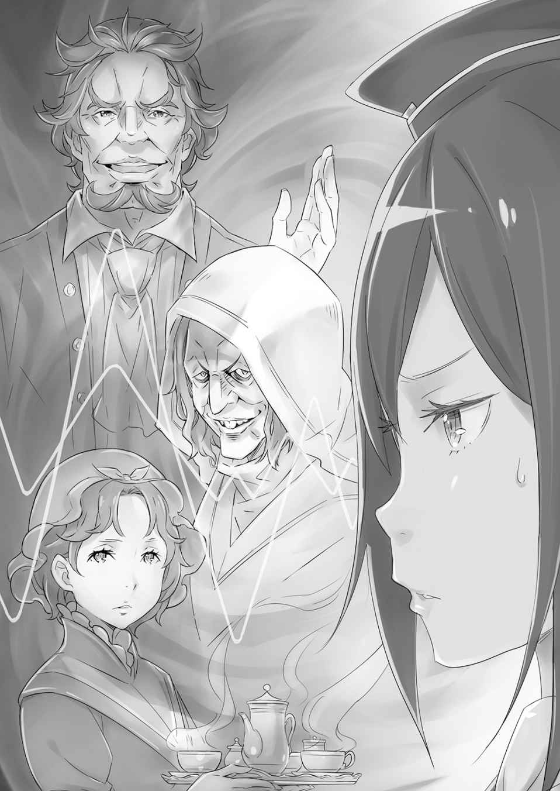
クルシュの感覚は最大の警鐘を鳴らしている。出された茶にも、警戒が先立った。
「もしも卿らが疑惑を晴らしたいのであれば、まずはマイルズの持ち込んだ商品とやらを見せてもらおう。その上で、この屋敷に人を入れて確認させる。何もなければ疑いをかけたことを謝罪し、何かしらの形で報いよう。だが......」
「──報いる？」
囁くようなその声は、数秒前までの無関心が嘘のように複雑な情念に塗れていた。
渇いているようで、湿っているようで、判然としないおぞましい感情の渦。
わかることがあるとすれば、それはひどく執着しているという事実だけで──。
「報いるとは結構！ 結構だ。その意思があるなら、確かにお互いに話が早い」
「──っ。卿は、なにをいっへ......」
低いビーンの声音に、嫌な怖気を感じるクルシュが反応するが、遅い。
とっさの反論の呂律が回らなくなり、途端にクルシュは眩暈に襲われた。手がソファの肘掛けを外れ、そのまま床に横倒しになる。目が回り、意識が酩酊した。
何かを盛られた、と気付いたときには遅い。だが、何も口にしていないはず──。
「ははっ、よくよく気取った奴ほどこの手に引っかかる。出された飲み物はありがたくいただくもんだぞ、お姫様。体に悪い空気を綺麗にしてくれるんだからなぁ？」
口調を荒々しく崩したマイルズが、倒れるクルシュを嘲るように手を叩く。彼はその顔をいやらしく歪めると、クルシュの頬にそっと手で触れた。
「ああ、強気な女が這いつくばるのはいい。うはは、これはいい土産ができた！」
奴隷商らしいマイルズの発言だが、その内容は正気の沙汰ではない。
クルシュの立場はルグニカ王国の公爵だ。まともな計画を練る頭があれば、奴隷にするなど自殺行為でしかない。つまり、目的は奴隷取り引き以外にあるはず。
「ご協力感謝しますよ、カルステン公爵。あなたなしで、私の目的は果たされない」
「......っ」
ビーンが屈み、クルシュの顔を見下ろした。能面のような顔つきは無感情を装っていたが、その瞳にだけは激情がある。それは憤怒と、どうしようもない哀切だ。
「なに、が......も、くてき......」
「驚いた。まだ喋られるのか。すぐにでも意識がなくなる薬のはずだが」
舌を噛み、必死で意識を繋ぐクルシュにビーンは感嘆する。
それからビーンはクルシュの髪を掴み、頭を持ち上げさせて、言った。
「決まっている。──奪われた我が子を取り戻す。私にはアレが必要なんだ」
６
「クルシュ様を一人でいかせた!? なんであんなところに......クルシュ様に何かあったら、どうやって責任取る気なんですか！」
悲鳴のような声が、カルステン家の執務室に響き渡る。
黒机に手をついて、声を上げて食ってかかるのはフェリスだ。近衛騎士の装いに身を包み、予定よりずっと早く戻った彼に屋敷は騒然としていた。
──よもや十日で騎士修行に音を上げたのか。
かつてない怒りの形相で廊下を歩くフェリスに、そんな冗談を口にできたものはいない。かくして屋敷の誰もに道を譲られ、フェリスは執務室で文官長に牙を剥いていた。
「ま、待て、フェリス。お前の懸念もわかる。わかるが、これはクルシュ様のご決断だ。それに何より、事情があって......」
「事情もなにも、そんなの私の立場を考えられてでしょ？ そんなのわかってる！ わかってるけど、それでも嫌なの！ クルシュ様が危険な目に遭うぐらいなら、私の心と体と名前が傷付いた方がずっとマシ！」
文官長の抗弁に声を高くしながらも、フェリスの思考はあくまで理性的だ。
王城でフーリエにクルシュの真意を聞かされたのだ。彼女の自分への配慮は理解している。だが、それでクルシュの身が危うくなるのなら本末転倒だ。
アーガイル家──あの場所は、人を人とも思わぬ悪意に染まる土地なのだから。
「なのにどうしてみんな、クルシュ様を一番に考えてくれないの......っ」
「落ち着くがよい、フェリス。それでは周りが怯えるだけだ。話し合いにならぬ」
「でも......！」
涙目になるフェリスの肩を抱いて、力強い声で呼びかけるのは黄金の青年だ。フェリスを止める青年の姿に、彼に詰め寄られていた文官長が息を詰まらせた。
「まさかフーリエ殿下まで、フェリスとご一緒されるとは......」
「口止めされていたにも拘わらず、フェリスに話してしまったのは余である故な。それにクルシュには前もって、風向きが悪くなれば余の判断で動くと伝えてある。根拠はないが......嫌な予感が消えぬのだ。胸がもやもやと渦巻く感じがしておってな」
フェリスに同行してきたフーリエが、自分の胸に手を当てながらそう答える。さすがにフーリエの意思となると、文官長もフェリスを叱りつけることはできない。
「実際に風がどう吹くにせよ、離れた王城では容易に対応できぬ。であれば、現場近くに足を運ぶのが道理。そして余の外出に近衛を随伴させるのも道理であるな」
「常識破りというか横紙破りというか......戻ってから団長にどのような叱責をされるかと考えると、そちらの方が憂鬱になりますね」
誇らしげに悪知恵を働かせたフーリエの横で、肩をすくめるのは巻き添えを食らったユリウスだ。しかし、彼は強引に連れ出されたこと自体には不満を言わず、
「ぜひ、殿下の方から寛大な処分をと口添えいただければ幸いです」
「そこは余のわがままであるからな、任せるがいい！ ま、まぁ......マーコスに余の言い訳が通じるかは怪しいが、そなたらだけが叱られるようなことにはなるまい。叱責されるのであれば、余も一緒にされるであろう」
「心強いお言葉です。──それで、カルステン公爵様の方ですが」
荒れた雰囲気に落ち着きが戻ると、それを見取ったユリウスが話を元に戻す。その誘導に文官長も仕方なしと肩を落とし、不安げなフェリスに言い聞かせる。
「確かに、アーガイル家の屋敷へはクルシュ様がお一人で視察に向かわれた。だが、屋敷の周辺はバダックが五十名ほど連れて囲っている。今のアーガイル家に私兵を雇うような余裕はない。仮に買った奴隷が武器を持っていたとしても、鎮圧は十分可能だ」
「でももし、クルシュ様の身柄が人質にでもされたら......」
「自棄になって、暴挙に出る可能性までは否定できないが、相手はクルシュ様だ。大兎すらも一閃された剣力、よもや遅れを取られまい。それに事前に打てる手も打ってある」
安心材料を並べ立て、どうにか文官長はフェリスをなだめようとする。
確かに条件だけ見れば、クルシュに不利な要素は見当たらない。それはアーガイル家の名前に心を乱される前、フェリスが信頼していたクルシュの周到さそのものだ。
尽きない不安は、フェリスの中にある生家への苦手意識が生み出す幻に過ぎないのか。
「......待て、フェリス。それでは余の、この不安に結論が出ぬ」
「殿下？」
心を落ち着かせ、クルシュを信じる決断を選びかけたフェリスをフーリエが呼んだ。
その別人のようなフーリエの瞳に、フェリスはまるで心が絡め取られるような錯覚を味わう。フーリエの雰囲気の変化は、この場にいる全員が揃って感じ取ったものだ。
息を呑む周囲を見渡し、フーリエは己の胸に手を当てながら続けた。
「何か、説明できぬ不安が渦巻いている。このままクルシュとそなたが離れておるのはよくない。いや、すぐにでも駆けつけねば......げほっ、ごほっ」
「殿下!?」
途切れ途切れに言いながら、フーリエが苦しげに顔を赤くして咳き込んだ。フェリスはとっさにその肩を支えて、彼の体内に満ちるマナの流れに意識を走らせる。
フェリスの治癒術師としての適性は、王立治療院で最高峰のものだと認められている。その気になれば、瀕死の外傷であっても快癒させることが可能な才能だ。
故にフェリスにとって、不調を訴える相手に触れて診察を行うのは癖のようなものだ。
「え......？」
そのフェリスの腕を、フーリエはとっさに遠ざけた。マナの流れを辿る指先が発動するより前に、汗を浮かせて喘ぐフーリエはサッと立ち上がってしまう。
「殿下、ご無事ですか!?」
「大事ない。驚かせてすまぬな。今、フェリスのおかげでだいぶ楽になった故」
フーリエは心配するユリウスにそう言って、何事もないかのように息を吐く。その態度に周囲は安堵するが、フェリスだけは驚きから逃れられない。
「あの、殿下、フェリちゃ......私はまだ、何も......」
大丈夫だと主張し、汗を拭うフーリエの姿にフェリスの胸を不安が突く。だが、そのか細い躊躇いの声は、執務室の外から飛び込んできた急報に散らされた。
「大変です！ クルシュ様がアーガイル家から戻らないまま、屋敷の周囲で交戦が始まりました！ 相手は......し、屍が動いていると！」
７
──クルシュが意識を取り戻したとき、最初に感じたのは強い異臭だった。
「ん......」
渇いた喉で呻き、床に倒れていた上体を起こす。と、途端に鼻腔に流れ込むのは痛みを伴うほどの激しい悪臭だ。垂れ流された小動物の糞尿や、おぞましい腐敗臭が漂うのを嗅ぎ取り、クルシュは自分が真っ当な場所に置かれていないことを理解した。
どうにか体は起こせたが、床に着いた両腕には手枷が嵌められている。それは両足も同じことで、おまけに視界も目隠しで塞がれた状態だ。目が潰されずに済んだことは不幸中の幸いというべきだが、それもクルシュへの配慮ではないだろう。
「目立った傷がないのは、交渉の余地を残すため......か？」
意識を失う直前のことは覚えている。ビーンとマイルズの二人に、毒物を利用して昏睡させられたのだ。飲み物に薬を混ぜるやり口──ただし、解毒薬を仕込む手法だ。その上で室内に毒を散布し、警戒して茶に口を付けなかったクルシュだけが昏倒した。
ただそのやり方も含めて、綱渡りが多すぎるのが気にかかる。
「私が不用心に茶を飲んでいれば、成立しない手口でしかない」
「......そのときには、もっと世にも恐ろしいものをお目にかけるつもりでしたよ」
返事を期待していない呟きに、しかし答えはあった。忘れようのないその声は、他でもないビーンのものだ。近くに人の気配はあったが、まさか主犯の彼とは思わなかった。
クルシュはその驚きを表情に出さず、声の方向へ向けて不敵に笑う。
「つくづく私を驚かせる男だ。そこはフェリックスとの血縁を感じさせられる」
「アレともっとも身近なあなたに、そう言っていただけるのはありがたい。私とアレの間に血の縁が、血統が継がれていることに確信が持てますからな」
「十年近く前に手放した息子に、ずいぶんと執着しているようだな」
見えないビーンの口調は落ち着いたものだが、それがかえって彼の狂気を感じさせる。あからさまに声を荒げられるより、危険な兆候だとクルシュは考えていた。
「言ったでしょう？ アレが必要なのだと。あなたにはそのための餌になっていただく」
「確かに私の危機と知ればフェリックスは飛びつくだろうが......それ以前の問題があろう。アーガイル家への訪問は当然、私の臣下も知っている。遠からず、私が帰らないことを不審に思った部下が雪崩れ込んでくるぞ」
公爵家と爵位無しの傍系貴族。兵力差は歴然だし、勝算などあるはずもない。
無論、逃亡も不可能だ。彼らがその気になれば、手中にあるクルシュの首ぐらいは取れるかもしれないが、それも自棄になった自殺行為に過ぎない。
「大人しく投降しろとは言わない。だが、何を企んでいる？ 私にはこの状況を作り出した卿らの判断が不可解でならない」
「囚われの身で口の減らない御方だ。さすが、公爵家当主ともなると精神構造からして凡人とは異なる。......その方がこちらとしても心が痛まず助かりますが」
「答える気はないというわけだな」
クルシュの質問をことごとく無視し、ビーンの靴音が遠ざかる。水っぽい、粘着質なものが靴裏を汚す音がした。どうやら不衛生の原因は悪臭以外にもありそうだ。
「ああ、そうだ」
そして去り際、ビーンが思い出したようにクルシュに声をかけてきた。
「ここは昔、フェリックスが過ごしていた場所ですよ。あなたがアレを引っ張り出し、連れ去った因縁の部屋だ。ぜひ、アレと同じ体験をご堪能ください」
「......そうか。余計な気遣いだが、せいぜい有益な経験とさせてもらおう」
皮肉で返されて、ビーンが苛立ったような舌打ちを残す。今度こそ靴音も聞こえなくなり、視界の閉ざされたクルシュだけが部屋に取り残された。
「フェリスのいた部屋、か......」
独り言ち、クルシュはフェリスとの出会いを回想する。ビーンの発言が事実なら、フェリスの監禁されていた部屋は屋敷の地下だったはずだ。
手足の枷は金属製で、簡単に外れそうにない。ビーンの態度からして、クルシュの連れてきた私兵には対策があると見える。なるほど、絶体絶命だが──それだけのことだ。
「少々の予定外はあったが......詰められたと投げ出すにはいささか早いな」
さすがに毒物で昏倒させられ、囚われの身になるのは予想外だった。が、予定より深部に潜り込めたなら、それはそれでやりようがある。
唯一、心残りがあるとすれば──。
「殿下にもフェリスにも、心配をかけずに切り抜けるというのは虫が良すぎたか」
事の次第が伝われば、二人をひどく不安がらせてしまうに違いない。
自分の身の安全よりも、その予感の方がよほどクルシュの胸を苛んでいた。
８
『不死王の秘蹟』と呼ばれる秘法がある。
かつて世界を震撼させた『魔女』が生み出し、遺失したとされる超魔法の一つだ。
その効果は端的に、『屍を意のままに操る』というものである。使用者が魔女本人であれば、それこそ屍は生前の姿そのままに蘇ったとされるが、それも伝承の域を出ない。
現在では必要な術式の大部分が失伝し、『屍を動かす』以外の効果は再現不可能。その低次元の再現にしても、この魔法への先天的な適性がなければ実現性は無に等しい。
事実、その限られた適性の持ち主など、百年単位で確認されていないほどに。
「それをよくもまあ、ここまで再現できたもんだよ」
腐臭を漂わせ、ふらふら歩き回る死体を前にマイルズは楽しげに肩をすくめる。
陰湿な笑みを浮かべる彼には、歩く死体への嫌悪感は微塵もない。死体など見慣れている。普段は寝転がっているものが、今はたまたま歩いているだけに過ぎないのだ。
「物騒な名前の秘術にしちゃ、便利な力だよ。死体も労働力にできるってのに、ほとんど忘れ去られちまってるのが信じられんね」
「死者に鞭打ってまで働かせようなどと、普通の人間は考えないということだ」
「おお、旦那かい。おかえりなすって」
死者の群れの中から、死者も同然の面構えの生者を出迎える。秘術で屍を操る生きた死者と、その死者に与する悪人が自分。いっそ清々しいほど業の深い場所だ。
「それで揺らぐ良識なんぞとうにないがね。で、地下室のお姫様はどうだった？」
「毅然としてらしたよ。さすが、生まれながらの貴族は違うというわけだ」
「可愛げのねえ話だ。その方が調教し甲斐があるがね。イジメちゃいないだろうな？」
「そんな趣味はない。あれはあくまで、息子を呼び寄せるための餌だ」
確かめる必要はなかったが、一応の問いかけにビーンは無関心な声で答えた。
「外の様子は？」
「大わらわだよ。屍兵を見て、公爵様ご自慢の私兵もお困りみたいだな。あの腐った面構えにビビらないなら、そっちの方が人間味に欠けちゃいるがね」
屋敷の二階からは、騒然となる外周が見渡せる。屋敷の周囲を囲んでいたクルシュの私兵たちは、文字通り死に物狂いの屍兵に苦戦中だ。殺しても殺しても立ち上がってくる死体の群れには、いかに歴戦の勇士であっても苦戦は免れない。
「こちらの要求は渡ったはずだが、その動きは？ 息子は見つかるか？」
「顔もわからんオレに聞かれても困るね。ひとまず、地竜が出るのは見えたから本丸に伝わったとは思うが......獣人はちっと見当たらんよ」
「......ケダモノと一緒にするな。アレは私の、血を分けた息子だ」
禁句を口にするマイルズに、ビーンの視線が鋭くなる。狂気のにじみ出た彼の態度に両手を挙げ、マイルズはすごすごと引き下がった。
息子、息子と繰り返し口にするが、そこには執拗な執着心が感じられる。愛情から呼び戻すわけではないのだから当然だ。さすがのマイルズも、その息子には同情する。
父親の妄執に人生を振り回されるなど、想像しただけで悪夢そのものだ。
「ま、だからといって手をゆるめるのも弱めるのもありえやしないがね」
ぎらつく目で眼下を見下ろし、息子の帰宅を待ちわびるビーン。
その背後でマイルズは、屍の汚していないソファに腰を下ろし、機を待つ。
腐臭と悪意に満ちる屋敷の中で、状況が己好みに熟すのを、ただジッと──。
９
アーガイル家にフェリスたちが駆けつけたとき、すでにそこは戦場と化していた。
竜車を全力で走らせて数時間、到着した戦場は地獄の様相を呈している。
「これが、屍兵......」
呟くフェリスの視線の先で、ふらつく男の頭部が槍の穂先に貫かれた。飛び散るのは赤い鮮血──ではなく、黄色がかった腐汁だ。それをこぼし、男は無防備に倒れ込む。
だが、明らかに致命傷を受けたはずの男は、体をばたつかせて槍を抜くと、割れた頭など気にした風もなく、両腕を伸ばして目前の兵士に取りつこうとしていた。
「死者を死者とも思わぬ邪法、『不死王の秘蹟』とはこういうことか」
同じものを見たユリウスが、その惨状に怒りを堪える声をこぼした。
こう見えて、静かな激情家であるユリウスだ。内心、命を冒涜された被害者に義憤が抑えきれないでいる。剣の柄に手を触れて、今にも駆け出してしまいそうだ。
「──ゆかんぞ、ユリウス。先走ることは余が許さぬ」
そのユリウスを呼び止めたのは、竜車の中で戦況を眺めるフーリエだった。フーリエの厳しい声音に、ユリウスは自分の焦りを恥じるように肩の力を抜く。
「申し訳ありません。あまりに卑劣な光景に、気が逸りました」
「そなたの気持ちは余にもわかる。これは......看過できる状況ではない。だが、判断を誤れば無為な犠牲が生まれる。それは避けねばならぬのだ」
ユリウスに言い聞かせ、フーリエの視線が今度はフェリスを向いた。その視線の熱の強さに、フェリスは少しだけたじろいでしまう。
今もフーリエは、王城や屋敷で見せた鋭い覇気を保ったままだ。これまでにも何度かこんなことはあったが、今は一段と凄味がある。
良い意味で王族らしさのないフーリエに、王族らしさを確かに見るほどに。
「バダックの話では、殲滅するための戦力確保に三時間......その間に最悪の状況が訪れぬように、時間を稼ぐ必要がある。無論、無辜の民草に被害が広まるのも防いだ上でだ。二人とも、わかっておるな？」
ぐるりと周りを見渡しながら、そう告げるフーリエにフェリスたちは頷いた。
屍兵の配置は、アーガイル家を囲うクルシュの私兵たちに対応する形だ。その人数はざっと二百近くに上り、兵力差はこちらの四倍ほどもある。
ただし屍兵は死に難い特性の代わりに、思考力と戦闘技術が死んでいる。数の不利にも拘わらず、囲みが突破されていないことがその証拠だ。
現在、クルシュに同行した武官長のバダックは、この数の不利を覆すために戦力を集めている。あとは数が揃えば、屍兵を押し潰すことは容易い。
「でも、それだとクルシュ様のお命が......」
「囚われておるクルシュを助け出さねば、数が集まってもどうにもならぬ。そして、主犯のビーン・アーガイルは、フェリックス・アーガイルの身柄を要求していると」
屍兵出現の急報と入れ替わりに、アーガイル家にクルシュが捕えられた報告は届けられた。ビーン・アーガイルの署名が入った書状には、クルシュの身の安全の保証と引き換えに、フェリスをアーガイル家へ寄越すように要求されていた。
当然、この要求を鵜呑みにするような馬鹿な真似はできないが。
「要求を無下にするわけにもいかない。カルステン公爵の姿が確認できない以上、身の安全に最大限配慮するなら、交渉のテーブルに着く必要がある」
「あっちが用意した都合のいいテーブルって、最悪の条件だけどネ......」
舌打ちを隠さず、フェリスは遠目に見えるアーガイル邸を睨みつける。
懐かしい生家との再会だが、フェリスにとっては何の感慨もない。そもそも、こうして実家を遠目に見たのも初めての経験だ。フェリスにとってあの屋敷は、地下室の暗闇以外に思い出の存在しない場所なのだから。
「それで、どうする？ 書状には、屍兵はフェリスだけは例外的に通すと書かれていたが......信じる価値はあるかい？」
近付くものに容赦なく、腐り落ちた目を向けて飛びついてくる屍兵だ。同士討ちこそしていないが、生者と死者以外を見極める能があるようには見えない。それでも、
「いくよ。私がいかなきゃ、クルシュ様が危ないんだもの」
躊躇う理由にはならない。フェリスにとって、クルシュの命は自分よりも、あるいはこの世界と比べても重い。何と引き換えにしても惜しくないもののために、惜しむような命は持ち合わせていないのだ。
「フェリス」
「止めても無駄ですよ、殿下。そもそも、殿下が私を連れてきたんですから」
「止めはせぬ。余が止めてもそなたはゆくであろう。そなたはクルシュの騎士なのだからな。余はそなたがクルシュを守ることを疑っておらん」
歩き出そうとするフェリスに、フーリエが躊躇のない声でそう言ってくれる。
そのフーリエの言葉こそが、フェリスにとっては万軍を得たに等しい活力だ。フェリスが騎士に拘り、今の自分がある一端は彼の言葉のおかげなのだから。
その誇らしさに支配されるフェリスに、さらにフーリエは続けた。
「だがそれは、そなたの命と引き換えにせよという意味ではない。そなたもクルシュも無事に戻れ。それが余の命である。近衛であれば、わかっておるな？」
「────」
「必ず戻れ。余は、このようなことで友を失いたくはない」
胸につかえる、この感情の名前がフェリスにはわからない。
フーリエは友と、フェリスに何度も言ってくれる。言われるたびに、フェリスは最初と同じだけの衝撃に呑まれて、言葉がうまく出なくなるのだ。
だからいつものように、考える必要のない言葉で応じる。
「はい！」
そして、見慣れたふてぶてしい友人の顔に見送られて、フェリスは進み出す。
正面には忌まわしの実家、そこで大切な主と、決別した家族が待っているのだ。
「口惜しい、という顔をしておるな、ユリウス」
遠ざかるフェリスの背を見届けながら、拳を固めるユリウスをフーリエが呼んだ。
届けられた書状にあった内容は真実だったらしく、屋敷へ向かうフェリスを屍兵は何事もなく見逃している。他の兵士には飛びつくため、フェリスだけの特別扱いだ。
その結果に安堵する一方で、ユリウスは自らの力不足に落胆を覚えずにいられない。
「こうして同行していながら、何もできずにいるのは不甲斐ない限りです。友人の窮地に役立たずして、私は何のための騎士なのかと」
「そう急くな。そなたの力が必要になる機会は、この先に何度も訪れる。今ひと時のもどかしさは、そなたの力不足を示すものではない」
「は。ありがたく」
思わぬフーリエの言葉に、ユリウスは驚きも忘れてただただ敬服した。
第四王子フーリエ・ルグニカの評判は、お世辞にも良いものとはいえない。これは彼に限ったことではなく、人の好いことで知られるこの血族は、為政者に向いていないのだ。故にルグニカ王国の政治は、上級貴族と賢人会が仕切っているのが実情である。
国民が例外なくそう信じる中、ユリウスもそれを鵜呑みにしていた点は否定できない。だが、今のフーリエの風格が、本当に人が好いだけの人物のものだろうか。
ユリウスには到底、王城で飛び交う流言飛語が信じられなくなっていた。
「話に聞いていたのと、ずいぶん余が違って見える......か？」
「──っ」
「よいよい、驚くことはない。余とて、王城で自分がどう噂されているかぐらい知らぬわけではない。まぁ、普段はあまり気付かぬのだが......今日はやけに頭が冴える。真摯に国を想う臣下、その心の表層をすくい取る程度には目端も利くというものよ」
自分の浅慮が見抜かれた気がして、ユリウスはますます畏敬を深めた。竜車の中で長々と息を吐く賢人は、噂だけで測れるような器ではない。
ただ、賢人は全てを見通すような眼差しを宿したまま、人懐っこい顔で笑いもする。
「フェリスが生家との決着に臨むのであれば、足りぬ分を補ってこそ友の役目よ」
「殿下にとってフェリスは友......ですか？」
「無論だ。そなたもフェリスを友とするのであれば、余と立場は同じであろう」
恐れ多い同調を求めて、それからフーリエは考え込む顔で屋敷を眺めた。その紅の瞳は屋敷の全景と、屍兵をつぶさに観察している。
「クルシュが上階におればフェリスがどうにかしようが......そうでない場合、そなたの働きに期待せねばなるまい。ユリウス、そう心得て機を待つがいい」
フーリエの言葉を恭しく受けて、ユリウスは自らの驕りを自覚した。
近頃はフェリスのことといい、無意識を正される機会が多い。何事にも何者にも、他者を軽んじる資格も、他者に軽んじられる理由もないはずであるのに。
「私もまだまだ、思慮が足りない」
剣の柄に手を触れながら、ユリウスは抜剣が求められる機にジッと備える。
近衛騎士として、フーリエを任されているのは己なのだから。
この戦場における近衛騎士の真価は、ユリウスにこそ試されているのだ。
10
「お帰りなさいませ、フェリックス様」
出迎えに顔を出した女給の言葉に、フェリスは場違いな感傷を覚えていた。
中年の女性の顔は記憶にあるようなないような、曖昧だ。ただ、向こうはフェリスを見知っている様子だ。何か思い出すように、その目を細めているのが印象的だった。
だからといって、アーガイルに与する相手に好感を抱けるはずもない。
「挨拶なんてどうでもいいよ。それより、クルシュ様はどちらに？」
「──。旦那様がお待ちですので、ご案内いたします」
一瞬、何かを堪えるような反応をして女給が歩き出す。質問を聞き流されたが、屋敷に入った時点で誘いに乗ったも同然だ。仕方なしにその背中に続いて歩き出した。
薄暗い廊下と、漂う腐臭。何かを引きずるような音を立てながら、屋敷の中にも屍兵は配置されている。女給もフェリスも攻撃の対象ではないからか、することのない屍兵は無防備に立ち尽くしたり、壁際に座り込んだりと生物感がまるでなかった。
「懐かしく感じておいでですか？」
と、そうしてきょろきょろと周りを見回すフェリスに、女給がそう尋ねてくる。視線の意味を勘違いされたらしいが、フェリスは皮肉げに「別に」と肩をすくめた。
「懐かしさもなにも、屋敷の中なんてほとんど覚えてないから。もし覚えてても、そのときは死体が歩き回ってたはずもないしネ」
言いながら、フェリスは廊下に佇む無反応の屍兵の肩を小突いてみる。何をされても無反応かと思いきや、触れられたと気付けば視線を向けてくる程度の反応はあった。
「よく、このようなものたちに触れますね」
「死体に触るぐらい、別に珍しいことじゃないし。傷だらけの人だって大勢見た。ね、あんまり世間話するつもりなんてないんだけど」
「────」
無視するのもなんなので受け答えしているが、会話したい気分ではない。この屋敷に入ったときから、胃の上あたりで重くうねるような感覚がある。これが精神的な負担からくるものだと、フェリスはしっかり理解していた。
やっぱり自分は、この場所が嫌いで嫌いで仕方がないのだ。
「旦那様、お連れいたしました」
会話を拒否された女給は無言のまま、フェリスを屋敷二階の応接間へ案内した。扉をノックして女給が呼ぶと、中から男の低い声で返事がある。
聞き覚えのない声──なのに、ゾッと背筋に寒気が走った。
肉体でも、記憶でもなく、魂がそれを覚えていると言わんばかりに。
「──よく戻ったな、フェリックス」
入室したフェリスの前に立ったのは、ヒゲを蓄えた大柄な男だった。上背のある男の顔を見て、ようやくチラチラと記憶に該当するイメージが浮かぶ。
一応、自分と同じ栗色の髪に黄色の瞳、親子の共通点はそのぐらいだが、九年前はもっともっと見上げるばかりだった顔と、確かに同じものに思えてきた。
「ああ、そういえばこういう顔だった気がする」
実父ビーン・アーガイルの顔が、やっと記憶と照合できた気がした。
実の親子の再会にしては、無感動なフェリスの呟き。それを聞きつけた女給が眉を寄せるが、その反応はビーンの大げさなものの前に吹き散らされる。
ビーンはその大きな掌でフェリスの肩を掴み、
「元気でいたかと聞きたいところだが......なんだ、その格好は。貧相な体つきに、どうして女物の服を着ている。まさかカルステン公爵は、倒錯した性癖の持ち主だったか」
「────」
「顔色は悪くないが、腕も足もこんなに細い......なんと、なんと惨いことを」
苦しげに顔を歪めて、ビーンは成長したフェリスに悲嘆の声をかけ続ける。
それをフェリスは無表情で、ひたすらに冷めた目で見つめていた。
──この格好はクルシュとの絆だし、体つきが貧相なのは、この屋敷で十年近く虐待を受け続けたからだ。その惨さの責任が、どこにあると思っているのか。
「だがいい！ とにかくいい！ よく帰った。父はそれだけで嬉しいぞ」
フェリスの冷めた目に気付かず、ビーンは破顔して抱きしめようとしてくる。その腕をするりと避けて、つんのめるビーンの横を抜けた。
それから室内を見回し、クルシュの姿がないことを確認してため息をこぼす。
「御託はどうでもいいから、クルシュ様を返して。それで大人しく、クルシュ様の沙汰を受けて屋敷ごと消えてくれるのが一番いい」
「開口一番、それが父親に言うことか？ 勘違いするなよ、フェリックス。私はお前の無事を喜んでいるが、無礼を許すほど寛大なわけではない。過去のことを盾にして、私と対等なつもりでいるのならそれは大間違いだぞ」
「──っ！ そんなつもり、あるわけないでしょう!?」
売り言葉に買い言葉。苛立つビーンの発言に、フェリスの方も激発する。
この屋敷でフェリスが受けた仕打ちは、開き直って利用できるほど軽々しくはない。
──亜人の耳を持って生まれたフェリスは、生後すぐに屋敷の地下室に監禁された。
フェリスの父母はどちらも純粋な人間族。その両親から獣の耳が生えたフェリスが生まれるはずがなく、母の密通による不義の子とされたからだ。
暗がりの地下室に閉じ込められたフェリスは、最低限の教育だけ受けて放置された。幼児期を過ぎれば扱いはますますひどくなり、五歳を過ぎた頃からは地下室のさらに狭い部屋の中に押し込まれ、そこで寝起きするだけの五年間を過ごした。
生きている意味も、生きている理由も、何もかもわからない暗闇の人生。
そんな場所からフェリスを連れ出してくれたのが、幼年期から変わらず凛々しくあったクルシュだ。彼女の手で陽の下へ連れ出され、フェリスは人間になった。
フェリスはクルシュのおかげで、初めて人間になれたのだ。
「クルシュ様がいなかったら、今の私はどこにもいない！ だから今すぐ、クルシュ様を私に返せ！ 何が勘違い！ 何が父親!? 冗談じゃない！」
フェリスは愛らしい顔を怒りの形相に染めて、牙を剥き出しながら地団太を踏む。自分の細い腕を掴んで、ビーンに手首を見せつけた。
「この細い腕を見ろ！ 剣も握れない！ 盾も持てない！ あの方の騎士として、何一つ武器になれない情けない腕を！ 足もそうだ！ 速く走れない、高く跳べない......なんにもできやしない！ あの方を守るための全部、私には一個も届かない！」
クルシュに屋敷から連れ出されて、従者としての役目を与えられて、フェリスは彼女の力になるために努力した。剣を振り、騎士の役目を背負おうと頑張った。
だがその努力を実らせるための体は、フェリスには与えられていなかった。
「お前たちが奪ったんだ！ 奪って、空っぽにして......そんな私に、クルシュ様が与えてくださったのがこの生き方で、この歩き方だ！」
何もなかった自分に、クルシュが求めてくれたのが今のフェリスの在り方だ。
惨いなどと揶揄され、倒錯的な趣味だなどと貶められても、クルシュが願ってくれたことただそれだけがフェリスにとっての価値そのものだった。
それを他でもない、ここで否定などされてなるものか。
「あれだけ勝手を押し付けて、なのにまだ私から奪おうとするのか！ また私から、私の命よりも大事なものを奪うのか！ ふざけるな......ふざけるなぁ!!」
可能ならこの場で、父を名乗る悪魔を八つ裂きにしてやりたい。できるのならば魔法で焼き尽くして、灰を大瀑布に投げ込んでやりたい。
そのどちらを実行する力も、フェリスの両手にはないのだ。
「────」
激昂し、感情のままに叫ぶフェリスを、ビーンはただ黙って見ている。
感情が抜け落ちた、能面のようなその表情がフェリスの激情に水を浴びせた。どこを見ているのかもわからない、非人間的な目つきに。
「......言いたいことは終わりか？」
「は、ぁ？」
「言いたいことがあるなら、好きなだけ言うといい。私はお前の父親だ。子どもの癇癪ぐらい大目に見よう。何年も離れ離れ......積もる話もあるだろうからな」
「────」
絶句、した。
今のフェリスの心からの訴えを、ただの子どもの癇癪と切り捨てるビーンの姿勢に。
そして同時に理解する。理解、してしまった。
この男と対話を求めたところで、得られるものは何もない。そもそもそんなこと、最初からわかっていたはずだった。
──この家に、フェリスが残してきたものなど何もないことぐらい。
ふ、と息が抜ける。こんなものか、という失望でも落胆でもないものが胸を支配した。
「その、父親って繰り返すのやめてくれない？ 反吐が出るから」
「反抗的な態度も許そう。父子の再会に無粋はいらないからな」
人の話を聞くつもりもない。会話した記憶もなかったが、自分の父親はこういう人物だったのかと、フェリスは笑ってしまいそうになった。
フェリスにとって一番身近な父子とは、想像を絶するほど格差がある。
「それとも、反抗的なのは一人前扱いしてほしいからか？ だとしたら、話に乗ってやらないでもない。互いに対等な大人なら、また別の話し合いの仕方がある」
「......たとえば？」
「要求を通すための、互いの意見のすり合わせだよ」
もったいぶった言い回しで、ビーンは自分のヒゲに触りながら応接ソファの向こう側へ回り込む。そのソファの背もたれに手を乗せ、前のめりになってフェリスを見た。
「私はお前に用件があって、こうして呼び寄せたんだ」
「普通に手紙出せばよかったのにね。破って捨てただろうけど」
「回りくどい手段だったのは認めよう。だが、必要なことだったのだよ。私にはこの『不死王の秘蹟』を試す経験と、お前の力が！」
「そういうことか......」
唾を飛ばすビーンの剣幕に、フェリスはようやく自分が呼ばれた理由を悟った。
つまるところ、ビーンの目的はフェリスの身柄そのものではなく、
「私の、魔法の才能が必要だったってことだ」
「そうだとも。だが、気落ちすることはない。お前に眠っていた水魔法の適性......それこそが、私とお前の血縁である何よりの証拠だ。アーガイル家は代々、水魔法に優れた血を繋いできた......不義の子に、その才能が発露するはずがないからな！」
「そ、よかったネ。おめでとーございます」
気のない拍手をして、フェリスは興奮しているビーンに適当な返事をする。今さら血縁の証明などされても、心がこれだけ離れたあとでは何の意味もない。
しかしビーンは、それが何よりも重要なのだとばかりにフェリスに詰め寄って、
「ここからが、私とお前の大人同士の対等な話し合いだ。相手に何かを求めるなら、相応の対価を用意して然るべきだ。そうだな？」
「────」
「だが、何も知らないお前のことだ。対価を用意することなどできるはずもない。だからお前に代わり、私の方で対価は用意した。お前が私の望みを叶えてくれるなら、お前を連れ去ったあの公爵を返してやろう。それが条件だ」
「支離滅裂だって、自分で思わないの？」
「理屈は通っている。何もおかしなところはないな」
暴君の筋を通すために、ビーンはこんな馬鹿な真似をしたということか。フェリスに言うことを聞かせるためではなく、フェリスと取り引きするためにクルシュの身柄を。
「馬鹿馬鹿しすぎて頭にくると、一周回って冷静になるんだね......それで、私に何をさせたいの？ お父様とでも呼んでほしいとか？」
「簡単な話だ。お前の才能があれば、とんでもなく容易いことだよ。──おい！」
皮肉にも気付かず、したり顔のビーンが声を荒げる。呼ばれたのは、部屋の隅に黙って控えていた女給だ。彼女はビーンの呼び声に頷くと、
「お連れしますか？ それともご案内しますか？」
「そうだな......よし、案内しよう。フェリックスも、久しぶりに私と一緒に屋敷を歩いて回りたいだろう。そうだろう？」
「ははは、面白いね」
最高のジョークだ。父親と屋敷を歩いたことなど、フェリスには一度もない。
事ここに至り、フェリスはビーンの精神が異常をきたしていると理解していた。
会話がまともに成立しないのも道理だ。逆らってもおそらく、理不尽に押し潰される。逆らわずに話を聞き、機を見るのが最善だろう。
ただこうなると、クルシュの安否だけが本当に気掛かりだ。今のビーンの基準で身柄を保証されても、正直なところ信憑性がない。
「......お連れ様は、少なくとも危害は加えられておりません」
「え？」
ふとフェリスに耳打ちされたのは、今しがた抱いた懸念への返事だった。そう言った女給はフェリスの声に取り合わず、先導するために部屋を出てしまう。その背を追うようにビーンに急かされ、応接間を出たフェリスは不可解さに眉を寄せた。
前を行く女給はビーンの協力者のはずだ。フェリスに肩入れする理由はない。が、精神に異常をきたしている風でもない。そしてこれが一番奇妙な感覚なのだが、
──不思議と、今の女給の言葉に安堵感を覚えている自分がいるのだ。
「......変なの」
苦虫を噛み潰したような気分で、フェリスはその違和感を棚上げにする。隣ではどこか上機嫌のビーンが何事か話しているが、適当に相槌を打って全部聞き流した。
やがてその奇妙な三人は、屋敷の三階最奥の部屋に辿り着く。
「ここがどこかわかるか？」
扉の前に立って、ビーンがそう尋ねてくる。当然、記憶にその部屋はないが、貴族の屋敷の最上階で、一番奥の部屋だ。ぼんやりと用途は想像がつく。
「夫婦の寝室？」
「ませた子だ。だが、正解だよ」
嬉しくもない称賛を浴びせて、ビーンが寝室の扉を押し開いた。途端、むあっと溢れ出してくるのは濃密な死臭。屋敷の中には似たような腐臭が満ちていたが、濃度がこれまでと段違いだ。出来立ての死体とは、死臭の深度が違う。
そしてその死臭の原因が、寝室に安置された寝台の上に寝転がっていた。
「──私の妻だ。わかるか、フェリックス」
寝台の上に寝かされているのは、若々しさを保った女性の亡骸だった。亜麻色の髪に、整えられた死相を死に化粧が飾っている。寝衣にしては華美に過ぎるドレスをまとい、女性は覚めない永久の眠りについていた。
ビーンが妻と紹介したのだ。それはつまり、フェリスにとって──、
「お母様......なの？」
亡骸を母と呼ぶフェリスの胸に、誤魔化し切れない疼きが走っていった。
11
「私の魔法の才では、『不死王の秘蹟』は不完全にしか発動しない。それでは動く屍を作り出すのがせいぜいだ。しかし、フェリックス、お前は違う！」
母の亡骸を前に立ち尽くすフェリスに、ビーンは縋るような声で叫んだ。彼は寝台に駆け寄ると、眠る妻の頬にそっと触れた。
「お前には傑出した才能がある。瀕死に陥った少女を、詠唱すら必要とせずに癒すだけの力がある！ それだけの才能があれば、『不死王の秘蹟』を完全に再現できる！ お前の母を、蘇らせることができるはずだ！」
血走った目で言い募るビーンに、フェリスはこの男の本当の願いを思い知った。
ビーンは『不死王の秘蹟』で、妻の復活を望んでいたのだ。そのために死体を集め、邪法の実用に試験を繰り返した。死体集めに利用したのはおそらく奴隷商だ。その実験の結果が外を埋め尽くす屍兵の群れ──どれだけ、死者の肉体を冒涜したのか。
それだけやって、求めた結果が得られなかったビーンは自らの力不足を認めた。そして思い出したのだ。同じ血統に連なり、自分以上の才能を持つ術師の存在を。
「お前の才能は本物だ！ お前にはそれだけの能力がある。死んだ妻を蘇らせる力がお前にはあるんだ。私に......私にだけはわかる！ 私がお前の実の父親で、誰よりもお前の才能の素晴らしさを理解しているからだ！」
自分の頬に爪を立てて、ビーンは涙のように血を流す。即座に淡い光が傷口を包み、ビーンの傷は癒された。自傷し、癒す。世界一不毛な治癒魔法の使い方だ。
「この程度では届かない。だが、お前は違う。お前は天才だ！ 子の才能を喜ばない親はいない。お前は、最高の息子だ！」
我が子の才能に期待を寄せ、歓喜し、諸手を挙げて称賛するビーン。その姿にフェリスは眩暈を覚えて、どうしようもない吐き気すら感じた。
これほどか。これほどなのか。これほど自分の家族は、醜悪に塗れているのか。
「これを見ろ！ 我が家に伝わってきた『不死王の秘蹟』の術書だ。不完全な記述ではあるが、私で実用は可能だった。お前ならば、欠落した式を埋めて再現に至れるはずだ！」
懐を探り、ビーンはボロボロになった術書を見せる。
何度も何度も、手垢どころか血に塗れるほど読み込んだのだろう。少しの衝撃でバラバラになってしまいそうなほど、本は酷使された有様だった。
「さあ、妻を......お前の母親を蘇らせろ！ それができれば、お前にお前の主人を返してやろう。それがお前を一人前と認めた、対等な取り引きの条件だ！」
術書を胸に押し付けられて、フェリスはよろけながらそれを受け取る。表紙を乾いた血で汚す術書は、まるで死者の魂を吸ったかのように重々しく感じられた。
死者蘇生を可能とする『不死王の秘蹟』。その力に、治癒術師の端くれであるフェリスも興味がないといえば嘘になる。だが、今は治癒術師としての意識よりも、フェリスの正気と人間性がこの提案を受け入れ難い。
しかし、術書に目を通し、秘術を実行しなければクルシュの命が危ない。それに目の前で横たわる母──ビーンと同様に家族の情などないが、それでも母の亡骸との対面はフェリスにも応えた。蘇生する術があるなら、蘇らせてもと思うほどに。
「────」
提案を呑む。その決断は先送りにして、フェリスは受け取った術書のページをめくる。記述が所々怪しく、いくつかのページが手垢で張り付く。それらに慎重に対処しながら、フェリスは自分の血統が継いできた秘術の術式を頭に叩き込んでいった。
そして、
「......今すぐに、この女の人に『不死王の秘蹟』を使ったらいいの？」
あえて母と呼ばず、他人のように扱うことで平静を保つ。フェリスの言葉にビーンは顔を明るくし、「ああ、ああ！」と何度も頷いた。
「そうだ、今すぐだ。妻を蘇らせろ。それで家族三人、再会を祝福しよう！」
ビーンのその妄言には取り合わず、フェリスは寝台の亡骸に歩み寄った。眠るような死相の女性に手を伸ばし、生命活動が終わって久しい体にマナの診断を走らせる。
「亡くなったのはいつ？ ずいぶん、ここに寝かせてあるみたいだけど」
「二年以上前だ。体の腐敗を防ぐために、定期的に魔処置しているが......死臭だけはどうにもできない。だが、蘇ってくれれば何の問題もない。あちこち腐り落ちた他の死体とは話が違う。肉体は死した当時、そのままだ」
二年前なら、フェリスにとって思い出深いクルシュの誕生会があった年だ。フェリスにとって人生の転機でもあった年は、両親にとっても転機になっていたらしい。
亡骸の隅々までマナを走らせ、フェリスはビーンの言葉が真実だと確かめた。母の肉体は生命活動の停止を除けば、死者とは思えないほど状態を保っている。
それこそ、死した瞬間のままに──。
「フェリックス。話したいのは山々だが今は堪えろ。今は目前のことに集中すべきだ。お前も主が大事だろう？ そんな移り気ではいけない。でなければ......」
「もう一個だけ、聞いてもいい？」
死した母の前髪に触れて、フェリスはビーンの言葉に割り込んだ。そのまま口ごもるビーンに振り返り、フェリスは透徹した目つきで言った。
「──お母様、誰に刺されて死んだの？」
12
乾いた靴音が地下に響くのを聞いて、クルシュはゆっくりと気配の方を向いた。その視線に低く喉を鳴らすのは、卑しい顔つきの奴隷商だ。
「そろそろ毒も抜けてきた頃合いだろ？ お話しようぜ、お姫様」
地下へ顔を見せたマイルズが、壁に寄り掛かるクルシュに笑いかける。男の舐めるようないやらしい視線に、囚われのクルシュは小さく嘆息した。
「あまり品のいい目つきではないな」
「気丈なところがたまらんね。そういうプライドの高い女が、徐々に従順になるのが好みな男が多いのさ。オレもその一人だよ」
「それも品のいい趣味ではないな」
弱味を見せないクルシュの言葉に、マイルズはいちいち嬉しげな様子だ。
ビーンが地下室に顔を見せ、そのまま放置されて数時間──クルシュの想定では、とっくに武官長のバダックが屋敷を取り囲んでいるはずの頃合いだ。
しかし、なかなかそのための動きが感じられず、何事かと訝しんでみれば、
「まさか『不死王の秘蹟』とはな。王国法を蔑ろにすることこの上ない」
「へえ、さすが公爵様。ご存知とは知恵者でいらっしゃる」
「公にはされていない秘術だが、亜人戦争の折に使用された記録がある。......秘術の使用者は貴様ではあるまい。ビーン・アーガイルだな」
「怖い怖い。この臭い地下室で、どうしたらそこまで推測できるんだよ？」
漂う腐臭に顔をしかめて、マイルズがクルシュの推測を肯定する。もっとも、さしものクルシュも地下室にこもる悪臭だけで、秘術の使用を確信できたわけではない。はっきりそれとわかるのも、マイルズが見せびらかすように連れる屍兵あってのことだ。
「わざわざ脅しをかけるためだとしたら、期待に応えられずといったところだな」
「普通は死体が歩き回ってるのを見たら、女の子は可愛い悲鳴を上げるもんなんだぜ？ 納得した顔で頷かれて、さすがに俺も肝が冷えたよ」
「生憎だが......私の女らしさは、私の手元には残っていないものだからな」
薄く唇をゆるめるクルシュに、数名の屍兵を連れたマイルズは呆れ顔だ。が、すぐに彼は表情を変えると、拘束されているクルシュの前で天井を指差した。
「さて、そんな外の状況のわからないお姫様に朗報だ。囚われのお姫様を救い出しに、騎士様が上に到着してる。まぁ、騎士様なんて見た目しちゃいなかったが」
「────」
騎士とはフェリスのことだろう。王都にいるはずの彼が、この短時間でクルシュのために領内へ戻った。──十中八九、フーリエの差し金に間違いない。
風向きが悪くなれば自己判断で動くと、クルシュに断じたフーリエの姿が浮かんだ。
「殿下には敵わないな......」
自分の不手際が招いた事態だ。純粋に己の不徳への悔恨と、二人が自分の身を案じて行動してくれていることへの安堵と喜びがある。クルシュは深い吐息をこぼした。
そのクルシュの態度を余所に、マイルズは悦に浸った顔で続ける。
「ビーンはその騎士に要求がある。それさえ叶えば、あとのことはどうなろうと知ったこっちゃないぐらいの腹だが......そりゃオレは承服できないわな」
「ほう」
「だってそうだろ？ 死者を蘇らせる秘術......これが使えるのは限られた血筋だけ。みすみす手放してたまるもんかよ。人間が死ぬ限り尽きない労働力になるってんだからな」
「なるほど。貴様は思想的にビーンに協力しているのではなく、あくまで人買いとして協力しているわけだ。いや......人買いとは呼べないか。死体目当ての墓荒らしではな」
クルシュの侮蔑的な発言に、マイルズは何ら痛痒を感じていない顔で嗤う。
アーガイル家にかかった奴隷売買の疑い──これは誤っていた。マイルズが数ヶ月に一度、アーガイル家に納品していたのは奴隷ではなく、大量の死体だ。
『不死王の秘蹟』の実証、そのための死体を用意するのがマイルズの役割だったのだ。
「ちなみに王国法に、死体を商っちゃならないなんて条文はない。そりゃ倫理的に褒められた話じゃないが、罪に問えるようなことじゃない。わかるだろう？」
小馬鹿にしたようなマイルズの言葉は、なるほど一見、よく練られた言い訳にも聞こえる。ただし、致命的な部分に目をつぶらなくては成立しない。
「確かに奴隷取り引きで貴様らを罪に問うことはできまい。だが、私への行いはどう言い繕う。公爵を拉致し、監禁......さらには禁術の使用も罪に問える。罪状は単なる奴隷売買よりもずっと重くのしかかるぞ」
「それが問題。結局、捕まったら大罪人扱いは避けられねえ。そこでお姫様にお願いしたいのさ。オレの穏当な帰国に、ぜひとも騎士共々ご一緒願えませんかってなぁ」
舌舐めずりするような顔つきで、マイルズはクルシュに提案を突きつける。彼の言葉からは自信と、虚勢でない強気な風が感じられた。つまりマイルズは、この包囲網を抜け出す手段を持ち合わせているのだ。
「にわかには信じ難いな。精兵揃いの戦場を、私やフェリスを連れて抜け出せると？」
「非協力的だと厄介なんだがな。なに、悪いようにはしない。無事にヴォラキアに戻れさえすれば、あんたと従者は離れ離れにならずに過ごせる。そこはオレがちゃんと掛け合ってやるから安心しな。お姫様に一目惚れしたんだよ、オレは」
「趣味の悪いことだ」
求愛が本音とは思わないが、マイルズがクルシュに情欲の目を向けているのは事実だ。その強引な活動の裏側に、どうやら糸を引く何者かの影が垣間見える。
できるならその黒幕まで、マイルズの口から引き出したいが──。
「要求に従えねえってんなら、少し痛い目を見てもらう。つっても、お姫様を傷付けるのは性に合わないからな。あんたの大事な従者、そっちに代わってもらおうか」
「────」
「あんたらみたいなのには、自分が痛めつけられるよりそっちの方が効く。せいぜい、いい声で鳴いてもらえばあんたも素直に......」
「痴れ者め」
「ああ？」
最終手段とばかりに、フェリスを持ち出したマイルズにクルシュの声が重なった。
立ち上がるクルシュに、マイルズが訝しげに眉を寄せる。彼の視線はクルシュの足下、繋がっていたはずの足枷に向いていた。
「待て、なんで立てる？ 手も足も、きっちり固めておいたはず......っ」
「注意力散漫だな。不審に思うなら、まず私の視界が晴れている点を怪しむべきだ」
「ちっ！ クソ、少し痛い目見なきゃわからないってか、お姫様よぉ！」
ゆるゆると首を振るクルシュに、舌打ちするマイルズが屍兵をけしかけてきた。
押し寄せる屍兵の両腕を、クルシュは俊敏に掻い潜る。かすかに残る毒の残滓が体をふらつかせたが、込み上げる怒りがその不調を忘れさせた。
「まだ聞きたいことがいくつかあったが、私の心にも限度がある。私への無礼は許そう。非礼も見逃そう。だが、フェリスへの......私の騎士への侮辱は許せん」
「だったらなんだ？ 繋がれた女の細腕で何ができる！」
壁際へ下がったクルシュを睨み、マイルズが再びの優位に凶相を浮かべて叫んだ。そのマイルズの叫びに、クルシュは両手を掲げる。手枷が、音を立てて外れた。
「な!?」
「繋がれていても不都合はなかったがな。──何ができるか、とくと見ろ」
手足の自由を取り戻して、クルシュは何も持たないままに身構えた。
暗くよどんだ、悪臭渦巻く地下室の空気。クルシュの目には、その濁りきった空気が色鮮やかに映し出される。かすかに吹く風すらも、その例外ではない。
その流れる風に自身の剣気──風のマナを宿らせ、視界を一閃する。
「────」
ずるりと、目の前に迫っていた屍兵の胴体がずれる。
それは一体に留まらず、同じ地下室の中にいた全ての屍兵が同じだ。まるで長大な刃に撫で斬られたように、まったく同じ傷口をさらして仮初めの命は再び屍へ戻る。
これが魔獣『大兎』の初手すら追い払い、クルシュ・カルステン公爵を『戦乙女』の名で知らしめた剣技『百人一太刀』だ。
その超級の一撃を放ち、風の刃を掌中で握り潰したクルシュは地下を見渡す。
「マイルズは......ダメだな」
死者を死体へ戻し、クルシュは折り重なる屍の中にマイルズの姿を見つけた。倒れる屍の下敷きになる男は、血塗れの状態でピクリとも動かない。
無防備にクルシュの斬撃を浴びたなら、その末路は屍兵たちと同じだ。生かして捕えることができず、クルシュは自分の未熟に目を閉じた。
「フェリスのことを言われて、頭に血が上るとは......」
カッとなった原因を思い返し、クルシュは仕方ないと首を振る。切り替えて、すぐに上階にいるだろうフェリスのところへ駆けつけなければ。と、
「──カルステン公爵、こちらにいらっしゃいますか!?」
階段を駆け下る靴音がして、地下室に長身の影が飛び込んできた。近衛騎士の装いをまとうその人物は、クルシュの姿を見ると安堵と驚きに瞳を瞬かせる。
その騎士の反応に、クルシュは彼が誰の命で送り込まれたのか即座に察した。
「私は無事だ。卿はフーリエ殿下の使いだな？ よく、この地下室がわかったものだ」
「ご無事で何よりです。近衛騎士、ユリウス・ユークリウスと申します。この地下室のことは殿下から......おそらくこちらに監禁されているはずと」
「そうか。殿下が......心配をかけてしまったな」
名乗ったユリウスの言葉に、クルシュは驚きよりも安堵感が先立ってしまう。薄く唇をゆるめるクルシュの反応に、ユリウスは共感の色を瞳に浮かべたが、すぐ首を振った。
「お疲れのところ恐縮ですが、屋敷からの避難が優先です。急ぎましょう」
「性急だな。何かよからぬことが上で起きているのか？」
かすかに漂う焦燥感に、クルシュは只事ではないものを感じ取る。そんなクルシュの疑問に対して、ユリウスは頭上を見上げると、言った。
「──屋敷に火が放たれています。焼け落ちる前に脱出しなくてはなりません」
13
「──お母様、誰に刺されて死んだの？」
フェリスのその問いかけに、ビーンは明らかな動揺を顔に浮かべた。
狂気的な世界に浸り、自我を支えていたビーンだ。これまでフェリスのどんな言葉にも耳を貸さなかったにも拘わらず、この問いかけには露骨な反応を見せていた。
「さ、刺されて死んだなどと、何を......」
「誤魔化しても無駄だよ。死体を保存する技術は......うん、なかなかじゃない？ 死んだときのまま、ちゃんと保存されてる。だから当然、死因もそのまま」
治癒魔法の原理は復元ではない。対象の再生力を活性化させ、自然な治癒能力を底上げするのが基本原理だ。当たり前だが、死者の体に自然治癒能力などない。だから亡骸に残る傷を、治癒魔法で癒すことは原則的にできない。──例外はあるが。
「お母様、体を何ヶ所も刺されてる。何度も何度も、めった刺しにされてる。これはちょっと......私も同情するよ」
母に肉親の情はないが、他人であってもこの死因の残酷さには胸が痛んだ。それと同時にこうも思う。これだけの殺意は、行きずりの他人がなかなか抱けるものではない。
母が誰かに憎まれて殺されたのであれば、この数年でその可能性は──。
「なんだ、その目は。......父親に、なんて目を向ける。私が、私が何をしたと!?」
「別になんにも言ってないけど」
「いいや、お前の目が言っているんだよ！ なんだ、私が悪いのか？ お前も私が間違っているというのか!? 毎日毎日、責めるような目で私を......っ。愛するものに裏切られたと思えば、誰が私を責められる！ 断じて、私のせいではない！」
フェリスが暴く必要もないほど、ビーンの口から自己弁護という名の告白がされる。
自分がカルステン家に引き取られて、凋落したアーガイル家の中で何が起きていたのかはわからない。わからないが、父と母が不仲になった経緯はかろうじて伝わってきた。
そしてその溝が取り返しのつかないほど広がった結果が、母の亡骸なのだ。
「生き返らせたいのは罪悪感？ 謝りたいから？」
「愛するものに長らえてほしいのは人の本能だ！ 馬鹿にしているのか!?」
口の端に泡を浮かべて、ビーンがフェリスの言葉に食ってかかる。ビーンは自らの頭を掻き毟り、整えられていた髪型を乱暴に崩しながら、
「お前も、大切なものを失えばわかる！ いや、母が死んでいるんだぞ、なんとも思わないのか!? 生き返ってほしいと願うだろう......思わないのか？ そんな、親を親とも思わぬことがあるものか......早く、早く蘇らせろ！ お前の......お前の大事な、大事な主がどうなってもいいのか？ アレが死ねばお前にもわかるか？ 私の気持ちが！」
「────」
鬼気迫るビーンの訴えに、フェリスは会話することの無為を悟った。そのままフェリスの手を淡い青の輝きが覆い、静かに母の亡骸へと光が譲渡される。
ある種、神聖なものにすら映る光景──その果てに、屍の瞼がゆっくりと開かれた。
「おお......おお、おお、ハンナ......！ ハンナよ......っ」
亡骸が身じろぎし、上体を起こす素振りにビーンが歓喜する。彼は感極まったように声を震わせ、フェリスを突き飛ばすようにして寝台の傍らを奪った。押しのけられて下がるフェリスの前で、死に分たれた両親がついに再会を果たす。
「ハンナ、このときを待っていた。君とまた、こうして......」
「────」
涙ぐみ、起き上がる妻の体をビーンが支える。その夫の顔を見つめ返し、ハンナの手がゆっくりと持ち上がり、両手がビーンの頬に触れた。
触れられた感触にビーンが微笑み、ハンナもうっすらと唇をゆるめる。
屍兵のような、ただ死体が動くだけの紛い物にはできない反応だ。
そして、
「──は、んな？」
ビーンの戸惑うような声は、ハンナの挙動に引き出されたものだ。
苦しげに呻くビーンの首に、ハンナの両腕がかかっている。ギリギリと音を立て、死者の両腕は女の細腕にあるまじき膂力で、ビーンの太い首を締め上げていた。
「なに、を......ふぇりっく、す......っ！」
「愛する人のところに会いにいきなよ。私も、そうさせてもらうから」
助けを求めるようなビーンの目に、フェリスは静かな声で応じた。
ビーンが凝然と頬を強張らせるが、実父の反応にフェリスは表情を欠片も動かさない。
「誰にも、あの方だけは奪わせない。何もかも奪ったあなたたちにも、あの方からもらったものだけは絶対に。私が人になって得たもの全て、あなたなんかに触らせない」
「く、ぐ......」
「クルシュ様に手を出したのが、一番の間違いだよ。──そうでなければ、私も」
胸に手を当てて、その続きは口にできないまま閉じ込める。
仮に言葉にしていたとしても、それはビーンには届かなかったはずだ。すでにビーンの手足は脱力し、その瞳からは光が、肉体からは魂が、失われている。
それはフェリスにすら、どうすることもできない『死』という絶対の離別だ。
「......手紙、出せばよかったのに」
際限なく広がる空虚感の中で、それだけがフェリスの本心だった。
破ったかもしれない。受け取らなかったかもしれない。でもひょっとしたら、破ることも捨てることもなく、言葉を交わす機会はあったのかもしれないのに。
ため息をこぼすフェリスは、力尽きたビーンを抱くハンナを見る。ハンナは絞め殺した夫を抱いたまま、フェリスの方を見て、またしても微笑んだ。
その直後、ハンナの笑顔は文字通り崩壊し、粉々の灰に崩れて消えてしまう。
あとに残るのは降り積もる灰の山となった母と、その中に埋もれる父の亡骸だけだ。
「──今のはどちらも、フェリックス様のお望みの結果ですか？」
父の死と、母の消失。両方を見届けたフェリスに、感情の死んだ声がかけられた。同行していながら、本当に最後まで沈黙を守り続けた女給だ。
彼女の問いかけに、フェリスは首を横に振った。
「......秘術は、この術書だけが不完全だった。術師としての力の差なんて関係ない。そんな欠陥秘術で、無理やり留めてた死体を動かしたら、すぐ崩れるのが当たり前だよ」
ビーンにだって、そのぐらいのことはわかっていたはずだ。
秘術の不完全さがわかっていたから、ビーンは自ら妻の蘇生を行わなかった。その代わりをフェリスに求めたのは期待か、責任転嫁か。今となっては、もうわからない。
「旦那様の首を、奥様が絞めたのは？」
「それこそ私にはわからない。私はただ、不完全な秘術で蘇らせただけ。......屍人が首を絞めたのは、生前の恨みってやつかもしれないね」
めった刺しにして殺されたのだ。魂が宿ったわけではない屍にも、殺された憎悪の残滓が残っていたのかもしれない。それも、フェリスにはわからないことだ。
「......生き恥をさらす旦那様を、見ていられなかったのかもしれませんね。奥様は旦那様を、本当に愛していらしたから」
ただ、フェリスの出した酷薄な結論に対して、女給はそんな感想を口にした。それはあまりにも、この結末を美しく装飾しすぎたものだろう。
「そういえば、あなたは？ 結局、どういう人なの？」
わからないのが女給の立場だ。ビーンに協力しているかと思えば、彼の死を止めるでもなく見届けた。今もフェリスに敵意を向ける様子すらない。
眉を寄せるフェリスに、女給は初めて笑みを見せた。ひどく、寂しい笑みを。
「ただの使用人です。旦那様と奥様に、多大な恩のある。......フェリックス様をこの腕に抱いたことだって、何度もあるんですよ」
「......ふーん」
フェリスにはピンとこない話だ。そんな当たり前の家族のような光景が、この屋敷で一度でもあったとはとても思えない。
「そんなことより、クルシュ様をお助けしなきゃ。本当に、ご無事なんだよね？」
「それはご安心ください。枷は外しております。十分、ご自分で逃れられるでしょう」
そう言って、女給は手で階下を指し示す。その仕草だけで、クルシュがどこに監禁されているのかすぐにわかった。彼女はあの忌まわしき地下室に閉じ込められている。
「性懲りもなく、またあんなところに......！」
「ええ、本当に。旦那様は仕方のない人でした」
怒りを感じるフェリスと対照的に、女給は微笑みをたたえたままだ。寂しげなそれを抱えたまま、女給はゆっくりと寝台の、二つの亡骸へと歩み寄る。
「地下室にいくけど、止めないよね？」
「どうぞ、思うままになさってください。私は旦那様と奥様を、お見送りいたします」
結局、その女給の想いはフェリスには何一つわからないままだ。
ただ、父母に何の情もない自分より、彼女の方が弔うのに相応しいだろうとは思えた。
「じゃあ、その人たちは任せるね。クルシュ様に、あなたの話はしておくから」
無罪放免で済むはずはないが、少しは酌量されてもいい。
フェリスはそう考え、急ぎ足で寝室を出る。そして廊下を走り出し、
「──さようなら。私の可愛いフェリックス」
「え？」
背後で閉まる扉に、高い音を立てて鍵がかかった。
足を止めたフェリスは、その音に何か嫌な予感を覚える。決定的な理由はない。だが、それが取り返しのつかない音だと、直感がそう語りかけてきたのだ。
「ちょっと！ なんで鍵かけたの！ 何をする気!?」
扉を必死に叩くが、答えが返ってくることはない。
しかし、扉の向こうへ声をかけ続けるうちに、言葉より雄弁な返答があった。
「──熱っ！」
焼けつく痛みを感じて、ドアノブに触れた手をとっさに放す。同時にフェリスは館内に漂う腐臭の隙間から、焼け焦げる臭気を嗅ぎ取った。火だ。火が放たれている。
それもすぐ間近──出たばかりの寝室で、あの女給の手によって。
「何のつもりなの!?」
相変わらず返事はない。ただ、尋常でない火の勢いが女給の計画性を感じさせる。
火の回りの早さは明らかに、自然に延焼する勢いを凌駕していた。最初から屋敷ごと死ぬつもりでいたのだと、それがわかってフェリスは扉を感情のままに蹴りつける。
「この場所も！ ここにいる連中も！ 全部、全部！ 大っ嫌いだ──!!」
戻ってくるべきじゃなかった。父母とも、あの女給とも、会うべきではなかった。
廊下を駆け抜け、棒立ちの屍兵を突き飛ばして階下を目指す。火の手が屋敷全体に回れば、中に残る屍兵も揃って火葬される。無論、それは地下のクルシュも同じことだ。
階段を駆け下りながら、フェリスは忌まわしき地下室を目指す。場所は一階の、どこから行けるのか。自分の生家なのにわからない。何も知らない。悔しい、悔しい。
「どうして、ここは私をこんなに苦しめるの......！」
速く走れない足が憎い。地下室の場所もわからない記憶が憎い。自分を顧みてくれなかった両親が憎い。その両親に付き合い、自死を選んだあの女給も憎い。
全部、全て、何もかも、この場所はフェリスを苦しめるためにあるかのようだ。
「──フェリス！」
感情のままに泣きじゃくる寸前のフェリスを、誰かの声が階下から呼んだ。その鋭い響きが誰の声なのか、フェリスの魂が真っ先に反応した。
「クルシュ様──っ」
立ち上る炎に赤く照らされ、腐臭の満ちた空間ですらクルシュの姿は美しい。
大広間でクルシュを見つけたフェリスは、躊躇いなくその体に飛びついた。クルシュは飛び込んでくるフェリスを、その腕でしっかりと抱き留める。
「お前が無事で何よりだった」
「そ、れは......わ、私の台詞、です......っ」
「そうだな。心配をかけてすまない。殿下の計らいに救われて、私は無事だ」
見ればクルシュの傍らに、フーリエの命を受けたらしいユリウスの姿がある。彼がクルシュを救い出してくれたのか。だが、その彼に感謝する余裕が今のフェリスにはない。
クルシュは頭上を見上げ、火元が上階であることを確かめると目を細めた。
「フェリス、お前の父母は......」
「連れ、出して......今すぐ、ここから......」
「フェリス？」
「連れ出してください！ ここから、私をあのときみたいに......！ ここには何もない！ ここにいたら、私は私じゃなくなる......！ 私を、人間にして......あなたのお傍に置いてください......。クルシュ様と、殿下のお傍に......っ」
縋りつき、フェリスは言葉を詰まらせながら懇願する。
それはフェリス自身にすら、意味の繋がらない感情の走りだった。事実、ユリウスは戸惑いに表情を曇らせ、クルシュの判断を仰ぐように彼女を見る。
そして、その視線を向けられたクルシュは、
「──わかっている。本当の意味で、お前の不当な時間は終わりにしよう」
フェリスを抱き返し、なだめるように背を叩く。
そのクルシュの行為に、フェリスは驚くほど心の淀みが薄らぐのを感じた。
「ユリウス、先導を頼む。フェリスは私が連れよう」
指示にユリウスが頷き、前を行く彼が道を切り開く。ふらふらと道を塞ぐ屍兵が、ユリウスの手で押しのけられ、立ち尽くしたまま火の手に呑まれる。
フェリスにはその焼ける屍人たちが、この屋敷にいた自分の姿に見えた。
焼ける、焼け落ちていく。
忌まわしい記憶が炎に巻かれ、封じ込めていた己の原点が、赤に包まれて灰になる。
「クルシュ様、ご無事で──！」
気付けば、いつの間にか屋敷の外へと脱出していた。
フェリスの肩を抱くクルシュの下へ、武官長が駆け寄ってきている。二人は何事か言葉を交わしているが、その間もクルシュはフェリスの手を握り締めていた。
「見ろ、屍兵たちが......」
誰かが声を上げる。それにつられて見れば、屍兵たちが一斉に動き出していた。
近付くものを襲うだけだった屍兵が、ふらふらとした足取りで屋敷へ向かう。そのまま炎に包まれる屋敷の中に、屍兵たちは自ら乗り込み、次々と灰になっていく。
屍兵の行動を指示できるのか、秘術を用いた術師本人か、術師に命令権を与えられた存在だけだ。ビーンが死んだ以上、屍兵はただ朽ちるのを待つばかりだったはず。
「死後を汚されたくないと、亡骸ですら思うのだろうか」
腐汁で近衛の制服を汚したユリウスが、自ら滅びへ向かう屍兵にそうこぼす。
誰も、彼のその呟きに答えを返せない。
ただ、止めようのない火の手が屋敷を焼き尽くし、飛び込む屍兵たちの全てが灰に帰すまで、それを見守り続けることしかできなかった。
14
「クソ、クソ......っ。あの女ぁ、冗談じゃねえ。覚えてやがれよ......！」
だくだくと流れ出す血を押さえながら、マイルズは悪態をこぼし続けていた。
傷口は右肩から背中にかけて走っており、一人ではまともな手当てもできない。乱暴に体に衣類を巻き付け、無理やりな止血でどうにか意識を繋いでいる始末だ。
──クルシュが地下の屍兵を一掃した斬撃から、マイルズは生き延びていた。
昔から、命の危機には第六感が働くのだ。おかげで命拾いしたが、状況は最悪だ。クルシュには逃げられた上に、『不死王の秘蹟』の術者を連れ出す目論見も失敗した。
遠く、眼下ではアーガイル邸が炎に包まれており、残った屍兵も次々焼却されている。
屍兵の焼身自殺は、マイルズが自身の脱出する時間を稼ぐための目くらましだ。
死者全体への指揮権はビーンにあったはずだが、マイルズが命じた屍兵の自害に歯止めが利かないところを見ると、彼も死んだらしい。死者も死人使いも揃って役立たずだ。
「あれだけ苦労させられて、収穫は秘術書の写しだけ......クソ、なんて様だ！ これじゃヴォラキアに戻っても、将になんて報告すりゃ......」
「──その心配はしないでも済むよ。君が大人しく投降してくれればね」
忌々しさに舌打ちした直後、聞こえてきた声にマイルズは唖然とした。
当然だ。ここがどこだと思っている。地上よりはるか高み、空の上なのだ。
雲すら見下ろせる上空で、他者に呼びかけられることなどありえない。それなのに声の主は平然と、硬直するマイルズへの語りかけを続ける。
「まさか翼竜の乗り手がくるとは思わなかった。危うく見落とすところだったよ。君は工作員として優秀だね。......だから、大人しく投降することをお勧めするよ」
翼竜の背に悠然と乗り込んだ赤毛の青年が、マイルズの感情を真摯に逆撫でする。その陽光を背負う青年の顔が逆光で見えず、それ故に想像させられる恐怖感があった。
マイルズの翼竜はヴォラキアから持ち込み、逃走用に潜ませておいた隠し玉だ。
屋敷の地下室には外へ通じる抜け穴があり、本来は秘術の術者はクルシュを連れて、翼竜で包囲網を突破する手筈になっていたのだ。
その目論見が失敗し、単身で本国へ逃げ帰るだけでも屈辱的だというのに──。
「ルグニカに翼竜の乗り手がいるなんて聞いてねえぞ!?」
水竜や地竜と違い、気位の高い飛竜は人間に従わせるのが非常に困難だ。飛竜を飼い慣らす方法はヴォラキア帝国でも門外不出、他国に知られているはずがない。ましてや、親竜王国を謳うルグニカ王国が、飛竜を従えようなど恐れ多いにも程がある。
故に空はヴォラキア帝国以外にとって、手の届かぬ領域であるはずなのだ。
「その不文律を、破ってんじゃ......」
「君の認識は正しいよ。ルグニカに翼竜はいない。僕はただ、飛び乗っただけだ」
「──っ！ ふざっ、けんなぁ！」
空を侵されたマイルズの怒りを、青年のとぼけた返答がさらに過熱させた。
目を血走らせたマイルズの指示で、翼竜が宙を急速で旋回する。飛行する高度は雲の高さにあり、飛び乗ったなどと聞く価値もない世迷い言だ。
暴風と激しい加重が襲いかかる世界で、マイルズは翼竜と一体になる。翼竜の乗り手としての矜持と、幼い頃から共に育った相棒の飛竜への信頼がその飛行を可能とする。
当然、無防備に飛竜にしがみつくだけの青年は振り落とされれば終わりだ。
「もう一度、警告する。素直に投降してほしい。国外へ出ることは許可できない」
「くどい！ お前の方が先に死んじまいなぁ！」
「......残念だ」
大量の出血に意識を揺らされながら、マイルズは飛竜を中空で一気に減速させる。傷口が圧迫され、全身の骨が軋む衝撃に歯を食いしばって耐えた。だが青年は耐えられない。支えのない青年の体は飛竜から投げ落とされ、そのままはるか眼下へ転落していく。
終わりだ。そのまま地面に激突して四散し、ただの肉片になればいい。
「な、なんだったんだ、今の奴は......。いや、そんなことより、早く......」
まさに血を吐くような息を吐いて、マイルズは手綱を強く握り直した。再出血した体を早く休ませなければ、マイルズ自身も命が危ない。
「──っ」
そう考えた直後、マイルズは直感の働きを感じた。クルシュの斬撃にも覚えた、命に関わる刹那を見極める直感だ。
考えるより先に、肉体の生存を優先する本能──幾度も命を救われてきたその感覚が、しかしこの瞬間のマイルズの手足の動きを縛った。それも当然だ。
だって、逃げる意味がないほど強大な死の感覚が、真下から迫っている。
「──ぁ」
何かを口にする暇もなく、マイルズの体は光に呑み込まれた。
マイルズも、飛竜も、その痕跡を残さず空に蒸発した。
それだけだった。
15
「内通者......あの女給と当家が接触したのは、奴隷商の出入りを監視していた二ヶ月の間のことだ。ただジッと待つばかりでは、事を収めきれないと判断してな」
焼け跡を眺めながら、クルシュは事の顛末をフェリスに語り聞かせる。
「さすがに毒を盛られたときは、協定は偽りのものだったかと焦りもしたが......主犯二人の目を盗み、地下室で私の枷を外した時点でその疑いも晴れていた」
「なんで、わざわざ乗り込むようなこと......危ないじゃないですか」
「調べを進めるうち、アーガイル家に出入りする奴隷商の背景が疑わしくなった。できれば生かして捕えたかったが、それは私の不徳だ。ヴォラキア帝国の間者とまでは目星がついているが......彼の国は追及されたところで白を切るだろう」
おおよその関係者の背景を、クルシュは事前に把握していたらしい。
読み切れなかったのはビーンの『不死王の秘蹟』と、フェリスを呼びつけた目的ぐらいか。そこまではさすがに、ビーンの頭を覗かなければわからない事情だったが。
「私は......邪魔、してしまいましたね。余計なこと、たくさん......」
フェリスが戻らなくても、クルシュは自ら地下室を脱し、ビーンの企みを粉砕していたことだろう。屋敷が焼け落ち、全てが灰に埋もれることもなかったかもしれない。
「......かもしれないで話をするのなら、人生には後悔ばかりが募ることになろう。お前がいなければ、あるいは私は今頃、あの地下室で息絶えていたかもしれない。殿下とお前がきてくれたからこそ、こうして無事でいるとも考えられるな」
「でも、それは気休めですよ」
「そうだ。気休めにすぎない。だが、もしもの話で自身の行いを悔いるのであれば、それは気休めどころか無用な気疲れでしかない」
灰の山を見つめて悔やむフェリスに、隣で腕を組むクルシュは毅然として言った。
「お前は私を案じ、自分の危険を顧みず因縁の場所へ踏み入った。私は地下でそれを聞いたとき、自分の至らなさを悔やむのと同時に......嬉しかった」
「クルシュ様？」
「この場所に戻ることは、お前にとって苦痛だったはずだ。幼いお前が受けた仕打ちは筆舌に尽くし難い。心が拒否し、足がすくんだとて当然だ。それでもお前は、私を助けるためにやってきた。──許せ。私はそれが、震えるほど嬉しかった」
しゃがみ込むフェリスの前で腰を折り、クルシュはまっすぐにこちらを見つめた。その琥珀色の瞳に射抜かれて、フェリスの心に立ち込める暗雲が切り裂かれる。
なぜ、どうしてこの人はいつも、こんなにも自分の胸を熱くするのだろう。
「私は......クルシュ様の、お力になれていますか？ こんな私でも、あなたの傍で、この命を燃やすことを......許してくださいますか？」
「以前にも答えた通りだ」
「......あのときと、同じ言葉が欲しいんです」
整理のつかない感情と、どうにもならない後悔と、求められる歓喜が同時にある。
それら全部を強引に押し潰して、立ち上がる力がもらえるなら。
「──顔を上げて、真っ直ぐ前を見て、瞳を曇らせずに生きる。すぐには難しいかもしれないが、私もそれを手伝おう。だから、今はそう信じてくれていい」
あの暗闇から連れ出して、世界を見せてくれた言葉に救われたい。
「────」
目の前のクルシュの顔を見て、それからフェリスは焼け落ちた屋敷をまた眺めた。なぜか頬を、涙が伝った。そして、それはとめどなく流れ出した。
強く細い腕に抱かれて、フェリスはわんわんと、子どものように泣き続けた。
16
──泣きじゃくるフェリスを抱きながら、クルシュの脳裏を地下の出来事が過る。
ビーンとマイルズの目を盗み、女給が地下室へ下りてきたときのことだ。クルシュは手足の枷と、目隠しを外した女給を呼び止め、その真意を問い質した。
「卿はどちらの味方だ？ 私に毒を盛ったかと思えば、こうして内通の約定に従って枷を外しに下りてくる。行動が一貫していない」
「困惑させていることにはお詫びを。ですが、私は私の目的のために行動しています」
「目的、か。それは今もアーガイル家を離れず、従い続ける理由に適うのか？」
この女給とビーンの関係が、幼い頃からの古馴染みであるとは報告を受けている。それこそクルシュとフェリスのような関係で、長く親しくしてきたと。
確かにフェリスなら、クルシュが乱心しても見捨てず、付き従うかもしれない。
「クルシュ様は......恋をされたことがございますか？」
故に、それは不意打ちの質問だった。目を丸くするクルシュは、女給の質問の意図が読めない。そして女給はその沈黙こそが答えだと、目をつむって首を横に振った。
「では、きっとお話ししてもわかりませんよ。私の目的は、そういうものです」
「......流れを追えば、卿の想いが誰を向いているのかはわかる。わかるが、それで説明のつかないことがあまりに多い。卿はフェリックスの乳母でもあったと」
「────」
それを口にした瞬間、感情の消えていた女給の頬が強張り、風が吹き荒れる。
否、激情の余波をクルシュの目がそう見たのだ。そしてそれは、妄執に似た何かだ。
ビーンにも感じた激情を、この女給もまた宿している。だが、その矛先は──、
「......待て。卿の、その髪と瞳の色は」
ふと、女給の強張った顔を見ていて、クルシュの脳裏で電撃的に何かが繋がる。
亜麻色の、癖のある髪。澄んだ黄色の瞳と柔らかな面差し。そっと優しく微笑めば、その笑顔はクルシュのよく知る笑顔と重なる部分がある予感がして。
──不義の子と、フェリスが疑われた経緯がクルシュの頭の中を駆け巡る。
「もしも卿が、フェリックスに危害を加えるつもりだというなら......」
「フェリックスには何もしませんよ。あなたが遠ざけたのでしょう？ 私の目的はフェリックスでは......あの子では、ありませんから」
それだけ言い残して、女給がクルシュに背を向ける。
枷の外れた今なら、引き止めることは可能だ。だが、騒ぎになれば事の全貌を明らかにできなくなる。クルシュは一瞬、己の公私どちらを優先すべきか判断に迷った。
そして決断できないまま、遠ざかる女給の名を叫ぶ。
「ハンナ・リグレット！」
「大声を上げては、マイルズに気付かれます。どうぞ、ご自分のお役目に忠実に」
呼び声に女給は取り合わず、そのまま地下を出ていく背中を見送るしかできない。
敗北感を味わいながら、クルシュは今一度、彼女と言葉を交わす機会に期待する。その機会があれば、女給と自分の騎士との関係──その真相を。
しかし、そのクルシュの望みは叶わない。アーガイル家はフェリスの父母の亡骸と、真相を抱えたままの女給さえも呑み込み、焼け落ちた。
故にクルシュの抱いた疑問の答えは、明かされることなく秘密のままだ。
そしてその秘密はきっと、フェリスへ語られない唯一の秘密となることだろう。
17
頭上、青空を跨いでいた雲が割れるのを見上げ、フーリエは静かに吐息をこぼした。
王城を出る前、マーコスに命じていた保険が働いた証拠だ。本来は国境付近に展開することが禁止された戦力、後々で問題になるかもしれないが。
「今回はヴォラキアも、強気に出るわけにはいくまいよ。余らに突かれたくないのは、向こうとて同じであろうからな」
──此度のアーガイル家の事変は、明らかに外部の干渉を受けたものだった。
フーリエはビーン・アーガイルと面識はないが、家格と経歴から、彼が今回の事態を単独で引き起こすには能力不足であろうと結論付けている。
そのための協力者として考えられたのは、クルシュの失脚を望む国内の敵。あるいはもっと大きな目的を持った、国外からの干渉──その中で、最悪の可能性に対処した。
ヴォラキア帝国が今回の企みで、アーガイル家から持ち出そうとしたのはおそらく屍兵を操る秘術だろう。今代のヴォラキア皇帝は苛烈な人柄と聞いている。国同士の関係が摩擦する現状、禁忌の秘術の流出は避けねばならなかった。
「よもや完璧に目的を捉えるとは。さすが余であるな」
思わず自画自賛してしまうほど、今回の読みは完璧にはまった。
時々、尋常でなく冴え渡るフーリエの直感だが、今回の閃きは特に際立っていた。なにせ、クルシュに相談を受けたときから集中力が持続していたほどなのだから。
代わりに胸が重くなり、頭が痛むようなこともあったが──。
「クルシュとフェリスが救われたのであれば、その程度は些細なことよ」
焼け落ちたアーガイル家の前で、クルシュたちは二人だけで言葉を交わしている。本当はあの場に混ざりたいが、今そこに飛び込むのは無粋でしかない。
あの二人には、あの二人にしか許されない絆がある。無論、フーリエにも二人との確かな絆はあるが、こればかりは言葉にすることのできないあるべき隔たりなのだ。
「余とてクルシュの身は強く案じていたのだから、あまりフェリスばかりに独り占めさせておくのは辛いのだがな」
「殿下のお心遣い、友人に代わって感謝します。ありがとうございます」
そう言ったのは、竜車に同乗しているユリウスだった。
彼も彼で、どうやら今回の事変で色々と考えることがあったらしい。その表情は王城を出る前と、どこか違うものが宿っているように見える。
「ユリウス、そなたにも手間をかけたな。最後の最後、よくぞ二人を連れ出してくれた」
「もったいないお言葉です。ですが、今回は自分の力不足を痛感しました。近衛騎士に選ばれただけで、騎士の本分を忘れていたのではないかと戒めております」
「そなたも真面目であるな！ もっとこう、騎士は格好よくあればよいと割り切るがよいぞ！ 格好良いことをすれば、自然と騎士らしくなるであろう。うむ、違いない」
フーリエのその言葉に、ユリウスが呆気に取られたような顔をする。それからすぐ、彼は端整な面持ちに笑みを浮かべ、何度も頷いた。
「今日は殿下に驚かされてばかりです。このユリウス、改めて殿下に忠義を誓います」
「むず痒いが、受け取っておくとしよう。王国への忠義、誠に大儀である。余のみにあらず、その心が王国の栄華に繋がらんことを。──さて、そろそろよいかな？」
身を乗り出して、フーリエはクルシュたちの方を見やる。見れば、先ほどはクルシュに抱きしめられて泣きじゃくっていたフェリスが、今は顔を離して鼻をすすっている。
どうやら落ち着いた頃合いのようだ。そろそろ、声をかけてもいいだろう。
「よし、ならば余も二人の下へ参るとするか」
意気込んで、フーリエは悠々と竜車のステップに足をかけた。そのまま草の上に降り立ち、クルシュとフェリスの間に割って入ろうとして──ふと、視界が揺らいだ。
「──殿下？」
ユリウスの声が、やけに遠くから聞こえた。直後に衝撃があり、視界が横になる。
何があったのか、フーリエ自身にもわからない。さっきまであれほど、世界中が見通せるような知覚に満たされていたのに、それがどこにも見当たらない。
「フェリス！ フェリス、きてくれ！ フーリエ殿下が！」
焦るユリウスの声がして、それを最後にフーリエの意識は遠ざかっていく。
視界が眩み、現実が遠ざかる。ただ途切れる直前に、愛しい二つの声に呼ばれた。
それだけはしっかりと握りしめて、フーリエの意識はぷつりと途切れて、消えた。
《了》
『獅子王の見た夢』
１
フーリエ・ルグニカが倒れたことは、ルグニカ王国にとってそこまでの重大事とは受け止められなかった。
王族の一人が病に臥せった事実が軽々しく扱われる。常ならばありえない出来事であったが、それも致し方ない事情が王国にはあった。
──病魔に倒れた王族が、フーリエ一人だけではなかったからだ。
病に冒されたのはフーリエを含む、ルグニカの王家に連なる血族の全員だ。その中には当然、フーリエの父であり、現国王であるランドハル・ルグニカも含まれていた。
病状には個人差があったが、感染原因や病名のわからない病に予断は許されない。
過去に例のない事態を受けて、王国は忍び寄る波乱に不穏に揺れていた。
「それで、やーっと試用期間も終わって本採用なんですけど、団長ってばすんごいいやらしいんですよ。これまでと態度全然違うの。すごいイジワルなんです」
「うむ、そうであろうな。マーコスは見た目通りの石頭かと思いきや、意外とお茶目なところがある男だ。さぞ、フェリスとは相性が良いであろうと思っておった」
「殿下、話ちゃんと聞いてます？ フェリちゃん、近衛騎士団で辛く苦しい上司からのイジメにあってるんですよ？ 慰めてほしいのにぃ」
瞳を潤ませ、声を震わせるフェリスにフーリエが破顔する。
その笑みに仕方ないと首を振りながら、フェリスは病床のフーリエの口元に水を運んだ。フーリエが億劫そうに体を起こして、水差しから滴る水に喉を鳴らす。
「いつもすまぬな。まるで余の専属ではないか」
「いいんですいいんです。フェリちゃんが可愛いからって、最近は訓練でもケガして治してもらおーって下心のある人ばっかりにゃんですから。そんな人たちに比べたら、殿下とご一緒してる方がずーっと大事です。クルシュ様にも、きつく言われてますもん」
「そうさなぁ。クルシュは忙しくしておるであろう。数日、顔を見ていないだけで寂しい気分になってきた。これも動き回れぬ鬱憤のせいであろうな。忌々しい病魔よ」
「────」
濡れた唇を袖で拭いて、フーリエが枕に寄りかかりながら弱々しく笑う。八重歯の覗く口元に元気がなく、フェリスは胸に鋭い痛みが走るのを無理やりな笑顔で隠した。
フーリエはやつれた。光り輝くようだった金色の髪には艶がなく、太陽のような紅の瞳はどこか儚い。声にも溌剌さが欠け、咳き込むことが多くなった。
何より、出歩くだけの体力がほとんど残っていない。フーリエはこの一ヶ月、ずっと寝台の上に寝たきりの状態だった。
──フーリエが倒れたのは、アーガイル家の騒動があったその日だ。
焼け落ちたアーガイル邸の後始末の最中、竜車にいたフーリエは突然倒れた。そのあまりに弱々しい姿に、フェリスはあらゆる激情を棚上げにして全力で治療に当たった。
苦しげなフーリエに生命力を送り、彼を乗せた竜車は全力で王城へ舞い戻る。そしてそこで初めて、王族が揃って病に臥せった深刻な事実を知ることとなったのだ。
その後、フーリエを含む発病者は全員、王城の居室で静養させられている。病状は小康状態が続いており、病理の程は不明のまま──フェリスにも原因がわからない。これが単なる病であれば、マナを用いた治療で右に出るもののいないフェリスにも、だ。
兆候は、あった。フーリエが咳き込み、体調が悪そうにする素振りはフェリスも見た。カルステン邸で苦しげに喘ぎ、しかしフェリスの診察を拒んだこともあったのだ。
なのにフェリスはあのとき、自分とクルシュのことに手いっぱいでそれを見過ごした。そして今さらになって、都合良く親身になって取り繕おうとしている。
消えてなくなってしまいたいほど、フェリスは自分が憎らしい。
「フェリスは、あれではないのか？ 本来は父上の傍にいなくてはならぬのであろう？ 王国最高の治癒術師、その後継であるのだ。役目は果たさねばならん」
「大丈夫です。ちゃーんとお役目は終えてから、ついでに殿下のところにきてるんです。ダメですよぅ。自分が王様より優先されてるなんて勘違いしたら」
「そうか。余の勘違いであったか。これはなんだ、恥ずかしいな。クルシュに笑われる」
クルシュの名前を出して、笑うフーリエの表情は寂しげだ。病気で体が弱ると、人は寂しさに敏感になる。あの元気の塊であった、フーリエですらそうなのだ。
「クルシュ様......」
フーリエの手を取り、フェリスはその手をさすりながら祈るように呟いた。
クルシュとて、多忙を極めているのはわかっている。王族が倒れる混乱の中、上級貴族の一人である彼女に、手足を止めている暇などないに等しい。
だが、それでも。それでもと思うのだ。
──どうか、この優しくて寂しがりな大切な人の心を埋めてほしい。
自分では無理なのだ。自分では、クルシュの代わりにはならないのだ。
こんなに大事に思っている相手の力に、自分はまたしてもなることができないのだ。
無力はいつも、フェリスの心を掻き毟り、折り砕こうとする。
「......憂い顔は、そなたには似合わぬな」
自虐に押し潰されかけるフェリスを、フーリエのうわ言のような声が引き止めた。
稲妻のような自責に打たれて、フェリスは奥歯を噛んでフーリエに笑いかける。
「そんなこと、ありませんって。フェリちゃんは元気、元気ですよー」
涙など、今この人の前で見せてたまるものか。
無力でも、意地はある。病は癒せずとも、笑いかけることはできる。
それだけしかできないのだから、それだけは絶対にやり遂げるのだ。
「殿下～、食べて飲んですぐ寝ると、太っちゃいますよー？」
「それは......クルシュに、嫌われてしまうなぁ......」
こうして日常を思い出させ、あの日々に戻ることを夢見させることしか、できないのだ。
２
王城の議事堂で、クルシュ・カルステンは思考に長い長い空白を得ていた。
議事堂では連日、王国の有力者や上級貴族、王国の意思決定機関などと呼ばれている賢人会の人間が集まり、此度の王国混乱に対する話し合いが続けられている。
公爵として、上級貴族の招集に参加を義務付けられているクルシュも、もはや見慣れたなどという言葉では足りぬほど顔を突き合わせた面々と会議に臨んでいた。
国王の出席が求められる祭事の見送りや、三大国への現在の状況の漏洩防止。各王族が担当していた諸処の仕事の引継ぎに、原因不明な病魔の対策と治療法の模索。その上で自分たちの所領の仕事もこなし、誰もが未曾有の大混乱に心身を疲弊させていた。
それでも、事態の発生から一ヶ月が経過し、ようやく王城の混乱も小康状態へ落ち着いたのではないか。──そんな話が出た矢先のことだった。
「ザビーネル第一王子が、亡くなられた......？」
治療院の術師が涙ながらに挙げた報告は、議事堂を再び激震させるには十分だった。
ザビーネル・ルグニカ第一王子は、王城で最初に発病が確認された人物だ。故に病気の進行がもっとも早いのは頷けるが──。
「突然すぎる！ なぜだ。殿下はそれほど、お体を悪くされていたのか!?」
「そんなはずはない！ 私は昨日も、殿下にお会いしたばかりだ。そのときは......こんな急に、逝かれるようなご様子には......」
急逝の報告に、ザビーネルと親しいものたちの顔を悲嘆が彩る。だが、この報告に呆然となるのは彼らだけではない。この場にいる全員が同じだ。
王族全員が発病した病で、ついに死者が出たのだ。原因も治療法も不明のままに。
「殿下......」
さしものクルシュも、この事実には胸を抉られたような痛みを感じていた。
普段は意識して伸ばす背筋も、内臓が掻き回されるような不安に折れそうになる。寝台に横たわり、クルシュの見舞いに弱々しい笑みを浮かべるフーリエの姿が過った。
「......これはよもや、陛下がお隠れになることも考えなければならぬでしょう」
唇を噛んだクルシュの耳に、その低く掠れた声はやけにはっきりと聞こえた。顔を上げれば、クルシュと同じ声を聞きつけたものたちが一人の老人を見ている。
議事堂の中央で視線を浴びるのは、賢人会の代表であるマイクロトフだ。
「マイクロトフ卿、口が過ぎるぞ。陛下がお隠れになるなどと......」
「ふぅむ。現実から目を背けていても、決定的な事態は避けられません。我々は楽観的に構えるよりも悲観的でなくてはならない。そうあってこそ初めて、王国の貴き座にある務めが果たせるというものです。違いますかな？」
「むう......」
「容体の急変が考えられる以上、明日にも最悪の事態は発生しかねません。そうなったとき、揺れる王国をなんとします。支えねばならないのは我々です。それを民に背負わせることなど、あってはならぬのですから」
饒舌なマイクロトフの発言に、不敬とたしなめかけた人物の方がやり込められる。それは王国の重鎮としては非情な意見だが、だからこそ必要な意見でもあった。
「マイクロトフ卿の言う通りだ。仮に陛下の身に不幸が訪れようと、王国が消えてなくなるわけではない。私たちで、そうしなくてはならない」
故にクルシュはマイクロトフの言葉に、私心を押し殺して最初に賛同した。
クルシュは爵位こそ指折りの位置だが、実績に乏しく、経験も浅い。それでも若年の彼女が最初に声を上げたことで、他の貴族たちにも同様の感情が広がり始める。
「ご賛同いただけてありがたいですが、無論のこと、陛下や他の方々が無事に快方に向かわれるのが最善です。どうか思い違いされぬよう、よろしくお願いします」
国王不在の際の王国の行く末、そのための話し合いが始まろうとする。マイクロトフは全員にそう呼びかけると、最後にクルシュにだけ意味ありげな視線を向けた。
おそらく、最初に意見に賛同したことへの感謝だ。だが、それは受け取れない。
足を止めかけ、膝を屈しかけたのはクルシュの方だ。
──そんな有様では、フーリエに顔向けできなくなってしまう。
彼を見舞う時間を削ってまで、こうして貴族の役割に自分を縛りつけているのだ。
貴重な、限られた時間を無駄になどできるはずがない。
そう自分に言い聞かせながら、クルシュは使命感のままに議会に臨むのであった。
３
「......クルシュか」
入室の気配を察して目を開けるフーリエに、クルシュは少し驚かされた。
眠りを妨げないよう、足音を殺して入ったつもりだったのだ。それでもフーリエは気配に気付くばかりではなく、その相手までクルシュだと察している。
「驚きました。殿下には隠し事ができない気にさせられます」
「で、あろう。ふふ、余とそなたの付き合いであるぞ。目をつむって、眠りの淵にいてもそなたとわかる。......久しいな。息災であったか？」
「忙しくはありましたが、体調に不安はありません。殿下も、今日は顔色がよろしいようですね。少し、安心しました」
寝台の傍に椅子に座って、クルシュはフーリエの様子をうかがう。
前に見舞いに足を運んだのが数日前、だがまた少し痩せている。もともと、フーリエは余計な肉のついていない人だ。今は必要な肉すら落ちて、かすかに頬骨が浮いていた。
病魔は間違いなく、フーリエの体を蝕んでいるのだ。
「クルシュ......そなたの、手に触れたい」
「はい、殿下。失礼いたします」
シーツの下、震えるフーリエの手をクルシュは優しく包み込む。細くしなやかだった指が、今では弱々しくてならない。手の甲を撫で、指と指を絡める。
「そなたの指は、うむ、触り心地がよいな。乙女の手だ」
「殿下の指は男性にしては細く感じます。あれほどの剣を振る手には思えません」
「剣、剣か......そうだな。そなたを負かすほどの剣、余でなくば扱えまい。もう何日も、サボってしまっておるが......」
「殿下の腕であれば、数日の休息はすぐに取り戻せます。一日取り戻すのに、三日はかかりますが」
「それ、休んだ三倍頑張れという意味であるか......？ そなた、容赦がないな！」
以前のようにそう言って、途端にフーリエは咳き込んだ。慌てて横を向かせ、その背中をゆっくりと落ち着くまで撫でる。苦しげな息と、小さくなった背中。
「そういえば、アーガイルの......フェリスのことは、うまくいったか？」
言葉の出ないクルシュに、フーリエがふいに思い出したように言った。その話題の変化に救われた気持ちで、クルシュは「はい」と頷いた。
「殿下のご配慮のおかげです。幸い、アーガイル家の件は内々に話が伏せられました。フェリスの父母の死は、事故ということになります。ですからアーガイル家は」
「無事に、フェリスが家督を継げるな。よい。それでよいのだ。フェリスはいらぬと言うかもしれぬが、生まれの全てを捨て去ることなどできぬ。しては、ならぬ」
「フェリスは、受け止められるでしょうか」
「当然であろう。──余の友であり、そなたの騎士であるのだからな！」
首だけでこちらに振り返り、フーリエが八重歯を見せてそう笑った。また咳き込みかけたが、今度はそれを喉の奥で堪える。そのまま涙目で笑顔を維持する姿に、クルシュは言葉を作れなかった。ただ、できる限りの力をかき集めて、微笑みを作った。
笑うのは得意ではなかったが、フーリエはクルシュの笑顔をよく見たがった。
「うむ......そなたの笑みは、やはりいい」
フェリスにばかり押し付けず、笑い方の一つぐらい覚えておけばよかった。
後悔しない生き方をしてきたはずのクルシュは、しかしそれだけははっきり後悔した。
４
この数ヶ月のフェリスは、自分が近衛騎士団所属である事実が信じられなくなっている。治療院に足を運び、王族の方々の病状を確かめ、フーリエの看病に追われる日々。
これのどこが騎士の在り方なのか。どう考えても、治療院の術師の在り方だ。
「昨晩、第三王子が亡くなられた。これで、七人目だ......」
闘病の甲斐なく、亡くなった王族の名前がフェリスの耳に飛び込んでくる。聞きたくないと拒んでも、治療院へ足を運べば報せは否応なしに聞こえてくるのだ。
病魔の原因がわからないまま、七人もの犠牲者が出た。それでわかったことが、高熱と昏睡が重なれば患者は助からない。そんな投げやりな事実だけしかない。
「────」
今日もまた、成果の出ない治癒魔法を試して、フェリスは国王の病室を出た。
恐れ多いと思っていた場所も、これだけ通えば緊張感など持ちようがない。最初の頃の畏怖にも似た感情は、とっくに無力感に追いやられて頭の片隅に消えていた。
王城の廊下を歩くフェリスの手に、黒い装丁の本がある。血と手垢に塗れたそれは、ある意味では父からの贈り物といえるのかもしれない。
「『不死王の秘蹟』......」
死者を蘇らせ、屍に再び歩き出す力を与える魔女の秘術──父の手では不完全に終わったこの秘術の再現、それが成れば死者であろうと救うことができる。
「もしも、殿下が......殿下に、何があっても......」
日に日にやつれ、活力を失っていくフーリエのことを思い、フェリスは秘術の再現に思いを馳せる。フーリエの死は、もはや目を背けられる段階ではない。
奇跡が起きなければ助からない。そして奇跡は、求める場所には降りてこない。だからフェリスは、秘蹟に頼る以外の道が思い浮かばないでいた。
「フェリス、化粧がうまくいったぞ。クルシュは、顔色がいいと......はは、まんまと騙されておった。本当に、素直な女子であるな」
見舞いに訪れるフェリスに、ほとんど寝たきりのフーリエが弱々しく笑った。
化粧とは、フェリスがフーリエに施した、血色をよく見せるためのものだ。
見舞いにきたクルシュに、格好の悪い顔を見せたくないと頼まれて。その言葉が強がりではなく、フーリエの思いやりであることは、フェリスも痛いほど理解していた。
「騎士団は......どうか、フェリス。辛いことはないか？ 友を......うむ、ユリウスなどを頼るのを忘れるなよ。そなたはたまに、一人で考えすぎる」
押し黙るフェリスに、フーリエが心を読んだかのようにそんな言葉をかけてくる。近頃のフェリスは、はたしてどちらが見舞われているのかわからなくなることがあった。
「わ、私の友達は......殿下だけです。そうですよね？ だから、殿下の元気がなくなったりしたら、私は一人に、なってしまいますよ」
「そうは、ならん......。安心せよ、フェリス。そなたは優しく、芯が強い。皆がそなたを愛する。余と同じように、そなたを友とする。余は最初の友であるが、余を最後の友にする必要はない。心得よ。そなたは、一人になってはならぬ」
「殿下ぁ......」
なんでそんな、終わりみたいなことを言い出すのか。まだ終わっていないのに。なんでそんなわかったようなことを言うのか。最近のフーリエの言葉には力がある。力がないのに、真実を見通すような力がある。だから、怖くなってしまう。
「殿下......！ 殿下に、殿下にもしものことがあったら......私、殿下を......」
「生き返らせる、などと言ってくれるなよ」
「──っ」
心が、読まれた。目を閉じるフーリエに、フェリスの手の中の術書は見えていない。なのにフーリエははっきり、フェリスの考えを読んで、そして断った。
「余はな、余である。余の命は、余が始まり、余が終わったとき終わるべきだ。余の終わりを続けるなど、誤っている」
「なんで......そんなこと。生きててほしいって、そう考えるのはおかしいですか？ 大事な人に生きててほしいって......っ」
口にして、気付く。今の言葉は、まったく同じだ。
母の亡骸を前に、父が口走った言葉とまるで同じだ。完全に、同じだった。
「悔やむな、フェリス。そなたの、心は尊い。そなたの才を誇れ。......それは、この世でもっとも優しき力である。救えぬものの数を数えるな。救えたものの数を数えろ。後ろ向きに歩くことなど......余が、許さぬ」
「殿下......っ」
フーリエがゆっくりと、寝台の上に体を起こす。自力で起き上がるなど不可能なほど衰弱していた彼が、命の残り火を燃やすようにして、フェリスを見つめた。
紅の瞳が、かつての力を取り戻している。
「それに、まだ負けるとは限らぬであろう。余は......ふん、そなたの友にして、ルグニカ王国の王子である。クルシュにすら剣で勝った。なれば病など、ひとひねりよ」
持ち上がった拳が、硬直するフェリスの額を軽く小突いた。本当に軽く、しかし熱く。
「近衛騎士の任、投げ出すでないぞ。......クルシュの騎士に、そなたを任命したのは余だ。余への誓い、違えるな。余とそなたとの......友と友との、約束よ」
長い息を吐いて、フーリエは力なく笑いながらまた寝台に横たわった。
「長く話して、今日は疲れた。だが、久々にそなたと笑えた。それでよい」
笑っていない。フェリスはフーリエの前で、ずっと涙を流して泣いていた。
だけど、フーリエが間違ったことを言うはずがない。フーリエはいつだって、間違っているようで正しいことを、言ってくれる人なのだから。
「楽しかったな、フェリス」
だから精一杯、フェリスは強張る頬を動かして、笑った。
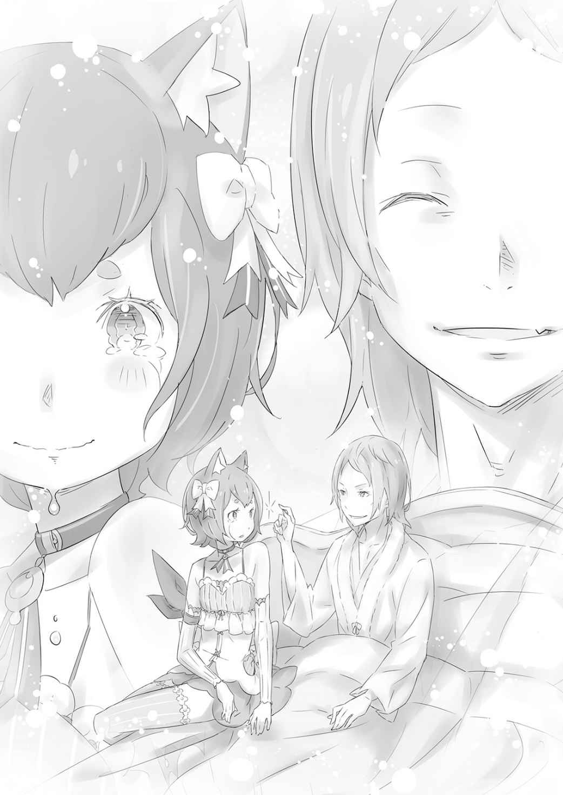
「──はい。楽しかったですね、殿下」
５
──その日は晴れているが、少し風の肌寒い一日だった。
「クルシュ......少し、外に出たい。手を、貸してもらっても構わぬか？」
「わかりました。殿下、ご無礼をお許しください」
「なんと、余を抱き上げるか。はは、そなたは本当にたくましい女子よ。驚かされる」
ルグニカ王城の庭園には、季節の花々が咲き乱れる花園がある。
しかし、この数ヶ月の慌ただしさに、庭園を彩る花は少しばかり寂しい。
「なに、群れていないならいないで、愛でようがある。一つ一つの花の顔が見えた方が、よいこともあろう。なあ？」
「そうですね。さすが、殿下は何事にも良いところを見つけられるのがお上手です」
「で、あろう。そなたや、フェリスの良いところもいくらでも知っておる。ふふん、こればかりはメッカートにも負けまいよ」
庭園の片隅に座り込み、クルシュはフーリエに膝を貸して風を浴びる。
膝の上のフーリエは眠たげに目を細めながら、淡い視界に花園を映していた。
「覚えておるか、クルシュ。幼少のみぎり、余とそなたでよくここの花を見にきたのを」
「覚えています。父に連れられて王城へくると、手持ちぶさたな私は必ずここに足を運んで......そうすると殿下が会いにきてくれて、子供心に安堵していました」
「初めて、余がそなたを見かけたのは......」
「忘れもしません。殿下が空から降ってこられて、あのときは本当に驚きました」
思い出話に花が咲く。
微笑んで思い出を語るクルシュに、フーリエはゆるゆると首を横に振った。
「実は、違う。余がそなたを初めて見たのは、あれより前......この庭園で、一輪の蕾を愛でるそなたを、遠目に」
「......知りませんでした。お恥ずかしいところをお見せして」
「恥ずかしいことなどあるものか。余は、その姿に見惚れたのよ。胸が高鳴り、頬が熱くなり、ジッとしていられなくなった。それからいつも、そなたの姿を探して......あの出会いも、実は偶然ではなかったのだ。ふふ、驚いたであろう」
「──はい、驚きました」
フーリエが目を細めて、八重歯の見える微笑みを浮かべる。
クルシュは膝の上の金色の髪を指ですくい、青白い頬をそっと撫でた。
「驚きついでに、明かすとしよう。余の、恐るべき未来の計画を......」
「はい、驚かせてください。殿下、もっと私を、殿下の言葉で」
「よかろう。心して聞け......余はな、なんとそなたを余の妃に迎えるつもりだったのだ」
「────」
「そなたを妃に迎え、フェリスを余らの騎士にする。すると、どうだ。なんと余ら三人はずっと、一緒にいられる。これは、恐るべき幸福よ。どうだ？」
「それは......本当に、驚きの......」
クルシュの声が詰まり、顔が上げていられなくなる。
フーリエは薄く微笑んだまま、彼女の声に福音を感じて耳を傾けていた。
「色々、あったなぁ。余は、そなたの気を惹きたいがために......ふふ、無理も言ったものだ。そなたも、フェリスもずいぶん振り回して」
「......殿下に、手を引かれるのを苦に思ったことなど」
「なぁ、クルシュ......余は、どうであった？」
「殿下？」
「余は、そなたの忠に値する、獅子王であれたろうか......」
「──っ」
かつて交わした約束があった。笑い合った日々の欠片に、誓いがあった。
フーリエの問いかけに、クルシュの息が上擦った。
「そなたの忠は、尊く、愛おしい......努々、忘れるな」
自慢げに笑い、フーリエの手が持ち上がった。
その手がクルシュの頬に触れて、頬を伝う熱い雫を撫ぜて、指が唇をなぞった。
「クルシュ」
「はい、殿下」
「余は、そなたを......」
「────」
風が吹く。冷たい風が、フーリエの、クルシュの髪を揺らす。
「殿下？」
「────」
「殿下、お疲れになったのですか？」
「────」
「殿下、お疲れ様でした。どうか、ごゆっくりお休みください」
「────」
「最後に、一つだけ」
風は吹き続ける。でも、滲んだ視界には、加護を以てしても何も見えない。
庭園で二人、クルシュは膝の上のフーリエを抱いて、言った。
「殿下の描いた未来、私も見てみたかった......っ」
６
フーリエ・ルグニカの死は、国王ランドハル・ルグニカ崩御の報せの前に、ひどくささやかな事実であるかのように扱われた。
恐れていた事態の訪れに、残された議会は沈鬱な空気で満たされている。
クルシュもまた、倦怠と喪失感の中にいた。フーリエの存在はそれほど大きく、まるで半身を奪われたような衝撃が延々と彼女を苛んでいる。
今も瞼の裏には彼の最期の微笑みと、抜けるような吐息が焼き付いていた。
最後の最後、伝えられることのなかった告白は、宙に浮いて消えてしまったまま。
「──いつまでも、呆然としているわけにはいきません」
その停滞の空気に、最初に切り込んだのはやはりマイクロトフだった。賢老は俯く貴族たちの顔を順繰りに眺めて、全員の奮起を促そうとする。
「......そうだ。こうしている場合ではない。亡き陛下のご無念に報いねばならん」
誰かがそう言って、それに賛同する声が上がる。次第にその勢いが広がり、クルシュもまた空元気であろうと、顔を上げねばならないと奥歯を噛んだ。
下を向き続けるなど、それこそフーリエの望みに対する最大の裏切りだ。
いつだって前向きであろうとしたフーリエの、その笑顔が脳裏に浮かび上がり──。
「王家の血脈が断たれたのです。すなわち、龍の盟約が失われるということ。親竜王国ルグニカにとって、これ以上ない悲劇です」
──思い描いたフーリエの笑顔が、その発言にひび割れる。
耳を疑い、顔を上げるクルシュの前で別の人物が頭を抱えていた。
「まさか血族の全員がお隠れになるとは......龍はなんとするでしょう。盟約が失われてしまえば、王国の窮地はどうなります。帝国や聖王国と、関係悪化の現状で！」
──何を、言っている。
「保管してある『龍の血』も問題だ。よもや返還を求められないとも限らん。そうなったときのために、先んじて使用することも視野に入れて......」
──お前たちはいったい、何を言っているのか。
深刻な顔で話し合いを始める列席者たちを、クルシュは呆然としたまま眺めていた。
彼らが口々に語るのは、揃いも揃って『王家の断絶に龍がどう出るか』であった。龍の庇護に守られ、幾度も窮地を救われてきた王国だ。彼らの懸念はもっともであり、龍に頼る気持ちはクルシュにもあった。だが、いの一番に嘆くことがそれか。
王国の行く末に論を交わすならいい。国王の不在に際し、他国への折衝に心を砕くのであれば許せた。しかし、龍におもねるための相談が、何より優先されるのか。
嫌悪感が込み上げ、それと同時にクルシュは気付いた。気付いてしまった。
誰も、王家の断絶を本気で悲しんでなどいない。彼らが不安がっているのは、王家断絶の結果、龍に見限られることだ。龍の揺り籠から放り出されることを恐れているのだ。
国王の死も、王家の断絶も、二の次だ。
──フーリエの死は、彼らにとってついでの悲劇でしかない。
おぞましいのはクルシュですら、フーリエと親しくしていなければきっと、彼らと同じ不安に肩を抱いていただろうことだ。魂にこびりついた、ぬるま湯の甘えだ。
それはクルシュがもっとも嫌悪し、堪え難い、魂を曇らせた生き方そのものだ。
「皆様に、お話したき儀がございます」
騒然となる議事堂で、そう発言した人物に注目が集まった。
ライプ・バーリエル男爵──爵位は高くないが、ランドハル陛下に気に入られ、重用されていた男だ。彼は十分に注目を集めると、そのひび割れた声で宣言した。
「──竜歴石に新たな記述がございます。王国の未来、龍はすでに示しておりました」
その発言に、再びどよめきが場内に広がった。
竜歴石は龍より賜わった国宝の一つであり、王国の未来を記す予言板だ。これまでにも何度も、王国はその危難を竜歴石により知らされ、未然に防いできた。
龍への甘えを自覚した直後に、再び龍の力に振り回されることへの口惜しさ。クルシュの感慨など余所に、急かされるライプはその予言の記述を読み上げる。
「竜歴石の記述はこうです。『王家断絶の折、王国は竜珠に選ばれし五人の候補者を見つけ出し、新たな巫女として再び盟約を交わせ』と」
「竜歴石が、新たな王を選べと......？ その候補者を五名などと、どうやって！」
「徽章がございます。ルグニカ王家に伝わる、龍との盟約を語り継ぐ宝珠。その竜珠をはめ込んだ徽章は、資格に相応しきものの手の中で光り輝くのです！」
荒々しい声にライプが反論し、彼の指示で円卓の会議場に押し車が運び込まれる。その上に乗せられた宝珠の輝きこそが、ルグニカ王家に伝わる竜珠の徽章だ。
「真に王国を案じる忠臣と認められれば、自ずと徽章に選ばれることでしょう。これが竜歴石の戯言かどうか、お一人ずつ試されればよろしい」
ライプの従者の手で、議事堂に席を持つ各々の前に徽章が並べられる。その徽章を見下ろし、あるものは冷や汗を浮かべ、あるものは息を呑んだ。
仮に自分の手の中で輝くことがあれば、それは王位への道が開けたことを意味する。
クルシュの前にも徽章が置かれた。龍は王国への忠義を試すという。それが真だとすれば、今の自分が選ばれることはあるまい。だが、もしも──。
「では、試してみるといたしましょう」
マイクロトフの号令に従い、まずは賢人会の面々が徽章を手に取る。しかし、光を失った徽章に変化はない。かすかな息遣いとささやかな嘆息。そのまま流れるように、賢人会を中心に徽章への挑戦が広がる。落胆、それが連続し、クルシュの番がきた。
三角形に削られた黒曜石に、金で龍の意匠が彫り込まれた徽章だ。中央に赤い竜珠と呼ばれる輝石がはめ込まれ、身の丈に合わない人間の野心を嘲笑っている。
「何が、龍だ......」
口の中だけで囁いて、クルシュは徽章を手の中に握りしめた。
掌を広げ、全員の目に見えるように前へ突き出す。そして──、
「──なんと」
そう声を上げたのは、穏やかな顔に珍しい驚きの色を刻むマイクロトフだ。だが、それはこの場に集った全員の、その気持ちの代弁であったに違いない。
徽章はクルシュの手の中で、眩く光り輝いていた。
「──どうやら不甲斐ない我が身にも、王国のためにできることがあるようだ」
驚きは、なかった。
そのことに驚くほど、心は静かな心地にある。
それを自覚しながら、クルシュは顔を上げ、目をつむった。
──閉じた瞳の向こうで、フーリエの最期の笑みが見えた気がした。
７
王選の概要と、クルシュが候補者の一人に選ばれたことを知ったフェリスは、彼女の姿を探して王城の中をさまよい、庭園へと辿り着いていた。
「──クルシュ様」
呼びかけに躊躇うほど、花園の前に佇むクルシュの姿は儚げに揺らめいて見えた。
当然だ。ここはクルシュがフーリエと、最期の時間を過ごした場所。クルシュの心の中で、フェリスすら立ち入ることが許されない唯一の聖域。
胸に鋭利な刃を突き込まれたように、フェリスは自分の無力さに痛みを感じる。今すぐにクルシュの背を抱き、その心を癒す魔法が使えればいいのに。
「フェリスか。よくここがわかったな」
無力感に唇を噛むフェリスに、振り返らないままクルシュがそう言った。
時折、強く吹く風がクルシュの長い髪を揺らす。それを眺めやりながら、
「竜歴石のお話、聞きました。クルシュ様が、次の王位の候補者に選ばれたって......」
「ああ、そのようだ。どうやら私は龍の目に適ったらしい」
「あの、その......おめでとうございます......だと、変なんですかね？」
怒涛のように訪れる運命の激流に、フェリスの心も決して穏やかではいられない。
近衛騎士になり、実の父母を亡くし、大切な絆であったフーリエを見送り、唯一の心の拠り所であるクルシュは王選に巻き込まれ、フェリスの安息はどこにもない。
「私、クルシュ様に何ができますか？ 何をしたらいいのか、わからなく......」
困らせたくないのに、泣き言がこぼれ出すのが止められない。渦巻く感情は膨大で、ちっぽけなフェリスの器では留め置けない。
浮かび上がる涙に視界がぼやけて、フェリスは逃げ出したくなった。だが、
「フェリス、私を見ろ」
クルシュの声に呼ばれて、フェリスは肩を跳ねさせた。
靴音がして、爪先が俯く視界の上に映り込む。顔を上げれば正面で、クルシュがフェリスを真っ直ぐに見ていた。琥珀色の瞳の魔力に、フェリスは魅入られる。
「フェリス、最初にお前に誓おう。──私は、王になることを望むと」
「クルシュ、さま......」
迷いのない彼女の断言に、フェリスは息が詰まった。
王選を勝ち抜き、国王の座に就くことを望むと、クルシュはそう宣言したのだ。
「殿下と初めてお会いしたのはこの庭園だ。よくここで殿下と話をしながら花を眺めた」
言葉の出ないフェリスの前で、クルシュはふいに庭園を眺めて話し出す。穏やかな語り口と、あくる日の面影を記憶に追い求める眼差し。
それが誰との思い出であるのか、問い質すまでもない。
「そのうち、殿下は屋敷にも顔を出してくださるようになって......話したことはなかったな。殿下と会うまで、私は髪を結っていた。今ではリボンでまとめるばかりだが」
「そう、だったんですか。なんで、髪を下ろすようになったんです？」
「殿下に、自分らしくせよと言われてな。以来、そうした。お前に渡したリボンは私が選んだものだが......始まりは殿下だった」
クルシュに贈られ、今も髪を飾る白いリボンにフェリスは思わず指を伸ばした。
知らなかった思い出の数々、それが次々と語られ、次第にフェリスも共有する思い出へと変わる。涙が浮かび、笑みが止まないほど愛おしく騒がしい絆。
「フェリス。私は殿下が......殿下とお前と過ごす時間が、愛おしかった」
フェリスがクルシュに屋敷から連れ出され、初めて人間になった日。あの日からフェリスはクルシュと共にあり、その輪にはすぐにフーリエが加わり、三人になった。
フェリスの人生はクルシュと、フーリエとが大部分を占めて、それでできている。
「だが、龍の存在はその時間を否定する。殿下の存在は多くのものたちにとって、龍と結んだ盟約の手形代わり......その死が本当の意味で惜しまれることはない」
硬直するフェリスの前で、クルシュの瞳に炎が揺らめく。
クルシュは何を見たのか。フェリスが傍にいれないそのとき、何を見てしまったのか。
「だが、あの方はいたのだ。私とお前の心に、これだけ強く刻まれるほど。あの方は確かにいたのだ。他でもない、フーリエ・ルグニカはいたのだ」
クルシュが右手で自分の胸を、左手でフェリスの胸を触れる。ただ触れただけのその指先から伝わる熱が、フェリスの全身を焼き焦がしていく。
余計な思考の一切合財が、クルシュの炎の決意に呑み込まれ、焼失していく。
「私の獅子王であろうと、そう言ってくれた方は確かにいたのだ。それがなかったことになるなど、私は断じて許さない」
龍の盟約は王国を包み、長きにわたるその庇護は人々を守り、しかし心を弱らせた。
あの心優しく、誰からも愛される青年の死を、蔑ろにさせてしまうほど。
フーリエの死を、龍と交わした盟約のついでのように思わせるほど。
「あの方の死は、あの方のものだ。私の獅子王は、今も私の中にいる。私の獅子王が見た夢を、私もまた見続けている。──私しか、それは為せない」
誰も、王国の歪な在り方に気付いていない。
龍におもねり、龍に願い、龍を頼るあまり、誰もが自ら歩くことを忘れている。
「私以外が王になっても、それは正されない。真に正しく王であろうとした人を、誰も覚えていないからだ。だから、私たちこそがそれをしよう」
「クルシュ様......」
呟いたフェリスに、クルシュは腰から外した短剣を差し出した。受け取ったそれは獅子の紋章が刻まれた、カルステン家所縁の逸品──。
「殿下の見た夢がある。私と、殿下と、それからお前の三人で、未来を創る」
「殿下と、クルシュ様と......三人で」
ずっしりと重い短剣の重みに、フェリスはようやく理解した。
フーリエとクルシュの決意に、自分が彼女たちの傍でやらなければならないことを。
フェリスにはもう、クルシュしかいないのだから。彼女こそが、全てなのだから。
「殿下が愛した場所で、殿下の最期の場所で、殿下に誓おう。──お前を騎士とする」
クルシュの厳かな宣言に、フェリスはその場に黙って跪いて短剣を差し出した。
受け取り、クルシュは引き抜く短剣の刃の腹で、フェリスの左右の肩に触れる。そして再び短剣がフェリスへ戻され、誓いの儀式が終わる。
誰も知らない騎士の叙勲──否、ただ一人、二人の獅子王だけが見てくれていたはず。
そしてそれは始まりであり、二人にとっての獅子王が見た夢の続きであった。
「ゆくぞ、フェリス。──龍から王国を取り戻し、殿下の夢を本物とする」
「はい、クルシュ様。連れていってください。殿下の見た、夢の彼方に」
振り返るクルシュの背に、フェリスはもはや迷いなく続く。
王選参加者最初にして、もっとも強い絆で結ばれた主従は堂々と歩き出した。
その二人の歩みを、始まりの庭園の花々だけが見つめている。
──風に揺れる一輪の花、その蕾はいまだ開花のときを静かに待ち続けていた。
《了》
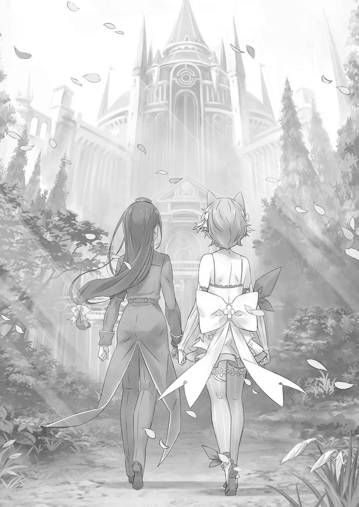
あとがき
どうも、毎度お世話になっております。長月達平です。あるいは鼠色猫と、そう名乗った方がわかりやすい方もいるかもしれません。
あ、わかんなかったらスルーしてください。すいません。
さて、今回の『Ｒｅ：ゼロから始める異世界生活』は番外編となっております。
以前にも短編集という形で本編外のお話を出させていただいたのですが、今回はそのナンバリングから外れて、あえて『短編集』ではなく『Ｅｘ』と銘打ったタイトルです。
本当は今回も、前回の短編集のノリを引き継いでいく予定だったのですが、打ち合わせ段階でクルシュ陣営の話が多く、「これならいっそ、全部クルシュ陣営のお話にしますかー」なんて提案をしたらそれが通って、あれよあれよという間にこの番外編の完成です。
本編主人公の出番ゼロで、主人公たちとは別の陣営の掘り下げとはなかなか挑戦的な内容となっていますが、ここまで読んでくださった皆様がこの番外編で、色々あって大いに悩み苦しみ、それで決意した彼女たちを少しでも好きになってくれて、本編での活躍を楽しみにしていただければ幸いです。
そんな本の内容は実際に読んでいただくとして、作者の近況などをお話すると、最近の自分は今さらですがＴＲＰＧにハマっているところです。
ＴＲＰＧの存在自体は知っていましたが、初心者がツテもなく入るには敷居が高い──そんなイメージがあり、なかなか踏み込むことができずにおりました。が、色々と周囲の助けもあり、ようやっと手を付けてみましたが......大変です、ものすごい面白い。
創作者ならばＴＲＰＧにはハマる、などと言われていたものですが、なるほどこれはなかなか他の遊びで味わえる感覚ではありません。他人の世界で自分の想像力を暴れさせる遊びに、夢中にならない作家はいないのではと思うほどです。
自分だけの発想で困難を乗り越えたり、ＧＭに従って謎を紐解いたり、ちょっとしたミスでキャラを発狂させたり、とにかく色々楽しんでやらせてもらっています。
こうして本を出させていただく過程で、新しい交友関係が増えて、知らなかった世界を垣間見ることで、これまでと違った着想や発想が得られる。そういったことが人生には重要です。何事も挑戦、皆さんもぜひＴＲＰＧに限らず、色々やってみましょう。
手始めにこの作品を知らない人に勧めて、そのお友達の世界を広げてあげると長月が喜びます。手軽に人一人を幸せにする方法です、お試しあれ。
そろそろページもページですので、いつも通りの謝辞に入らせていただきます。
担当のＩ様、いつもお世話様です。本編でまだ活躍していないキャラの掘り下げなんて突飛な提案、受けていただいて感謝です。毎度、無茶振りばっかりで申し訳！
イラストの大塚先生、いつもながらの素早いお仕事と素晴らしいイラスト、ありがとうございます。毎度たくさんのキャラをデザインしてもらうのに、ささっと上がってきて驚きます。今回のお仕事も、フーリエの馬鹿っぽさが実にいい感じです、お見事でした。
そしてデザイナーの草野先生、本当にいつもありがとうございます。今回はいつもよりタイトルロゴが長いこともあって、『さすがの草野先生でも無理だろう！』となぜか挑戦者みたいな雰囲気で挑みましたが、完敗です。今後もこの敗北感を叩き込んでください。
その他にも編集部の皆様や営業様、校正様や各書店の皆様など、たくさんの方々のご協力があって、この本も形にすることができました。ありがとうございます。
そして何より、この本を手に取って、物語にお付き合いしていただける読者の皆様、今回もありがとうございました。ぜひ、また次の物語にもお付き合いください。
ではでは、次は本編の７巻でお会いできれば幸いです。かしこ。
２０１５年５月長月達平《５月の暑すぎる陽気に、今年の夏を怖がりながら》
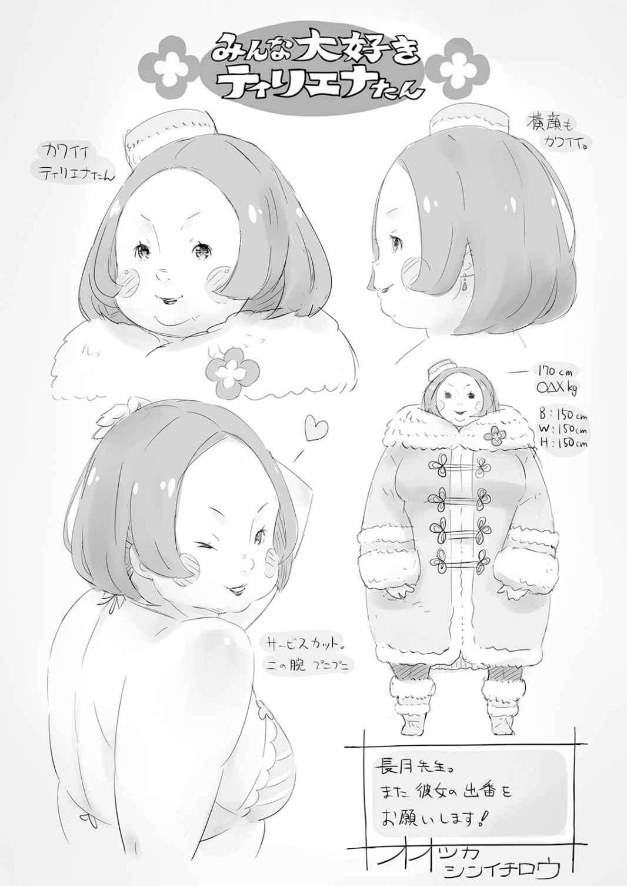
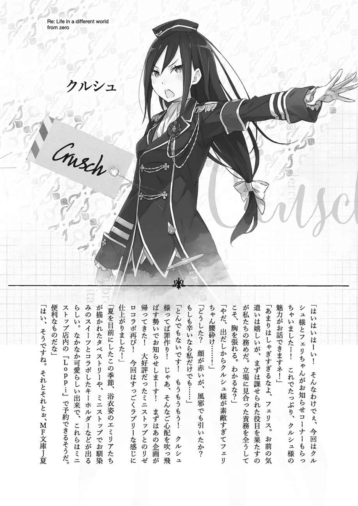
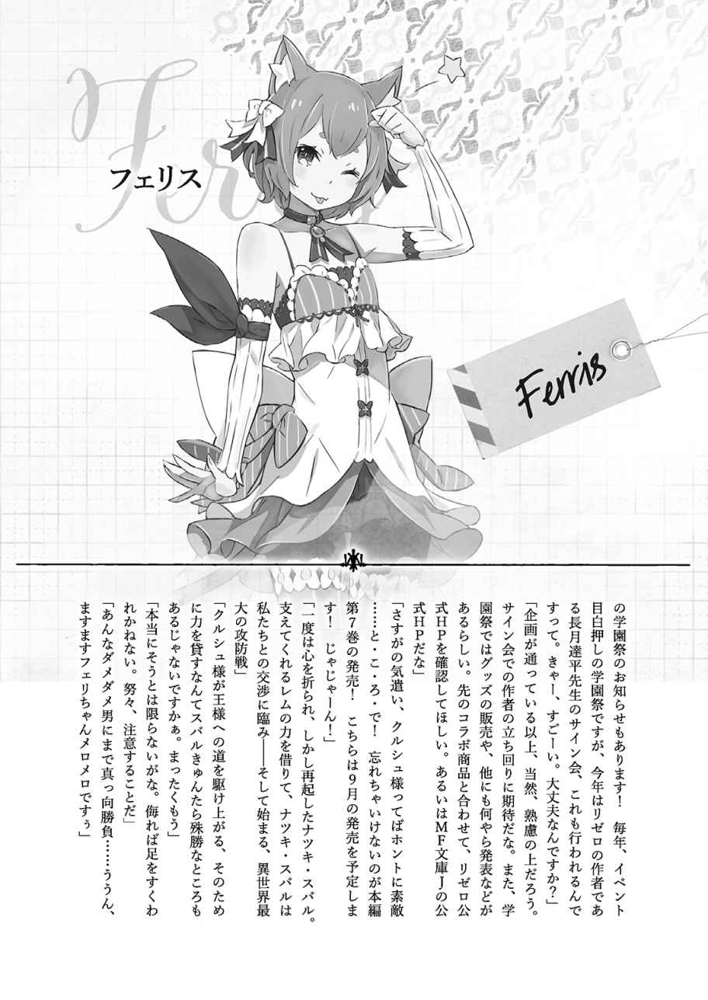
著者
長月達平（ながつき・たっぺい）
１９８７年生まれにして、１９９３年６月にこめかみを箸に抉られる。箸を順手で握ったまま転び、そこに頭から倒れ込むダイレクトアタック。わざわざ人体急所を狙うあたりが運命の悪戯の怖いところだが、もっと怖いのは血を流して泣き喚く我が子を放置しておじやを作り続ける母。そのときの傷跡が顔にも心にも残っているのか、おじやが今でも苦手。
小説投稿サイト「小説家になろう」にて、同タイトルの小説を投稿中。
イラスト
大塚真一郎（おおつか・しんいちろう）
熊本出身のイラストレーター。ゲームを中心に小説の挿絵なども描いてます。代表作は「コンセプション」、「サモンナイトクラフトソード物語」など。
カバー・口絵・本文イラスト／大塚真一郎
装丁／草野剛
Ｒｅ：ゼロから始める異世界生活Ｅｘ
獅子王の見た夢
長月達平
平成27年6月30日 発行
(C) Tappei Nagatsuki 2015
本電子書籍は下記にもとづいて制作しました
ＭＦ文庫Ｊ『Ｒｅ：ゼロから始める異世界生活Ｅｘ 獅子王の見た夢』
平成27年6月30日初版第一刷発行
発行者 三坂泰二
発 行 株式会社ＫＡＤＯＫＡＷＡ
〒102-8177 東京都千代田区富士見2-13-3
0570-002-001（カスタマーサポートセンター）
年末年始を除く平日10：00～18：00まで
http://www.kadokawa.co.jp/